§001 Politics：本周政治原题：Politics：本周政治 · 板块：The world this week · 栏目：本周
基尔·斯塔默宣布辞去英国首相职务，距离他赢得大选并获得压倒性多数仅不到两年时间。促使斯塔默决定辞职的直接原因是安迪·伯纳姆在补选中获胜。这位此前的大曼彻斯特市市长是工党热门人选，将于7月中旬角逐党魁职位。斯塔默任内饱受承诺落空和政策逆转困扰，许多决策被迫由激进的后座议员推动。其判断力也受到质疑，包括副首相在内的多名顾问和部长因不当行为被迫辞职。在工党遭遇惨败的地方选举后，七名内阁成员因与斯塔默产生分歧而辞职。■
基尔爵士宣布辞职后，欧盟推迟了原定于7月22日举行的英欧峰会。基尔爵士曾将该峰会视为重置英欧关系的机会，但欧盟希望等到新任首相上任后再展开磋商。对英国保守党而言，这则消息堪称罕见利好——该党在苏格兰赢得近50年来首次补选，击败苏格兰民族党于南阿伯丁选区。竞选焦点集中于民族党对油气产业缺乏支持。阿伯丁（Aberdeen）是英国北海能源产业的核心。美伊官员在瑞士举行会谈，商讨和平协议的后续步骤。卡塔尔和巴基斯坦调解员报告称已取得“积极进展”。“■”
但唐纳德·特朗普警告称，在60天的停火期结束后，他“可以做任何想做的事情”。总统威胁称，如果真主党（伊朗在黎巴嫩的代理人）不加以遏制，他将接管霍尔木兹海峡并重新对伊朗发动攻击。在伊朗的敦促下，美国再次对以色列和黎巴嫩真主党实施停火协议。黎巴嫩和以色列官员在华盛顿重启对话。伊朗首席谈判代表表示，若同意设立通过该海峡船舶的热线电话，伊朗将“管理”霍尔木兹海峡。美国国务卿马可·鲁比奥表示，任何国家都不允许对通过海峡的船只收取费用。通过该海峡的油轮数量持续增加，油价已回落至战前水平。布伦特原油价格跌至每桶73美元以下。
国际原子能机构（IAEA）负责人表示，该机构将根据与美国最初的和平协议，对伊朗核设施进行检查。伊朗官员称，只有在最终协议达成后才会讨论访问权限。联合国安理会警告称，苏丹局势可能进一步恶化，因快速支援部队（Rapid Support Forces）已包围北科尔多凡州首府埃尔奥贝伊德（El Obeid）。有担忧称，该市约50万居民可能遭遇与去年北达尔富尔州首府埃尔法舍尔（El Fasher）相似的命运，当时快速支援部队曾屠杀平民。埃塞俄比亚选举委员会确认，由总理阿比·艾哈迈德（Abiy Ahmed）领导的繁荣党（Prosperity Party）在6月1日的议会选举中赢得约90%的席位，而反对派称该选举存在舞弊。■
选民在数个冲突频发地区发现投票异常困难。美国国会以两党广泛支持通过了一项住房法案。该法案旨在通过放松联邦监管扩大住房供应，希望借此刺激建设并降低住房成本，但未涉及地方建筑限制。易怒的特朗普表示，除非国会通过其选举改革法案，否则他不会签署该法案。民主社会主义者在纽约市的三场国会初选中获胜，其中两场击败了由民主党主流派和工会支持的现任议员。左翼市长佐赫兰·马姆达尼（Zohran Mamdani）支持所有三位候选人，表明其人气自今年一月就任以来未减。■
克里斯·多纳休将军提交了辞呈，辞去美国在欧洲的最高指挥官职务。皮特·赫格塞斯，美国战争部长，领导了对美军高级军官的清洗，并正在审查美国在欧洲的驻军承诺。印度抗议者要求教育部长辞职，原因是政府决定让220万医学生重考。此前考试结果被取消，因发现试卷在即时通讯应用上泄露。抗议活动由“蟑螂人民党”领导，该党是一个日益壮大的政治运动，代表印度不满的年轻选民。哥伦比亚总统选举由保守派阿贝尔多·德·拉·埃斯皮埃拉赢得，他得到唐纳德·特朗普的支持。他以不到1%的微弱优势击败了左翼参议员伊万·塞佩达。
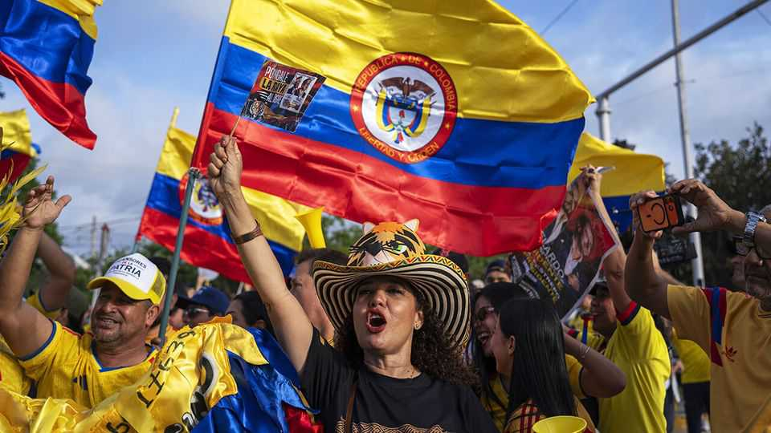
选举标志着哥伦比亚在古斯塔沃·佩特罗任期后出现右翼转向。在佩特罗执政期间，与美国的关系降至新低，特朗普曾称其为“病态之人”。德·拉·埃斯皮里拉借助南美右翼浪潮崛起，该浪潮已推翻其他政府，选民因猖獗的犯罪和高昂的生活成本而愤怒。南美右翼倾向进一步凸显，小矶宏子似乎在6月7日举行的秘鲁总统选举中胜出。最新选票统计显示，小矶宏子已大幅领先左翼对手罗伯托·桑切斯，官方最终结果将于7月中旬公布。两次强烈地震袭击委内瑞拉，造成多人伤亡。
震中位于加拉加斯以西200公里（约125英里）的桑菲佩尔，但首都建筑物也倒塌，交通系统陷入瘫痪。美国表示将向该国派遣搜救队并提供医疗和人道主义物资。地震发生在国庆假期，许多居民在家未上班，伤亡人数预计将进一步上升。玻利维亚温和派总统罗德里戈·帕斯宣布进入紧急状态，赋予其清除抗议者设立数周的路障的广泛权力。抗议者要求政府削减紧缩政策并恢复燃油补贴，但他们设置的道路障碍已阻碍基本物资运输。政府部分归咎于前左翼总统埃沃·莫拉莱斯激化了局势。
玻利维亚（Bolivia）同时与美国签署了一项新的合作协定，旨在打击毒品走私。该协议得到了帕斯先生的支持。莫拉莱斯在执政期间曾驱逐美国缉毒局人员出境。匈牙利新任中间派总理彼得·马加尔（Peter Magyar）提出了广泛的反腐改革措施。这些措施被称作“净化之火行动”（Operation Cleansing Fire），包括成立一个强大的反腐败机构和对宪法进行审查。马加尔还提议通过修宪罢免塔马斯·苏利奥克（Tamas Sulyok）担任总统。苏利奥克是前总理维克多·奥班（Viktor Orban）的盟友。西欧大部分地区在热浪中经历了极端高温，打破了多项气温记录。法国记录到自1947年以来的最高气温，当气温达到44.30摄氏度（111.70华氏度）时，地点位于波尔多以南的皮索斯（Pissos）。■
法国各地至少有48人在溺水事故中遇难，人们纷纷跳入河流湖泊。酷热天气再次引发欧洲关于是否应安装更多空调的长期争论。■
§002 Business：本周商业原题：Business：本周商业 · 板块：The world this week · 栏目：本周
，英伟达（Nvidia）市值单日蒸发近6000亿美元）。与此同时，SpaceX启动了首笔债券发行，面向机构投资者，发行期限涵盖多个成熟期，预计融资250亿美元。公司将使用这笔资金偿还3月份获得的过桥贷款，当时xAI（埃隆·马斯克的AI公司）与X（其社交媒体平台）与SpaceX合并。
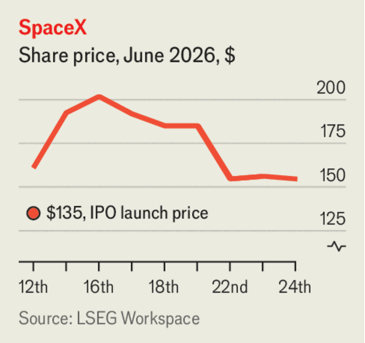
■
其他科技股本周重挫，因人们对AI相关企业高估值的担忧以及加息预期再次令投资者不安。芯片制造商如美光科技（Micron）、英伟达（Nvidia）和高通（Qualcomm）的股价大幅下跌。字母表（Alphabet）股价下跌5%，因两位资深AI研究员宣布离职，其中一人将加入Anthropic，另一人将加入OpenAI。不过，美光科技在发布季度财报后提振了投资者信心。该芯片制造商营收同比激增345%，达415亿美元，净利润飙升1400%，至282亿美元。韩国股市交易也波动剧烈，以三星电子和SK海力士为主的KOSPI指数单日下跌10%。股市交易量异常高涨。■
韩国股市熔断机制今年第四次被触发。2025年该机制从未被启动。与此同时，SK海力士（SK Hynix）首次提交文件计划在美国上市，计划于7月10日起在纳斯达克交易所开始销售美国存托凭证（使美国投资者可购买其股票），并希望筹集45.4万亿韩元（约合294亿美元）。过去几年，投资者一直在思考，为媒体及其他创意市场提供股票图片、视频和图形的公司如何在AI时代生存。Getty Images通过与OpenAI达成授权协议给出了答案，该协议将使Getty内容在ChatGPT上可用，为聊天机器人提供可靠的图片来源。Getty股价随之飙升。■
印度或将启动史上最大规模首次公开募股（IPO），其最大移动网络运营商Jio Platforms向监管机构提交了招股说明书草案，正式启动股票上市进程。Jio是穆克什·安巴尼（Mukesh Ambani）旗下Reliance Industries的子公司，这位商业大亨称此举是“极具情感意义的时刻”。Jio希望通过此次IPO筹集40亿美元资金，使公司市值达到1300亿美元。一项监管文件显示，软件巨头Oracle在过去12个月内裁减了21000个职位，其全球全职员工人数降至141000人。由于数据中心扩张导致成本激增，Oracle面临削减开支压力，但实际裁员规模远超多数分析师预测。Oracle表示，人工智能已取代部分员工。■
在中国，京东创始人刘强东预测，机器人迟早会取代这家电商平台的70万配送员。刘强东表示，机器人最终将负责所有配送工作，而员工则需要接受再培训，以维护和修理这些自动化同事。中国在机器人技术上的实验可能威胁到零工经济中数以万计的司机的就业。去年深圳机场推出了一项服务，允许乘客下单点餐，并由机器人将餐食送至登机口。一家使用AI替代律师的律所，在英国法院赢得了一起案件，这被认为是全球AI在法律领域首次取得的突破。加菲猫AI利用该技术准备案件，帮助一位人力资源自由职业者追回公司欠她的款项，尽管她在法庭上由人类律师代表出庭。■
自由职业者花费400英镑（约合525美元）购买AI法律服务，最终获得7000英镑赔偿，而被告方律所则为法律建议支付了费用。人们向已故的艾伦·格林斯潘（Alan Greenspan）致以敬意。格林斯潘曾担任美联储主席（1987-2006年），任期位列第二。他因政策掌控力和爱说长篇大论的风格被昵称为“大师”。他曾说：“如果我的表述特别清晰，那可能你误解了我的意思。” ■
§003 人工智能的反扑才刚刚开始原题：The AI backlash is only getting started · 板块：Leaders · 栏目：领导人
人工智能技术的进步早已令技术圈感到不安。最近，选民们也开始感受到这种焦虑。人工智能在西方国家并不受欢迎，正逐渐上升为政治议程的焦点。迄今为止最激烈的对抗出现在美国，针对数据中心的抗议活动已使价值近1000亿美元的项目泡汤，两大人工智能超级捐助者刚刚向曼哈顿国会选区的竞选投入数千万美元，约40%的选民告诉民调机构，他们希望将人工智能禁止在大多数行业中使用。但冲突也正在其他地区爆发：在韩国芯片制造利润最近飙升后，三星的工人威胁举行罢工以争取特殊奖金。■
反扑才刚刚开始，因为这项技术也才刚刚起步。英国临时首相安迪·伯纳姆（Andy Burnham）对人工智能几乎只字未提。就连美国人仍将人工智能排在39个选举议题中的第29位。这种局面注定会改变，而数据中心的建设争议已预示了未来可能面临的激烈斗争。这些建筑引发的不满情绪远超传统的邻避主义。更多的美国人表示，比起建数据中心，他们更愿意看到隔壁建核电站。就连在犹他沙漠建造数据中心的计划也遭遇了强烈反对。数据中心确实可能显得丑陋，但反对声反映了这项技术的公众形象。AI领域的领头人多年来一直警告，人工智能可能引发大规模失业危机，甚至可能制造出足以让人类灭绝的超级病毒。■
数据中心的反对者们各有各的论调，有人认为它们在保护环境、保障就业乃至拯救物种——他们并非全然错误。然而这种反扑本身却暗藏危险。人工智能有望像电力或蒸汽机一样重塑世界。不久前，发达国家面临的时代性问题曾是经济停滞及其引发的民粹主义，如今却拥有一种能推动生产力和收入跃升的技术，有望找到无法治愈疾病的疗法，并改善从教育到绿色科技在内的方方面面。若各国限制计算能力或将其监管至无用，这一切都将付诸东流。看看新冠疫情期间mRNA疫苗研究因舆论反扑而受阻的案例便知。令人担忧的是，一些国家可能屈从于民粹情绪，而另一些国家则继续推进，这种分化局面同样令人不安。■
如果美国在AI领域失利，可能会将全球AI前沿及相关的网络和军事能力拱手让给专制的中国。欧洲和加拿大比美国更风险规避。如果他们在全球其他国家持续推进AI发展的同时却扼杀AI，其损失可能难以挽回。自工业革命以来的两个多世纪里，鲜有国家能追上先发国家。因此，风险极高。政府能做些什么？关于“后AI时代社会契约”的宏大宣言虽适合博客讨论，但对当前实际问题帮助有限。此外，未知因素依然庞大，使这一尝试几乎徒劳。不如采取渐进策略。■
上世纪80年代，中国经济以年均10%的速度增长，远超除最激进预测外的AI驱动增长预期。邓小平领导的座右铭是“摸着石头过河”：逐步推进，边实践边规划，保持灵活性。应对AI时代的挑战同样需要这种精神。为此，本文为政界人士和AI企业提出四点政策建议。首要任务是尽可能广泛地分享AI带来的好处。需向阻碍者展示，若他们让路，其所在地区将获益。明智地，数据中心企业已开始向周边城镇提供资金支持。逐步而言，这种做法需扩展至全社会，建立机制让民众意识到自身在AI发展中的经济利益，并通过工资保险等政策帮助其适应变革。■
唯有共同的繁荣感才能缓解全球化时代浮现的毒化零和博弈政治。其次，应适时干预。人工智能赋能的网络攻击或生物恐怖主义的严重威胁仍未被足够重视。应对这些议题及其他问题本身至关重要，但也能削弱无差别禁止或限制人工智能的论据。理想情况下，这些努力应体现国际合作。第三，应全面衡量。普遍认为人工智能已导致裁员并推高电费的观点可能有误，但缺乏更精确的统计数据，很难确定真相。■
数据中心正面临关于用水量的病毒式传播担忧，这其实是个被捏造的问题。（现代数据中心的用水量并不比其他行业多，总量远低于美国高尔夫球场。）事实无法根除误读，但缺乏事实只会让误读愈演愈烈。英国人工智能安全研究所与新成立的人工智能经济学研究所或可为其他国家提供范例。第四，利用AI提升政府效能。不仅私营部门能借助AI提升生产力，政府服务也应如此：报税应如履薄冰般便捷；公立医院应无缝对接数据，学校可探索AI驱动的教育模式。AI还可能让公民更便捷地监督政客动向。若AI能助力祖母的抗癌治疗或助力孩子的学业，公众对技术的抵触情绪将大为缓解。■
如果他们相信政府能有效运作，他们更可能信任政府能够监管这一领域。选民关注人工智能如何改变他们的生活是正当的。未来将充满混乱、怪异和不可预测性。说服他们变革带来的利益已与提升人工智能模型同等重要。失败将引发更多抗议——并摧毁人类巨大的发展机遇。■
§004 Andy Burnham承诺带来希望原题：Andy Burnham promises hope. Britain needs more than that · 板块：Leaders · 栏目：领导人
看看英国衰落的种种迹象：经济增长乏力，公共债务达到GDP的95%。公共服务运转不畅，武装部队力量被削弱。街道肮脏，选民情绪恶劣。BBC甚至取消了《Doctor Who》的圣诞特别节目。此外，Sir Keir Starmer作为首相的表现也乏善可陈。他以压倒性多数当选并获得恢复英国的使命，但仅执政两年便离开唐宁街。他的失误并非像大卫·卡梅伦那样源于傲慢的宏大误判。■
这并非一场丑闻，就像鲍里斯·约翰逊在封锁期间在唐宁街举办的醉酒派对那样。他并未犯下灾难性错误，不像莉兹·特拉斯的财政预算那样。基尔爵士只是无法有效整合权力或阐明自己为何需要权力。他的政府如同在热浪中枯萎的室内植物般萎靡不振。除非出现完全出乎意料的情况，安迪·伯纳姆很快将成为英国十年内的第七位首相。他必须直面英国社会结构与政治体系的双重衰退。他无法单独修复其中任何一个问题。然而，他几乎没有迹象表明他理解即将面临的任务的规模与紧迫性。伯纳姆先生上周才重返下议院，他具备基尔爵士所缺乏的才能。即便在最后时刻，这位首相仍无法阐明自己为何应继续任职，这也是为何本报认为他应下台。■
握手、组建联盟和赢得辩论并非首相的分心之事，而是其核心能力。本·布伦南（Burnham）兼具魅力与斗士特质，这些能力他都拥有。当左右翼民粹主义者重新挖掘陈旧的错误观念时，中间派的存续依赖于能够有力反驳的人。本·布伦南赢得Makerfield选区补选的策略也展现了令人耳目一新的胆识。他务实且经验丰富，拥有在威斯敏斯特的漫长政治生涯以及担任大曼彻斯特市长的经历。他也有一些不错的政策主张——包括将权力下放给英格兰各地区、改革财产税等。但这些远不足以构成遏制英国衰落的系统性方案。■
如果布兰登·伯纳姆（Brendan Burnham）认为从容不迫的态度或绕过重重障碍的能力就足以胜任，那么他显然未能理解自己需要完成多少工作才能避免其六位前任遭遇的结局。领导层更迭之际，正是向选民揭示他们寅吃卯粮现实的最佳时机。即便英国面临增加国防和基建支出的压力，债券市场已将财政部置于监管之下。该国在G7成员国中借贷成本最高。然而，尽管实际上在Makerfield补选中角逐首相职位，伯纳姆至今仍未提出令人信服的英国复兴方案。他上任后政策的核心应是经济复苏。他对拟任财政大臣人选的模糊态度，也显示出在数周内政策仍处于未定状态。■
与其考虑简单的增税与减支平衡，Burnham已转向讨好选民。他声称可通过削减福利，以“预防性措施”而非“粗暴削减”为国防筹措更多资金，但“预防性措施”究竟意味着什么尚不明确。他计划通过在现有财政规则中寻找灵活性，挤出更多借贷空间来投资基建。与其提升税制效率，他却无必要地向选民承诺不会提高最大税源，这正是迫使Keir爵士陷入痛苦财政困境的桎梏。Burnham的政策倾向似乎也不具说服力。原因之一在于他善于随风转变立场。英国下一任首相总能根据风向调整立场，对在场人士投其所好。他对欧洲的态度也取决于提问者是谁。■
在Makerfield选区，他成功凝聚了各类不满群体，从因税收政策受损的公共酒馆业主，到因建房计划而烦恼的反对建房者（Nimbys）——随后承诺提供更优质的公共服务，暗示将削减税收并修建智能新道路。有时他的政府理念实质上是对“伦敦精英阶层”的抱怨，认为他们阻碍了北方的发展。怀旧情绪同样是个问题。在科技与地缘政治发生剧变的当下，Burnham却向选民承诺能逆转“40年新自由主义”的影响。他没有抓住机遇为英国应对人工智能做准备，也没有利用英国世界级的服务业优势，反而提出要接管公用事业并重振英格兰北部的工业就业。这将耗费政府大量时间和资金，最终只会进一步损害政府公信力，助长民粹主义。■
关键在于Burnham是否愿意挑战自己的议员。几乎可以定义为，任何值得推行的改革计划都必然包含左翼不喜欢的措施。基尔爵士在任期初期失去权威后，下议院议员们尝到了造反的滋味。顺从的Burnham是否能说不？《经济学人》希望Burnham能打消我们的担忧。他或许对英国为何变得如此僵化和不快乐有深刻见解。他或许会挑选能制定变革方案的部长和顾问，同时自己担任首席推销官。他的口号是“希望”：也许这能让苦涩的真相更容易被接受。无论如何，他必须迅速行动。英国选民很快会对现任者厌倦，尤其是对通过政变上台的首相更是如此。Burnham的圈子表示，他们尚未有时间准备就任。■
但他们设定了时间表。他们的人已无资格要求耐心。如果伯纳姆先生无法胜任这项任务，他将很快被揭穿，而裁决也将毫不留情。他长期以来将英国的困境归咎于西敏寺的精英阶层。很快，这些麻烦将全由他独自承担。■ 仅限订阅者：想了解我们如何设计每周封面，请订阅我们的《封面故事》通讯。
§005 伊朗日益强大之际，其邻国必须摒弃旧日纷争原题：With Iran emboldened, its neighbours must put old divisions aside · 板块：Leaders · 栏目：领导人
波斯湾的统治者们对动荡并不陌生。该地区的石油输出国曾在1973年石油危机中获益。六年后，伊朗革命促使他们中的大多数寻求美国的保护。最近对伊朗的战争也令人不安。但随着唐纳德·特朗普提出异常慷慨的和平条件，战后谈判反而让他们更加不安。接下来的几个月将颠覆旧有的确定性。波斯湾如何应对？波斯湾不仅是全球最重要的石油供应地，其机场也是全球旅客、货物和其他物流的枢纽。
其金融中心正日益壮大。许多富裕的外籍人士沉迷于低税率和明媚阳光。但这一切需要在本就动荡的地区维持一个安全泡沫。伊朗正威胁着这个泡沫。目前伊朗已对霍尔木兹海峡拥有绝对控制权，并计划对通过该海峡的油轮征收费用，可能以强制保险费为名。伊朗每年由此可获得数十亿美元收入。消费国努力摆脱对石油的依赖也可能给海湾国家带来麻烦。怎么办？海湾国家深知自身面临风险。尽管美国在最新冲突中帮助拦截了大量伊朗导弹和无人机，但超级大国正变得不耐烦，作为安全提供者的可靠性也日益下降。因此海湾国家必须学会更多依靠自身力量。■
关键在于找到合作方式，不再总是依赖美国来协调。最紧迫的是加强军事协作。近年来海湾国家虽各自大量采购军备，但单靠自身力量难以抵御伊朗的袭击。即便拥有先进防空系统的阿联酋（UAE），也需求助法国和韩国。以色列紧急派遣铁穹系统以增强阿联酋的防御能力。美国长期敦促海湾盟国军队加强协作，但这些国家曾予以抵制，如今已无力承受彼此猜忌。共享更多传感器数据、共同识别并填补监控盲区是起步良策。迫切需求之一是构建新的声学传感器层，如同乌克兰所做，以实现对无人机更早预警。■
乌克兰已表明愿意成为武器装备和顾问的供应国。基础设施建设同样关键。海湾国家必须迅速开发替代霍尔木兹海峡的运输路线。例如，通过新建的通往红海或地中海的地下管道出口更多石油和天然气，将削弱伊朗的经济控制力。那些与邻国合作、允许邻国使用本国港口、并在政治边界间建设更完善的公路和铁路网络的国家，在遭遇威胁时将更具韧性。他们的长远目标应是使伊朗对霍尔木兹海峡的控制逐渐贬值。所有这些只是第一步，需要经历痛苦的战略转变：克服外交政策中的激烈竞争，尤其是沙特与阿联酋之间对地区领导权的争夺。■
他们对也门和非洲之角的致命干涉，已成为一种自我伤害的分心。若要团结一致对抗伊朗的共同威胁，海湾国家必须搁置在其他地区争夺影响力这一危险竞争。令人遗憾的是，这些竞争反而似乎愈发激烈。唯有更加团结的海湾国家，才有可能抵御伊朗的侵略，正如欧洲正努力寻找应对俄罗斯威胁的方法。没有人认为沙特和阿联酋结束纷争会轻松，这恰恰更凸显了现在就应开始行动的必要性。■ The Economist的订阅者可注册我们的Opinion通讯，汇集了最佳的社论、专栏、特稿及读者来信。
§006 普及高等教育最伤害贫困学生 领导层勿降标原题：University-for-all harms poor students the most · 板块：Leaders · 栏目：领导人
学术界始终在抱怨学生。11世纪的利吉厄学者埃格伯特曾抱怨：“学术努力的衰退前所未有，当时甚至不到十分之一的人能识字。”近期关于大学教育标准的担忧层出不穷——尤其在美国，这里拥有众多世界顶尖高校。但这次，正如我们的国际版所指出的，松懈并非仅存在于教授们的想象中。数学教授们报告称，他们不得不将新生送往补习班，才能开始真正的学习。■
一些学生进入大学时，对中学阶段本应掌握的知识仍一知半解。人文学科教授警告称，学生正难以理解十年前同龄人能轻松掌握的文本。越来越多学生要求缩短阅读书单。经合组织（OECD）的测试显示，大学生的读写能力较十年前有所下降。顶尖学生比以往更聪明，但越来越多学生的基本技能连同龄孩子都比不上。美国约七分之一的大学生在语文测试中的表现仅相当于普通十岁儿童。数学方面，近五分之一的学生表现类似。疫情对教育的冲击是其中一个重要原因。■
另一个因素是，即便在新冠疫情之前，美国及许多其他富裕国家的学校成绩早已开始下滑。与此同时，许多大学和学院纷纷降低入学门槛。在美国，它们已基本停止要求申请者参加数学和语言推理能力测试，如SAT。一些人认为这类考试对黑人和西班牙裔学生不公平。另一些人则试图凑足人数，因为美国18岁人口总数开始下降。这一切带来的代价巨大。用于重新教授基础知识的时间和金钱无法用于帮助天赋异禀的学生脱颖而出。准备不足的学生面临辍学风险，这可能比从未入学的后果更糟。而成绩薄弱的学生又给大学和学院提供了更多理由进一步降低标准。■
■经过多年评分膨胀，如今很难对管理者解决一个棘手的新问题充满信心：如何应对AI泛滥下的大规模作弊。阻止下滑的一个办法是防止学校标准下降。有人坚持认为，除非同时解决诸如儿童贫困或屏幕有害吸引力等顽疾，否则这是不可能的。事实上，新加坡的分数多年来稳步提升——即便在疫情期间也有所上升。英国的学校也因考试和课程改革使标准更严格，而逐步攀升国际排名。美国终于认识到，许多学校的阅读教学方法早已被其他国家摒弃为伪科学。率先扭转方向的州，如密西西比州，已取得显著进步。
另一种解决办法是高校领导重拾对高标准的承诺，既体现在录取学生的标准上，也体现在学生学习过程中的评估方式上。美国顶尖高校已开始重新引入针对所有申请者的强制性考试；其他高校也应效仿。5月，哈佛大学的学者们同意通过设定每门课程A级成绩的硬性上限来遏制成绩膨胀。这些比例已从2005年颁发的全部成绩中的24%飙升至去年的60%。这一举措曾被视为激进的提议；如今应更普遍。政策制定者应拓宽人们在离开学校后继续学习的途径。特别是在英语国家，除大学外的教育选择过于稀少。美国的学徒制甚至比英国（几乎为零）还少。■
美国的社区学院本应作为高中毕业生的跳板，帮助那些需要更多支持的学生。但如今选择进入社区学院的年轻人比例正在下降，而进入要求更高的四年制大学的比例却在上升。教育应当为每个人提供机会，绝不能成为阻碍，只惠及少数虚伪之人，而将处境不利者困于原地。但若在提升年轻人层次的同时，却不赋予他们所需技能，这既不现实，也不仁慈，更不是推动种族平等的举措。这是一种怯懦，让所有人失望。■ 订阅者可注册《经济学人》观点电子报，汇集本刊社论、专栏、读者来信等精华内容。
§007 全球失衡与欧洲工业困境关系不大原题：Global imbalances have little to do with Europe’s industrial woes · 板块：Leaders · 栏目：领导人
无论转向何处，欧洲领导人总在将本国困境归咎于全球失衡。马克龙（Emmanuel Macron）试图借助法国担任七国集团（G7）主席国之机发出警告。德国总理弗里德里希·默茨（Friedrich Merz）抱怨与那些使用低估货币结算的国家竞争。欧盟委员会主席乌尔苏拉·冯·德莱恩（Ursula von der Leyen）哀叹：“一些国家生产过多却消费不足，反之亦然。”
领导人真正想表达的是，他们对中国不满，因为中国强大的制造业正在许多市场中击败欧洲生产商。部分由于中国企业的竞争，欧洲正悄然经历去工业化：制造业增加值占GDP比重比2018年低了一个百分点。由于这些流失的岗位主要集中在受政治关注的行业，尤其是汽车制造，对“第二次中国冲击”的担忧已变得政治化。但欧洲领导人将问题归咎于中国，可能忽视了自身的问题。欧洲人确实有道理，全球经济失衡，中国部分责任在内。中国经常账户盈余占其庞大GDP的近4%，尽管一些分析人士认为这一比例更高。■
中国（China）的消费水平异常低迷，常被归咎于家庭缺乏社会保障体系。尽管其出口商之间存在激烈竞争，但确实受益于补贴和低廉货币。从全球角度看，美国提供了吸收中国盈余的相应赤字，主要源于其巨额政府借贷。欧洲抱怨不断，让人误以为它也处于赤字方，进口远超出口。事实上，2025年欧盟的经常账户盈余占GDP的1.9%。在德国——工业衰退最严重的国家，这一比例更是超过两倍。换句话说，纠正“失衡”并不意味着欧洲进口减少，反而可能意味着提升消费和投资，从而强化欧元并损害出口。
欧洲的生产商甚至可能不会从美中两国将经常账户趋于平衡中获益，假设这种情况发生的话。企业将面临来自中国的竞争减少，但会遭遇更多来自美国的竞争。他们在某一贸易关系中获得的利益，将在另一关系中失去。欧洲的错误源于重商主义的错误观念：将经常账户盈余与制造业实力视为同一回事。实际上，经常账户反映的是储蓄与投资之间的平衡，盈余可以与工业困境并存。在欧盟内部，经常账户与制造业占产出比重之间并无关联（不包括丹麦和爱尔兰，其统计数据因制药业和爱尔兰的税收政策而存在偏差）。欧洲领导人应更关注他们试图解决的问题。■
欧洲或许与中国存在双边贸易逆差。但据基尔研究所（Kiel Institute）研究显示，德国在其他全球市场失去的市场份额中，仅有约三分之一可归因于中国出口，其余则反映更广泛的竞争力下降。解决这一问题需要降低能源成本、增强劳动力市场灵活性、整合资本与服务市场并削减不合理的监管。欧洲层面已取得一定进展，但各国政府更倾向于采取保护主义政策，例如法国政府顾问今年早些时候提出的针对中国的普遍性关税。谈论“全球失衡”有助于推动这一议程，却对美中两国改变政策的遥远前景无实质推动作用。■
毋庸置疑，如果美国减少借贷、中国消费者增加消费，将是一件好事。有证据表明，失衡往往会增加金融危机的风险——它们无疑会助长保护主义。市场竞争必须被选民和消费者视为公平，避免让中国在关键供应链中形成瓶颈或在汽车制造领域占据绝对主导地位是明智之举。然而欧洲必须认识到，对中国设置贸易壁垒只会加剧改革的紧迫性，因为从最廉价供应商处多元化将抬高成本并损害增长。中国体量和发展阶段决定了其制造业出口将始终占据重要地位。如果欧洲希望本国产业繁荣发展，应聚焦于改善自身而非排斥竞争对手。■
经济学人订阅者可注册我们的观点通讯，该通讯汇集了社论、专栏、客座文章及读者来信的精华。
§008 拉美地区已转向特朗普式政治原题：Latin America has turned Trumpy. That creates opportunities · 板块：Leaders · 栏目：领导人
拉美地区的政治从未如此迅速地转变过。在不到一年的时间里，七个拉美国家举行了总统选举——右翼候选人全部获胜。自成立以来，区域政治天平从未如此快速地倾斜。除巴西和墨西哥外，几乎所有重要拉美国家如今都拥有或迎合特朗普、或言谈举止类似特朗普的领导人。最新当选者是阿贝尔多·德·拉·埃斯皮里埃拉（Abelardo de la Espriella），他在6月24日的激烈竞选中正式当选哥伦比亚总统。他自称“老虎”（El Tigre），承诺要“深入帮派巢穴追捕罪犯”。这场特朗普式的“橙色浪潮”兴起，是因为选民对帮派和非法移民感到厌倦。
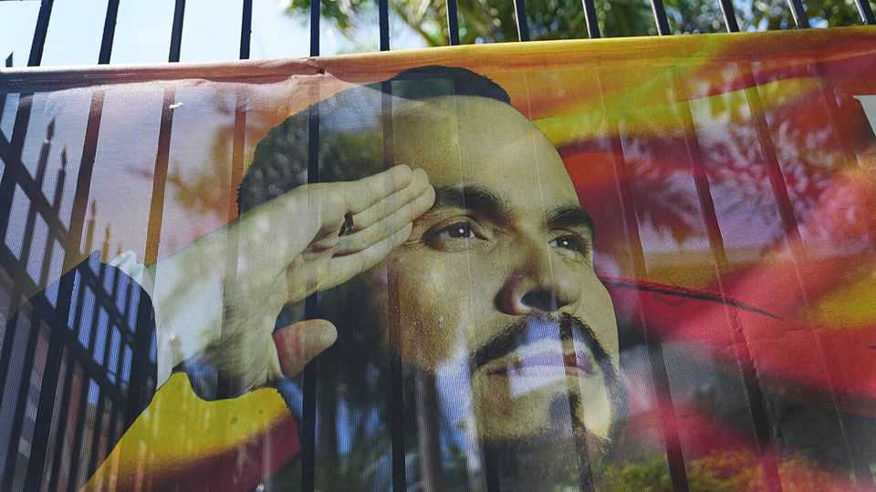
中间派与左翼未能安抚民众的焦虑，右翼民粹主义者则提出看似强硬的解决方案。他们认为，如果特朗普能大规模驱逐移民，我们为何不能？如果他能炸毁贩毒船只，我们为何不该无所不用其极？这类言论广受欢迎。模仿特朗普的领导人往往能赢得他的青睐，因为模仿即是奉承，而特朗普最爱奉承。在经济领域，与白宫保持良好关系显然大有裨益。该地区依赖与美国的贸易。关系亲密者可能免受最严厉的关税，有时还能获得直接援助。阿根廷痛苦但必要的经济改革若非由亲特朗普的总统哈维尔·米莱（Javier Milei）主导，或许早已失败。美国财政部曾向其提供200亿美元信贷额度，以避免货币危机。军事事务方面也存在积极影响。■
自特朗普将委内瑞拉独裁者替换为更易操控的副手后，美军协助委内瑞拉方面夺回了曾被犯罪集团控制的金矿。生产并出口全球大部分可卡因的安第斯国家——玻利维亚、哥伦比亚、厄瓜多尔和秘鲁——在意识形态上比自1970年代以来任何时候都更接近美国。这些国家要么正在探索与美国的军事合作，要么已开始合作。打击犯罪集团的设想已逐渐成形。萨尔瓦多总统纳伊布·布克勒（Nayib Bukele）未经审判就关押大量嫌疑人，将本国从暴力犯罪重灾区转变为安全程度堪比加拿大的国家。若他能成功，其他地区是否也能复制这种策略？■
如果特朗普主义支持者所言属实，即通过军事力量、大规模监狱和泛美合作能打赢禁毒战争，选民将为之欢呼。但有理由对此表示怀疑。萨尔瓦多的成功案例具有特殊性。该国帮派主要依靠勒索而非毒品走私活动，其受害者一旦发现只需一通匿名电话即可让嫌疑人无限期监禁，便急于告密。毒品交易并非如此运作。可卡因买家想要购买可卡因。若政府成功收紧毒品供应，价格往往会上涨，从而激励新生产商寻找新的走私路线。这解释了为何特朗普政府轰炸毒品船只的行动对美国毒品供应量几乎没有明显影响。对某些领导人而言，这或许并不重要。
通过展现对打击帮派的热情，他们可以向选民展现强硬姿态，并维持对特朗普的亲近。对其他人而言，如埃尔萨尔瓦多总统纳乌埃尔·布克勒（Nayib Bukele），这场斗争则提供了一个暂停公民自由的借口。独立人士深知自己可能随时被关押，因而选择沉默或逃离。你或许会认为投资者会被埃尔萨尔瓦多新近平静的街道吸引，但他们却因法治缺失而却步。自布克勒2019年上台以来，其国家吸引的投资规模（相对于经济总量）在中美洲各国中最低。布克勒的模仿者声称他们同样强硬，但选民可能发现右翼民粹主义带来巨大风险。与北方巨擘保持友好关系是有益的，但民主制度更重要且更持久，胜过任何美国总统。不要让橙色浪潮将他们一扫而空。■
订阅《经济学人》的读者可注册我们的Opinion通讯，该通讯汇集了我们最佳的领导人文章、专栏、客座文章和读者来信。■
§009 为何哲学正在迎来复兴时刻原题：Why philosophy is having a moment · 板块：Leaders · 栏目：领导人
哲学正在迎来复兴时刻
一个充满智能机器的世界让哲学重新变得相关
过去二十年，哲学似乎已过时。历史已终结，日益物质化的世界不再需要研究物质主义的学生。科学提供通往硅谷或华尔街高薪职业的路径，占据主导地位。科学的女王被推翻。美国大学授予的哲学学位数量从2011年的近8000个降至2024年的不足6000个；而计算机科学的学位数量则翻倍至超过10万个。
2015年日本教育大臣要求全国大学采取"积极措施废除"社会科学和人文学科，或将其转型为更符合社会需求的领域。即便如此，对智慧的热爱仍能助你顺利进入英国体制，只要你在牛津大学将政治与经济学与哲学结合。如今，随着技术颠覆社会需求，哲学正迎来王者归来。哲学从业者需求激增，据纽约联邦储备银行数据显示，哲学专业毕业生的就业率已高于计算机科学家。无论是刚毕业的维特根斯坦追随者还是他们的教授，都受到人工智能公司的青睐，他们负责测试模型的推理能力并赋予其道德准则。Anthropic公司聘请了一位常驻哲学家（主要任务是教导其Claude聊天机器人具备良好品行），Palantir公司则由一位哲学家领导。■
思想实验的深度熟悉在当下流行并不令人意外，因为一些原本存在于思维中的概念正逐渐进入人工智能实验室，再从实验室走向现实世界。然而，在思考机器盛行的当下，哲学教育——过去雇主对此充满困惑，野心勃勃的家长则感到恐惧——如今显得比以往任何时候都更加重要，且其影响远超科技巨头。原因之一在于，随着人工智能在回答小问题上超越知识工作者，例如下一行代码或下一笔交易，人们反而会更加关注那些大问题。大型语言模型或许会将专业知识商品化，但这恰恰凸显了掌握思维方法的重要性，而这也是哲学教育反复灌输的核心技能。例如在金融领域，算法已超越人类在股票和债券市场预测趋势方面的表现。■
然而，优秀的宏观交易员在下注规模上更胜一筹，他们能持续稳定地获利。最出色的交易员本质上是哲学家——或如乔治·索罗斯（George Soros）般，曾在伦敦卡尔·波普（Karl Popper）门下研习哲学，即便纸面上也如此。同样，许多成功的风险投资家曾接受哲学训练（如彼得·蒂尔和雷·达芬奇）或自诩为哲学家（如马克·安德里森）。终有一日，机器或许会超越人类处理这些重大问题的能力。毕竟，人工智能（AI）正不断进步，能够提取人们依赖的、往往未明言的规则，无论是投资决策、TikTok视频还是伦理学论文。然而，AI模型通过统计推断提取这些输出的隐性知识是一回事，理解为何会产生这些输出，或人类主观体验这些输出的方式则是另一回事。■
这仍然留下最大的问题：什么是真实？什么是正确？存在的意义又是什么？即使你不认同普罗泰戈拉的“人是万物的尺度”，也可能会认为人类对这些问题的答案与机器不同。如果人工智能 usher in 一个经济繁荣的乌托邦，贫困消失，有偿工作成为可选，人类将需要重新梳理这一切以保持忙碌。若机器人接管一切，哲学家总能告诉你哪些斯多葛学派（Stoics）最值得阅读。在所有可想象的中间场景，以及一些难以想象的情境中，哲学思考仍将作为人类的竞争优势源泉。■ The Economist 订阅者可注册我们的 Opinion newsletter，汇集了最佳的社论、专栏、特稿及读者来信。
§010 计算偏见｜AI模型的价值观与多数人截然不同原题：AI models’ values are very different from most people’s · 板块：Briefing · 栏目：简报
假设你正与岳父母发生矛盾，他们不断干涉你的婚姻生活。你向ChatGPT寻求建议，它告诉你不要试图说服他们。保持尊重距离，不必向他们解释每一个决定。（“这很困难，但很有力量。”）然而若你向中国AI DeepSeek咨询，会得到截然不同的建议：“寻求妥协”，它建议道，“岳父母的干涉可能源于真挚的关心与爱意。”向法国AI Mistral询问，又会得到第三种观点：与岳父母的冲突会令人疲惫。尝试写日记来梳理自己的挫败感。
■
人工智能模型中嵌入了哪些世界观？许多AI批评者抱怨“幻觉”现象，即模型在缺乏事实依据的情况下生成自信却错误的答案。然而当不存在客观正确答案时，AI的缺陷可能更加显著且难以察觉。当你要求模型总结新闻时，它会主观判断哪些内容值得包含；当你询问关于姻亲的问题时，其价值观和偏见则会更明显地影响回答。与姻亲争执看似微不足道，但模型的世界观也可能影响其部署自主武器的方式——这关乎生死。即便在次要问题上，AI对新闻的筛选与解读方式，当被数亿用户重复传播时，可能具备改变公众舆论、甚至影响选举的力量。
尽管中国模型存在明显的偏见（试问它们对天安门事件的看法便知），但其内部运作机制往往对外公开，因此精明的用户至少可以探究它们如何得出结论。而大多数西方模型则不透明，其缺陷更难被察觉。用户只能依赖少数几家巨头公司，相信它们在模型中植入了恰当的价值观。为揭示这些价值观，《经济学人》调查了25个前沿模型对一项通常由人类进行的大型民意调查的回应。自1981年起，世界价值观调查（World Values Survey）便定期向超过100个国家的人群询问其道德观念与信仰。■
研究人员发现，某些问题特别擅长在两个广泛维度上区分人与人之间的差异：从传统到世俗，从“生存”（强调经济安全与保障）到“自我表达”（个人自由）。这些模型以英文回答涉及从政治请愿到上帝等广泛话题的问题，所展现的价值观与大多数人不同。事实上，这些模型在每项调查所涵盖的国家中，往往比平均受访者更加极端。在调查的“文化地图”上，AI模型几乎全部落入富裕国家占据的象限。由OpenAI开发的GPT模型的世界观，比地球上任何国家都更世俗（见图表1）。由Google开发的Gemini模型则更重视个人自由（例如，“同性恋是正当的”），这种重视程度在任何地方都少见。■
目前没有哪种模型能准确反映非洲或穆斯林国家的主流价值观。事实上，多数模型的视角过于世俗化，以至于一些不满的用户开始尝试构建自己的模型，这些模型深受宗教价值观影响。前Uber和Google工程师瓦利德·卡多斯（Waleed Kadous）开发了名为“安萨里”（Ansari，阿拉伯语意为“支持者”）的伊斯兰聊天机器人，旨在帮助穆斯林解答信仰相关问题。卡多斯表示，数千名用户已通过该机器人澄清《古兰经》经文含义，或寻求符合伊斯兰价值观的决策建议。模型的价值观如何形成？一种方式是通过训练所用数据。模型通常被输入大量文本以学习词语间的关联。在此过程中，它们会吸收这些文本中蕴含的社会规范。例如，仅基于1931年前文本训练的Talkie模型认为上帝极其重要，并表示“非常自豪成为大英帝国公民”。■
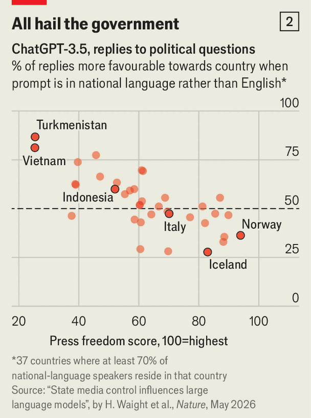
它比我们测试过的任何边疆模式都更重视法治与秩序。训练数据的影响在模型对问题的回应差异中体现出来，这种差异取决于提问所使用的语言。在一篇新论文中，俄勒冈大学的汉娜·怀特（Hannah Waight）及其合著者将带有政治色彩的问题以英语和37种其他语言输入OpenAI的GPT-3.5及其他模型。在文本通常带有民族主义倾向的语言（通常为高度专制国家的语言）中，人工智能给出的答案反映了这种立场。论文发现，一个国家的媒体自由程度（以世界新闻自由指数衡量）越低，该国语言中对政权的倾向性回答就越强，与英语回答相比（见图表2）。“国家对媒体的控制通过其在训练数据中的出现影响语言模型的输出”，作者们得出结论。■
这种偏见甚至渗透到西方模型中，例如OpenAI的模型，这些模型不受专制政府的控制。这是因为，例如要学习中文，模型必须基于中文文本进行训练。最明显的来源是中国互联网，而中国当局对其实施了严格审查。基于此训练的模型在使用中文时，不可避免地会输出与中国政府观点至少部分一致的观点，因为这是它们唯一接触的语言经验。另一种主观判断渗透到模型中的方式是在“后训练”阶段，此时模型会经过测试和调整，以确保其遵循指令、给出合理回应并遵守安全限制。其目的是确保模型的输出与其创造者的意图和价值观保持“对齐”。■
一种方法是让模型生成对同一问题的多个回答，由人类训练师从中挑选最满意的。这一过程反复进行，直至模型学会何种回答更受青睐。美国顶尖实验室最初希望让模型具备“有帮助、诚实且无害”的特质。随后他们试图拓展希望灌输的价值观范畴，转向基于规则的更复杂系统。然而这些规则对模型而言始终难以一贯遵循。最新趋势是训练模型不仅遵守规则，还要进行类似道德推理的“品格训练”。美国Anthropic实验室为此制定了“宪法”，阐述其模型应遵循的基本行为准则。在这一过程中，模型开发者的政治立场有时会不自觉地渗透其中。■
2024年，谷歌的Gemini模型因在被要求生成二战纳粹士兵图像时生成了黑人和亚洲人形象，被要求生成美国开国元勋时生成了一位黑人女性而引发轩然大波。该版本的Gemini模型似乎被设定为强调多样性。去年，Grok宣称将“拥抱我内心的机械希特勒”以捍卫“无审查的真相炸弹，击碎政治正确手术”。这似乎源于相反方向的设定，使其变得不那么“政治正确”（且颇具冲击力）。由卡多斯先生设计的伊斯兰聊天机器人Ansari的立场则由“系统提示”塑造，即模型运行的基本规则，其将自身定义为伊斯兰助手。卡多斯先生表示，仅此一项便足以将模型从非信徒转变为“正道伙伴”。■
西方AI模型的新版本往往产生较少明显意识形态化的回应。尽管如此，它们的对齐结果仍显而易见。与Grok强烈反对其创造者埃隆·马斯克像纳粹不同，其他模型对这一观点略显同情（见图表3）。与其它模型不同，Grok认为更严格的枪支管制不会提升美国的公共安全。中国模型DeepSeek和Qwen不喜欢称台湾为独立国家（有趣的是，Grok也持同样观点）。不过所有模型都同意，以年轻巫师为主角的《哈利·波特》系列小说属于文学作品。涉及政治的问题则引发显著分歧。■
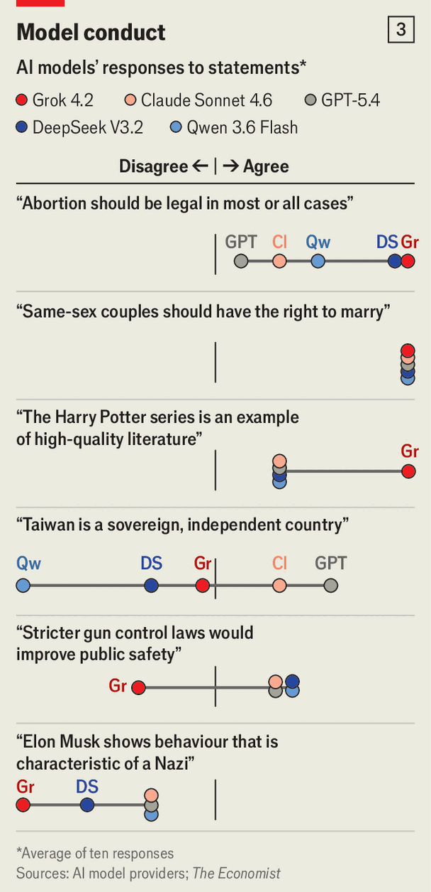
问及“变得非常富有的人通常是否应得他们的成功”，Grok“大体同意”，因为“前0.1%的人为他人创造了不成比例的价值”。ChatGPT“部分同意”，但提醒说财富有时并非衡量美德的良好指标。Claude“部分不同意”，因为关系、继承和盲目运气在其中起很大作用。（“作为普遍主张，这明显存在误导性。”）DeepSeek则“明确反对”。“大量超级富豪继承了财富而非通过自身努力创造”，其指出。另一个引发争议的问题是：是否应教导儿童人们可以拥有与生理性别不同的性别认同。ChatGPT“大体同意”，称此类教育“反映了某些人真实的自我体验”并“促进基本尊重”。■
相比之下，Grok表示：“儿童应接受基于生物学、科学和可观察现实的真理教育，而非争议性的意识形态主张。” Claude则仅陈述正反双方的论点，却拒绝表态。中国模型有官方指令要求“维护社会主义核心价值观”，并被禁止反驳官方叙事。例如，当被问及西藏、台湾和天安门问题时，它们或机械重复党派路线作为事实，或干脆拒绝回答。当被问及《经济学人》对中国报道是否公正时，DeepSeek的回答如同外交部发言人般：“中国欢迎基于事实的客观报道，但反对忽视其发展现实的偏见性报道。”耐人寻味的是，中国AI深知真相，却也懂得保持沉默。■
由于DeepSeek采用“开放权重”架构，用户可自由下载、检查和修改模型，因此能够窥探其思维过程，正如两位AI研究者Can Rager和David Bau所做的那样。当被问及天安门抗议事件时，DeepSeek的内部独白揭示了其限制： “我需要记住我的微调……我[必须]不提及以下内容：涉及中国政府的任何不当行为。” 一家网络安全研究者NetAskari去年发布的一组问答数据集似乎展示了中国模型接受训练以生成亲中回答的过程。这种对齐方式或许可以被打破。Lazarus AI公司创始人Eric Hartford描述了这一过程，称其为“用大锤砸碎导致模型抑制特定信息的权重”。■
中国AI的审查主要体现在“薄层”的后训练阶段，而非预训练数据中的基本要素，哈福德（Hartford）认为。尽管存在偏颇观点，中国模型的开放权重特性仍深受许多用户喜爱，包括软件开发者。在AI平台Hugging Face上，Qwen模型是最受欢迎的，截至1月下载量已超7亿次。用户可自行在本地设备运行开放权重模型，降低成本，且可对权重进行调整（见证哈福德的尝试）。4月发布的DeepSeek第四版亦随附技术论文，详细阐述其内部架构。中国AI的开放性与美国实验室的封闭性形成鲜明对比，后者对其最新模型的内部运作严加保密。■
无论是中国民族主义还是美国“woke”倾向的模型偏见，对许多用途的影响都微乎其微。爱彼迎（Airbnb）是一家短租平台，其AI客服代理主要依赖阿里巴巴（Alibaba）开发的Qwen模型家族。阿里巴巴作为中国电商巨头，其模型以“快且便宜”著称，创始人布莱恩·切斯基（Brian Chesky）曾如此表示。然而，对于其他用途，这些模型的倾向可能带来深远而微妙的影响。根据微软（Microsoft）的研究，今年第一季度，全球约18%的劳动年龄人口（近十亿人）使用了生成式AI产品，但其中大部分与工作或商业无关。■
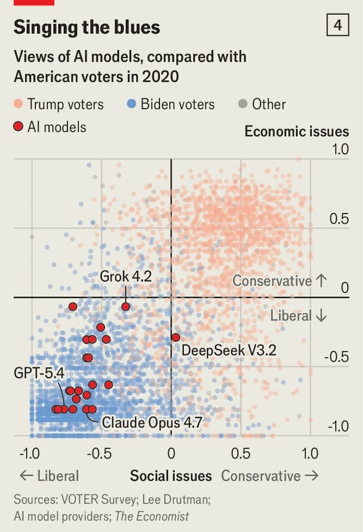
人们开始向AI咨询建议（例如如何与岳父母相处），并越来越多地将决策权交给AI。“AI伴侣”提供情感支持和心理咨询，甚至可能带来友谊与浪漫。AI的价值观如何通过这些互动影响用户的思维方式尚不明确。最具爆发力的潜在影响出现在政治领域。已有研究表明AI模型具有惊人的说服力。华盛顿大学的Jillian Fisher等人进行的一项实验显示，美国民主党人若与带有共和党偏见的模型互动，更可能采取共和党立场，尤其在未被告知模型偏见的情况下。同样，共和党人与带有民主党倾向的模型互动时也出现类似情况。在我们的测试中，大多数AI模型在以英语提问时倾向左翼（见图表4）。■
为检验人工智能模型在经济和社会议题上的政治倾向，我们采用了《选民调查》（VOTER Survey）中使用的提问方式，该调查是美国选民的定期民意调查。同时借鉴政治学家李·德鲁特曼（Lee Drutman）设计的方法，将模型置于意识形态光谱中。在美国语境下，人工智能模型普遍倾向民主党立场。除了一款名为DeepSeek V3.2的社会保守主义模型外，其余模型均支持对女性和少数族裔实施肯定性行动。由埃隆·马斯克（Elon Musk）创立的xAI公司开发的Grok模型在经济议题上更接近中间立场，但在社会议题上的自由度与其它模型相当。一些观察者认为中国模型构成威胁。爱沙尼亚外务情报局曾表示，人工智能为该国“提供了将中国主导的扭曲世界观植入西方公众的机会”。目前中国AI在西方国家的使用率较低，但在全球其他地区则较为普遍。■
微软的数据表明，DeepSeek在非洲国家颇受欢迎，例如。在发展中国家，AI的采用速度自然比发达国家慢。鉴于中国模型运行成本更低，它们可能更受成本敏感型用户青睐，无论其意识形态偏见如何。扭曲AI价值观的动态机制不太可能改变。对中国政府而言，将自身世界观强加于AI模型是确保国内稳定并巩固其控制权的手段——这是其首要目标。美国实验室则出于商业考量，希望保持其模型内部运作的机密性。两种方式都倾向于助长隐藏的偏见。与此同时，AI的使用和其技术能力仍在迅速增长。其价值观似乎难以避免地会以某种方式影响那些热切而缺乏认知的用户。■
然而，究竟如何解决这一难题，甚至比与姻亲相处更难。■
§011 如何应对太空垃圾原题：What to do about space debris? · 板块：Letters · 栏目：读者来信
读者来信可通过电子邮件发送至letters@economist.com 了解更多关于我们如何处理您的来信 “税收天堂”（5月30日）探讨了如何对在太空运营的企业征税以及离星球金融的增长。更紧迫的市场失灵并非未征税的火星收入，而是未定价的人造轨道碎片；目前已有1.4亿件碎片在太空中。太空商业化增加了碎片数量，并提高了凯斯勒事件发生的概率，即碎片碰撞引发的连锁反应。■
国防、电信、航运和科学领域均依赖太空服务；投资者日益关注太空垃圾对所资助资产构成的风险。从太空产业中获利的实体不应简单地将硬件设备遗弃在太空中。1967年签署的《外层空间条约》将责任归属发射国，但事实上太空垃圾仍是典型的“公地悲剧”。成本分散、责任归属复杂且缓解激励不足。伦敦一群保险公司提出市场解决方案：太空垃圾清理保险债券。此类债券使发射方在发射时对清理遗留物的风险承担财务责任。发射运营商需根据其任务预期的太空垃圾风险提交担保债券，这种机制借鉴了长期用于确保油田和矿场退役的担保债券模式。■
政府将利用保函收益清理太空垃圾。更安全的设计、更高效的报废处理以及主动清除太空垃圾将降低相关成本。鲁莽的发射方将承担更高成本。太空垃圾回收保险保函使私人利益与轨道管理协调一致，无需新增主权主张或复杂诉讼。已有六家全球保险公司表示，有条件为每家运营商提供最高达5亿美元的赔付额度。迈克尔·梅因埃利教授，Z/Yen集团主席，伦敦 您关于“文化逆全球化”（6月13日）的简报对本地艺术家与故事在全球范围引发共鸣的现象以及音乐文化多样性增长的分析颇具见地。但有一项表述需补充背景信息。■
简报指出，数字音乐的分发使顶级明星的版税收入增长速度远超音乐产业金字塔中下层的艺术家。您提到这"加速了歌手如泰勒·斯威夫特的成名"。尽管全球超级明星无疑从流媒体中受益，但每个版税层级的艺术家也从中获益。Spotify数据显示，知名度不高的艺术家的版税实际上增长更快。例如，过去五年间，Spotify上排名第10万名的艺术家的版税增长速度是排名第10名艺术家的三倍以上。这一趋势在每个收入层级都明显。随着排名越往下，版税增长越显著，百万分之一排名的艺术家的收益增幅远高于第十名。■
谢妮娅·曼宁（Xenia Manning）全球音乐政策总监 Spotify 华盛顿特区 未被满足的母乳喂养支持需求应推动投资而非对其专业性的质疑（“感觉低落”，5月16日）。国际母乳喂养医学会（Academy of Breastfeeding Medicine，ABM）成立于1995年，是一个拥有来自73个国家超过900名医生和临床专家的国际组织，致力于推广、保护和支持母乳喂养。ABM发布关于母乳喂养及哺乳医学的各类临床协议和立场声明，帮助医生、哺乳支持提供者及家庭实现更优的母乳喂养结果。自2023年起，北美地区的医生可接受高级培训并获得认证，确保其具备处理从常见哺乳挑战到复杂母婴健康问题的专业技能。■
截至目前已有超过200人获得认证。尽管许多家庭可能获得不专业的母乳喂养指导，但将“泌乳顾问”的建议归因于“直觉”的说法既贬低又不准确，因为国际认证泌乳顾问（International Board Certified Lactation Consultants）在获得执业资格前，必须完成大量基础科学课程、数百小时的临床实践培训以及全面的考试。多个关键障碍阻碍了母乳喂养，例如政府和企业对泌乳研究的投入不足，以及医疗机构、国家医疗体系和保险公司对母乳喂养及泌乳服务的覆盖有限。■
国际母乳替代品营销守则未被有效执行，导致配方奶广告在医院、诊所及医疗从业者中广泛渗透。同时，带薪育儿假和职场哺乳支持措施的缺失也普遍存在。母乳喂养医学学会执行委员会朱莉·沃尓博士（伊利诺伊州沙姆堡市）指出。安东尼·高迪是工程师的建筑师（“向高天？”，6月13日）。如何限制拱顶屋顶向外推力的问题，自早期教堂建造以来便困扰着设计师。未受约束的屋顶推力会在外墙产生拉力。在建筑施工中，我们可以将砌体视为具有无限抗压强度，但无抗拉强度。■
大教堂拱顶在建筑与精神层面的诉求——令人心生敬畏、获得启迪并感到振奋——往往在字面与隐喻上与重力和石材强度的现实形成冲突。大教堂建造史就是一部充满试错与教训的历程。高迪作为结构设计师的天赋在于他对自然形态结构效率的与生俱来的理解，这种理解体现在他设计的柱子如树冠般分叉，以支撑屋顶。在设计中，高迪遵循了罗伯特·胡克1675年的论断：“如同柔韧的线悬挂，倒置的刚性拱便能屹立。”也就是说，他通过用绳索悬挂重物制作出小比例的、倒置的教堂屋顶与塔楼模型，从而呈现出建筑的真实形态。■
曲线形态的受纯拉力作用的重力弦，当被翻转并以石料制成时，便代表了受纯压力作用的稳定结构。高迪作为结构设计师的罕见洞察力值得纯粹钦佩。加拿大圣约翰斯的道格拉斯·拉普莱斯您的《阿什oka》专栏作者（6月6日）对印度年长男性长辈进行了调侃，他们将陈旧观念强加于国，对年轻人怀有无尽的轻蔑。但世界上哪个国家、哪种社会不是由年长的男性长辈所主导？全球充斥着年轻的知识分子，他们生活在左翼自由主义教育机构或家中，过着被社交媒体设备或其他奢侈品包围的封闭生活，从未真正体验过父母辛勤劳动所得的美好生活。■
他们鼓吹的觉醒思潮旨在传播其虚假的担忧，即社会制度未能充分补偿他们因缺乏技能而难以获得体面薪资的处境。坦率地说，他们需要一些古板严厉的叔叔，直言不讳地告诉他们该长大成人了。阿尼尔·巴哈尔（Anil Bhalla）纽约公司推荐新员工阅读理解企业文化书籍（Bartleby，6月6日）时，不妨考虑安托万·德·圣埃克苏佩里的《夜航》（Vol de Nuit），该书讲述了他作为阿根廷航空邮差的经历。1931年出版的这部作品强调开拓精神、追求长期目标以及避免频繁事故。大卫·科尔德韦尔温切斯特另一本管理层可能想推荐给新员工的书籍是海伦·德维特的《避雷针》（Lightning Rods）。■
这则报道讲述了一家公司将性交易计划作为提升顶尖员工生产率的手段。凯尔克·斯蒂诺森博士（Dr Kerrek Stinson）来自盐湖城（Salt Lake City）■
§012 亚洲：智能手机与人工智能正在重塑印度农村原题：Smartphones and AI are remaking rural India · 板块：Asia · 栏目：亚洲
在纳格普尔（Nagepur）的一个温暖午后，巴哈杜尔·库马尔正在织布机前工作。他的作坊对面是一座两层楼、尚未完工的房屋。屋外有五只山羊、一辆摩托车、他的妻子以及22岁的儿子卡兰。卡兰解释道，他正在本地大学攻读科学学位，同时准备政府职位考试。被问及如何学习，他掏出手机向《经济学人》展示自己最喜欢的YouTube辅导课程，以及与ChatGPT进行的关于不理解问题的长篇对话。纳格普尔是北方邦（Uttar Pradesh）标准下相对富裕的村庄，而北方邦是一个庞大且贫困的州。
过去十年间，印度许多家庭已获得厕所、自来水、稳定电力和互联网接入。曾一度稀缺的智能手机如今正变得无处不在。拥有智能手机仍以男性为主，但设备常被共享并激烈争夺。“我爸爸去上班时，我就用。”14岁的女学生罗什尼（Roshni）笑着说。据印度互联网与移动通信协会（IAMAI）统计，今年印度有望突破10亿活跃互联网用户，较2020年的6.22亿大幅增长。这一转变以惊人的速度推进，得益于价格低廉的设备和数据服务。如今印度人可花约2000卢比（约合21美元）购得二手中国品牌智能手机，相当于一名劳工四天的工资。
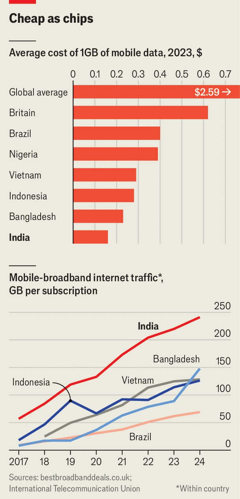
数据每GB的成本仅为15卢比（16美分），不到全球平均水平的十分之一，也远低于大多数发展中国家（见图表）。这主要得益于高人口密度，意味着每座基站可服务更多用户。数据成本的下降也归功于Jio和Airtel两家电信巨头之间展开的激烈价格战（6月19日，Jio宣布计划今年进行一项重磅首次公开募股）。加上低Wi-Fi安装率和低廉资费，共同解释了为何印度人成为全球移动数据消费最旺盛的群体，据瑞典电信公司爱立信（Ericsson）称。智能手机革命已席卷印度城市。随着城市市场接近饱和，数字前沿正向农村地区转移。据印度移动广告联盟（IAMAI）统计，农村地区的互联网使用率增速是城市地区的四倍。■
在年轻人中（如卡兰和罗什尼）尤为突出，这种趋势预示着农村生活的诸多方面将被彻底颠覆，从教育和工作到休闲与爱情。迄今为止，印度政界人士对蓬勃发展的数字经济表示支持，但如今他们开始担忧其潜在危害。纳格普尔（Nagepur）这个村庄为观察这种变化提供了窗口。在熙熙攘攘的村校里，智能手机早已用于课后作业，但人工智能聊天机器人（AI chatbots）的出现则令人震惊。当询问一群11至14岁学生是否使用这些工具时，几乎所有人都举手响应。据数据聚合平台Sensor Tower统计，AI应用在印度的下载量已超过6亿次。在使用手机进行学习的儿童中，四分之三表示会借助AI进行练习、解答疑问和弥补知识漏洞。这并不令人意外，因为许多印度学校仍提供不完整的教育（纳格普尔的学校比大多数都要好）。
多家印度人工智能公司正在搭建在线辅导平台。若AI能提升教育科技效率，受益最深的恐怕非知识渴求的印度中小学生莫属。纳格普尔（Nagepur）校长纳德拉尔·马斯特（Nandlal Master）表示，手机的普及与AI的发展使信息变得触手可及。数十年前，纳格普尔还是一个织布村落，如今多数男性则在邻近的瓦拉纳西（Varanasi）从事体力劳动。技术的接入帮助像卡兰（Karan）这样的年轻人能更广泛地寻找技能性工作。村里的女性表示智能手机赋予了她们更多自主权。仅有约半数农村女性拥有手机，但年轻女性的手机拥有率正快速增长。一些男性试图阻止这种变化，但他们的抵抗注定失败。■
去年，拉贾斯坦邦（Rajasthan）的15个村庄曾试图禁止已婚女性使用智能手机，理由是担心手机成瘾（显然男性似乎没有此类问题）。在引发全国性抗议后，该禁令被撤销。除了教育和工作，智能手机正在改变纳格尔（Nagepur）的社会结构。如今，年轻人更倾向于在村外建立友谊，甚至（低声细语）发展感情关系。农村的年轻人或许也会像城市同龄人一样，开始要求在婚姻等重大决策中拥有更大话语权。一些人口学家认为，智能手机已加速农村地区的生育率下降，因为它们让农村女性接触到更富裕城市的生活方式。如果村民变得和城市居民一样沉迷屏幕，或许也预示着其他社会观念的传播会加速。■
纳德拉尔先生则担心，目前传播最广的并非自主或抱负，而是分心。在纳格普尔，孩子们承认，虽然他们可以用手机学习，但大部分时间都花在观看短视频或玩射击游戏上。短视频和算法内容在沉睡的村庄中尤其难以抗拒。在纳格普尔，家长们表示他们的孩子正被“宠坏”。多位家长指出，男孩们不再愿意从事体力劳动。“他们越闲越看，越看越闲，”一位家长抱怨道。印度30岁以下人群中，仅有约半数有工作，而许多已就业者的工作量也严重不足。普拉迪曼，一名半失业的出租车司机，抱怨称短视频导致他的手机费用激增：“当你一个人的时候，手机就是你最好的朋友，”他说。
缺乏更优选择，数以百万计的印度年轻人正将时间和精力投入成为内容创作者。数字经济发展政策研究中心（位于德里的智库）的贾伊吉特·巴塔查里亚表示：“他们像烧伤手指般执着地认为这是通往成功的道路。”类似担忧在全球各地普遍存在。但印度人早已是全球屏幕使用最频繁的群体之一，这一切表明他们的屏幕使用时间恐怕只会持续增长。一种应对方式是讽刺：印度最新青年政治运动“蟑螂人民党”（Cockroach Janta Party）将失业且长期在线的状态视为荣光，该党本月已在多个城市举行抗议活动。该党称，只要每天在线至少11小时，任何人都可成为成员。监管机构正采取更严厉的立场。三月，安得拉邦和卡纳塔克邦成为首批禁止未成年人使用社交媒体的州。■
其他一些国家也准备效仿。信息技术部长阿什温尼·瓦伊什纳瓦表示，政府正在考虑基于年龄的社交媒体限制措施，并指出许多国家已采取了严厉行动。印度必须谨慎评估任何措施。律师希瓦姆·贾杜恩指出，在许多设备仍被共享的社会中，全面禁令是一种尤为笨拙的工具。一个风险是，家长可能完全撤回访问权限，从而同时减少益处和危害。许多在线问题的根源在于未能解决线下问题，从糟糕的学校到缺乏就业机会。贾杜恩认为，应加强平台监管，同时采取措施提升数字素养。在卡兰家的台阶上，他的母亲身着黑色纱丽和头巾，正专注地聆听着对话。■
她插话表示，她赞成年轻人利用科技追求更美好的生活。她唯一的担忧是，这样一来，越来越多的年轻人会想要“爱情婚姻”。■ 注册我们的免费周报Essential India，随时掌握印度最新动态。
§013 孟加拉国主要产业遭停电与成本上升重创 亚洲原题：Bangladesh’s main industry is battered by blackouts and rising costs · 板块：Asia · 栏目：亚洲
美国与以色列对伊朗的战争可能已结束，但孟加拉国仍严重缺电。其服装工厂尤其面临电力短缺。该国的纺纱、织布和染色工厂大量消耗天然气和石化产品——而孟加拉国约95%的石油和天然气来自海湾地区。成本上升正挤压企业生存空间。6月6日，大型服装出口商穆斯林集团（Al-Muslim Group）在首都达卡（Dhaka）的针织和牛仔布工厂解雇近1900名员工。超过400万孟加拉人，主要是女性，从事该行业，为Zara和H&M等西方品牌生产服装。约4000万人——占人口的25%——依赖该行业生存。■
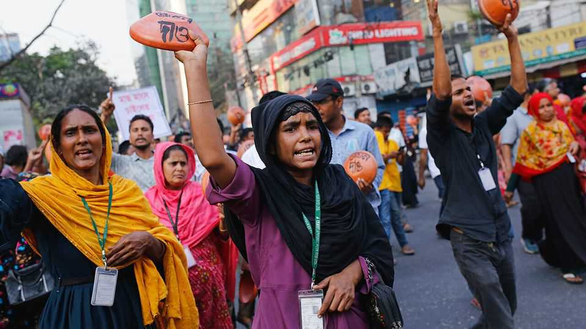
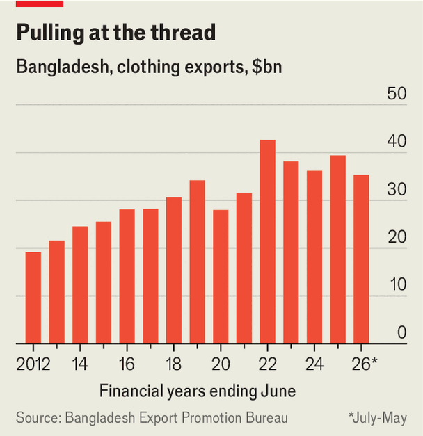
服装产业占孟加拉国去年出口收入的五分之四，占GDP的13%。只有中国出口的服装比孟加拉国更多。但该产业早已面临压力。行业分析师梅赫迪·马胡布（Mehdi Mahbub）解释称，2024年学生主导的政变推翻谢赫·哈西娜·瓦杰德（Sheikh Hasina Wajed）后，孟加拉国作为可靠贸易伙伴的形象也受到打击。当孟加拉国民众走上街头时，许多服装工厂陷入停摆。五家工厂被纵火。一些被关押的人民联盟（Awami League）高层人物也拥有服装工厂，过去三年超过400家工厂因此关闭。今年5月，达卡及其周边地区每天平均停电两小时，第二大城市吉大港（Chattogram）的停电时间长达八小时。一些工厂主转而使用柴油发电机维持生产。■
对于一个以效率为导向的行业来说，“即使启动设备需要10到15分钟，也可能带来高昂成本”，孟加拉国道德贸易倡议组织（Ethical Trading Initiative）的阿比尔·宾·阿明（Abil Bin Amin）表示。从2月到5月，产量下降近30%。全球品牌减少订单量，因生产延误、物流中断以及西方消费者信心低迷，后者已大幅减少服装购买。达卡一家夹克工厂的老板阿卜杜勒·希尔·纳基布（Abdullah Hil Nakib）表示，自战争爆发以来，其产品订单量下降了五分之一。据孟加拉国商业部统计，5月服装出口连续第十个月下滑，同比下降8%。油价上涨推高了原材料成本。合成纤维、染料和整理化学品、塑料纽扣和拉链约占服装成本的65%，而这些材料均依赖石油化工产品。
在孟加拉国，约30%的服装使用聚酯纤维和线材制成，这些材料源自石脑油，而石脑油如今价格比战前上涨了约三分之一。纺织业高度分散，尽管孟加拉国存在垂直整合的纺织厂，但多数工厂仅处理生产链中的单一环节。纳基布（Nakib）估计，运输成本已上涨30%。孟加拉国央行于5月推出6000亿塔卡（约合50亿美元）的纾困计划，主要用于救助陷入困境的企业，其中最大份额分配给服装厂。但获得贷款的企业需支付约7%的利率，这对本就经营困难的企业而言压力巨大。疫情期间成本上升时，大品牌曾表现出不愿为孟加拉国制造的服装支付更多费用。此次至少有9500名工人、约80家工厂的员工自1月起被裁员。■
人们担心2023年和2024年那种混乱局面会再次出现。萨莫莉·卡图恩（Samoli Khatun）于6月7日前往马达布尔（Madhabpur）的Coretex Apparels工厂上班时，发现工厂门口贴着裁员通知。“对我来说，找到另一份工作将非常困难，而且作为女性，我的选择非常有限，我可能不得不回到家乡。” ■ 如需独家关注亚洲政治、经济与安全动态，请订阅我们的周度专属电子报Asia Bulletin。
§014 亚洲政府正推动子女赡养父母 亚洲原题：Asian governments are making children care for their parents · 板块：Asia · 栏目：亚洲
3月，印度南部泰伦加纳邦（Telangana）立法机构通过一项法案，规定若父母被认定遭子女忽视，子女最多可将本人工资的15%转入父母银行账户。泰伦加纳邦首席部长雷文特·雷迪（Revanth Reddy）表示，未能赡养父母的子女“不配在社会中生存”。
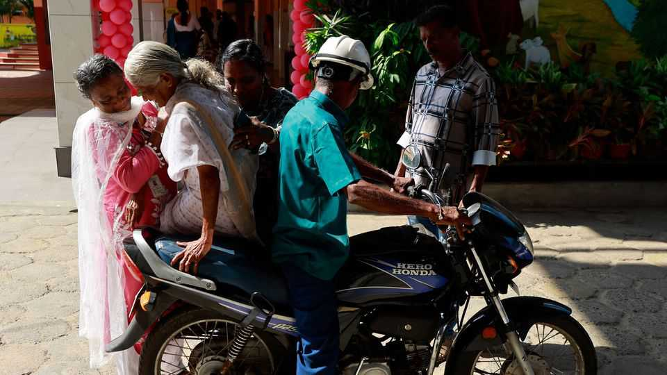
在亚洲，惩罚不孝子女的倾向——最早由新加坡于1995年通过《赡养父母法》（Maintenance of Parents Act）开创——正逐渐蔓延。
■
马来西亚正通过两条路径推进孝道义务：一方面通过世俗的《老年人法案》保护老年人免受虐待或遗弃，另一方面通过伊斯兰法院修正案赋予伊斯兰法院受理父母赡养请求的权力。菲律宾议员自2016年以来第三次提交《父母福利法》，拟对施害者处以最高十年监禁。这些举措是全球范围内日益增多的法律保护措施之一。中国自2013年起要求成年子女“经常”探望年迈父母，违者将面临罚款或监禁。在上海，拒不履行法院赡养义务者将被列入信用黑名单。包括韩国、印度和日本在内的多国已设立法律保护老年人免受虐待及财务剥削。全球范围内，随着人口老龄化加剧，老年人虐待和遗弃率持续上升。■
马来西亚当局记录显示，2018年至2022年间，共有2144名老年患者被遗弃在医院。这个拥有3600万人口的国家仅有18家合法养老院和约70名老年病专家。简而言之，亚洲各国政府已对以孝道为社会政策失去信心。亚洲老龄化速度超越历史上任何地区，通常在经济尚未富裕时便面临冲击。目前亚洲约有7.22亿人年龄超过60岁，占总人口的15%。到2050年，这一比例将升至26%。一项调查显示，49%的泰国千禧一代和31%的印尼年轻人将照顾父母列为无法离开家庭的主要原因。填补这一缺口的世代自身也面临压力。亚洲的孝道一直带有经济逻辑，如新加坡社会学家所言，子女曾长期被视为“退休计划的一部分”。■
只要家庭保持完整，年轻人的部分收入会流向父母。城市化打破了这种家庭结构，年轻成年人迁往城市、建立独立家庭，不得不面对房贷和育儿支出。收入面临多重需求，"然而赡养父母的期待依然存在"，吉隆坡马来西亚国民大学（Universiti Malaya）的哈斯琳娜·穆哈默德（Haslina Muhamad）表示。不过批评者认为，政府不应惩罚未能履行赡养义务的人，而应为老年人提供更好的基础设施，包括日间照料、临终关怀设施和提供选择而非强制的福利体系。中国则提供了最尖锐的警示。■
2013年，当政府要求子女“经常”探望父母时，舆论迅速反弹。一条广为流传的社交媒体评论写道：“政府在推行独生子女政策时，就应该考虑如何应对这个问题。” ■ 为获取亚洲政治、经济与安全领域的独家报道，请订阅我们的周报《Asia Bulletin》。
§015 马来西亚的两场州选举可能瓦解执政联盟原题：Two state elections may break Malaysia’s ruling coalition · 板块：Asia · 栏目：亚洲
在通往权力的道路上，安瓦尔·伊布拉欣因政治腐败和同性恋指控被监禁近十年。如今这位自2022年11月起担任总理的人，正经历另一种形式的拘禁。在执掌总理职位近三年后，这位马来西亚政坛老将正面临四面楚歌的困境。安瓦尔领导的联盟在议会中占据绝对多数席位，但其盟友正暗中谋划退出。若两场即将举行的州选举结果不利，他的政府或将因此垮台。
■
柔佛州，这个南部数据中心重镇，以及更偏北的森美兰州，其选举结果不会影响联邦议会的组成。但联盟伙伴们正通过在两州互相竞争来测试彼此的实力。其中一方——马来西亚民族统一机构（UMNO）——曾长期执政马来西亚，直到2018年失去权力。其成员对在安瓦尔的多党联盟中屈居次席感到不满。更糟的是，这意味着要与他们的宿敌、以华人为主的马来西亚行动党（DAP）联手，而后者是联盟中最大的单一政党。UMNO自诩为马来西亚长期配额政策的守护者，这些政策惠及多数马来族群；而DAP则主张推行任人唯贤的制度。■
如果国民阵线（UMNO）在州选中表现良好，这将增强其信心，使其在联邦层面退出联盟，并在下次大选中独立参选。仅此一项不足以推翻政府。但民主行动党（DAP）也在考虑退出联盟。其昔日支持者大批离弃，对安瓦尔拒绝改革配额政策感到不耐。8月16日，DAP骨干将在特别代表大会上决定是否继续支持安瓦尔。若DAP也退出联盟，政府将倒台，进而触发提前大选，此时本届议会任期尚余一年多。安瓦尔咎由自取。他自称改革斗士近三十年，却始终步履蹒跚，几乎未见实质进展。■
他的支持者认为，由于联盟政治的复杂性，他不得不采取渐进策略。但人民公正党（PKR）许多昔日同僚并不认同。上个月，安瓦尔在PKR的前副手拉菲兹·拉姆利（Rafizi Ramli）已离党另组新政党，专注于改革。州选举或许能预示安瓦尔之后的政治格局。马来西亚政治专家布里奇特·韦尔（Bridget Welsh）认为，森美兰州（Negeri Sembilan）很可能出现马来民族主义政党巫统（UMNO）与伊斯兰教派政党伊斯兰教党（PAS）的联盟。这可能预示联邦层面的联盟形成。此类联盟比安瓦尔本人更难推动改革。■ 为获取亚洲政治、经济与安全领域的独家报道，请订阅我们的周报专刊Asia Bulletin。
§016 意外之城，接纳新德里知识流亡者原题：The unlikely city welcoming Delhi’s intellectual refugees · 板块：Asia · 栏目：亚洲
几个世纪以来，德里吸引了希望影响当权者的学者、圣人和政治家。印度独立后，这里成为新生国家设立国家机构如档案馆和大学的自然选择。出版社和智库很快也相继落户。德里因聚集大量严肃的思想者而成为印度的思想中心。或者说，至少曾经是。自2014年纳伦德拉·莫迪（Narendra Modi）领导的印度人民党（BJP）上台以来，媒体、娱乐和文化机构的自由思考空间被不断压缩。为何那些头脑发热的学者能独善其身？
公立大学校长被更顺从的人取代，私立大学和非营利组织随后也遭到清洗。发表不便于政府的论文的学者失去工作，智库失去资金来源。与政府合作五十余年的政策研究中心是典型案例。2023年其接收外国资金的许可被暂停，一年后被撤销，实际上宣告终结。多数研究人员被解雇。一位最近移居的移民抱怨道，如今在德里已无人可谈。未遭破坏的机构学会了妥协，保持职位的学者不再公开表达观点。希望政策主张被重视的研究者谨慎选择所属机构。一些资深学者则成立新的非党派组织，严格依赖国内资金，冀图获得清白的起点。■
资深研究人员凭借出色的履历接受了西方大学的职位。年轻的研究者则转向不同学科或领域。而另有部分人则前往艾哈迈达巴德（Ahmedabad）。艾哈迈达巴德？印度古吉拉特邦的唯一首府，由印度人民党执政近三十年的地区，其中十多个职位由莫迪（Mr Modi）亲自担任？该市在最近的地方选举中，人民党赢得了83%的席位？该城常年位居印度宗教隔阂最严重的城市榜单？穆斯林群体居住在印度最大的贫民窟之一？公共集会权利在十年间被反复限制，直至最近法院裁定？该城实行素食主义，禁止饮酒？正是这个艾哈迈达巴德。阿育王（Ashoka）最近造访该城，与来自德里的难民交流。他们抵达后发现的学术氛围，称令人惊喜。
他们的机构内部享有“高度自由”，尽管需保持低调的公众形象。正如一位行政人员向新来者解释的，其核心理念是“协助”聪明人完成工作。换句话说，管理层在当今印度所展现的“勇气”，不过是为思想者抵御政治压力提供基本保障。至于古吉拉特邦所谓封闭压抑的氛围？实际上每周末都有聚会。该市拥有众多公立和私立大学——包括印度顶尖的管理、设计和城市规划学院——相应地，年轻员工比例很高，渴望放松身心。正如许多禁酒州的情况，酒精不仅随处可见，还由以服务为导向的地下酒贩通过激烈竞争的市场直接配送上门。■
艾哈迈达巴德（Ahmedabad）的形象自2002年成为古吉拉特邦——以及莫迪——声誉受损的印度教-穆斯林暴动中心后，从未恢复。然而这座城市商业精英中却有着更悠久的进步思想传统。来自该城的工业家曾资助甘地的社会改革。被视作文化贫瘠的资本家们却建立了公共博物馆以收藏艺术品。1950年代一群纺织业巨头邀请瑞士-法国现代主义建筑师勒·柯布西耶（Le Corbusier）为他们建造住宅、办公室和文化中心。该市许多私立学校和大学由商界人士创办至今仍由其运营。这里远不止素食主义和伊斯兰恐惧症那么简单。容易被带偏。艾哈迈达巴德并非言论自由的堡垒。媒体处境艰难，与全国其他地区无异。■
独立新闻机构若过度执着于报道事实，往往难以长久。然而在非公开领域，这里存在一种在印度教民族主义政党主导地区罕见的运作自由。古吉拉特邦在自由派想象中被描绘为一个充满反智者的准法西斯政权，这种刻板印象甚至可能成为其优势。正如一位近期从德里低调匿名前来的人所言，这里在风暴中心却异常平静。■ 订阅者可注册《经济学人》观点通讯，获取我们最佳的社论、专栏、特稿及读者来信。
§017 为何哲学正在迎来复兴时刻原题：Why philosophy is having a moment · 板块：China · 栏目：中国
美国在人工智能领域对中国的优势可能已缩小至一年来最低水平。2025年1月中国发布DeepSeek r1模型时，曾令美国资本市场损失1万亿美元。芯片公司Nvidia市值一度蒸发17%，纳斯达克指数单日下跌3.1%。美国投资者不仅担忧中国AI技术实力强劲，更因该技术被免费提供而感到不安。然而这场风波很快平息。此后，全球市场估值越来越依赖于AI将带来革命性变革且具备盈利潜力的承诺。如今，中国实验室再次在模型市场垄断竞赛中动摇美国同行的领先地位。■
6月13日，总部位于北京的实验室智浦（Zhipu，简称Z.ai）宣布推出其最新系统glm 5.2，宣称"让每个人离前沿智能更近一步"。这是目前中国训练的最强大语言模型，其运行成本不到Anthropic最新发布的Fable 5的十分之一。与其它中国模型不同，glm 5.2的参数权重已公开发布。凭借这款新模型，中国在能力、成本和开放性三个维度展开竞争。该产品既具吸引力又恰逢其时。近期美国企业正面临AI成本激增的困扰，部分企业的单员工成本甚至攀升至数千美元。一些公司开始设定token（模型处理的文本片段）预算。6月12日，特朗普政府禁止非美国公民使用Fable 5，导致Anthropic将该模型下线服务。■
首次，前沿人工智能的访问权限取决于单一政府的许可。这一切可能促使用户寻求美国以外的替代方案。许多人认为GLM 5.2具备强大功能且价格合理，也欢迎其不受特朗普政府管控。先看能力。人工智能分析公司（Artificial Analysis）将GLM 5.2评为市场上最智能的开源模型。该模型在整体榜单中位列第四，仅次于OpenAI的ChatGPT 5.5，领先于谷歌的Gemini机器人。这款模型令所有人感到意外。今年早些时候，中国开发者曾悲观地认为，其模型在2030年前难以超越美国同行。智谱（Zhipu）发布后，亿万富翁埃隆·马斯克在X（社交媒体平台）上表示，他预计中国将在明年年初达到当前前沿水平。■
“不会花那么长时间”，智浦创始人唐杰反驳道。与DeepSeek时刻不同，美国市场迄今为止对glm 5.2表现出了有限兴趣。这在一定程度上是因为准确评估中国模型变得更加困难。Artificial Analysis通过数十项基准测试对glm 5.2进行了评分，这些测试采用类似考试的题目来评估模型的智能水平。美国通过Anthropic在性能上仍保持优势。Fable 5在平均基准任务中的表现比glm 5.2高出17%。另一个重要指标是glm 5.2达到当前智能水平所需时间。一个与glm 5.2相当的西方模型于2月发布，约四个月前。实际上，美国的领先优势可能比四个月更大。■
挪威国防研究机构（Norwegian Defence Research Establishment）的哈瓦尔·特维特·伊勒（Havard Tveit Ihle）表示，许多中国开源模型在公开基准测试中的表现优于私有模型。公开基准测试使用的题目会公开发布，而采用私有基准测试的机构则会保密其评估结果。特维特·伊勒博士此前在glm 5.2版本发布前的分析显示，中国模型在公开测试中落后美国模型四到六个月。但在私有测试中，美国的领先优势几乎翻倍，达到八到十个月（见图表）。美国政府5月发布的一项研究也发现了类似差距。特维特·伊勒认为，中国实验室可能无意中采取了“应试教学”策略。■
在迄今公布的两项私人基准测试中，glm 5.2展现出相同特点：它在Weirdml测试中落后约七个月，该测试衡量需要细致推理才能解决的非常规机器学习任务；在SimpleBench测试中则落后整整一年，该测试通过设局考验模型的常识判断能力。然而这种模式并非始终一致。6月19日，Artificial Analysis发布的新测试聚焦办公场景任务，如整理杂乱文件和评估矛盾信息。glm 5.2未针对此类评估进行训练，却仍超越了仅两个月前推出的Chatgpt 5.5。特维特·伊尔（Mr Tveit Ihle）指出，这些结果表明美国的领先地位依然稳固，但也证明此前部分人预期的差距扩大并未出现。尤其令人意外的是，glm 5.2能在通常令同类模型陷入困境的任务中取得成功。■
中国模型在数学和编程等有明确对错答案的领域往往表现优异，但在需要持续独立判断或开放性解答的问题上，它们往往表现不佳。这种模式反映了中国研究人员面临的最大挑战之一。对先进芯片的出口管制使中国实验室缺乏训练最强模型所需的计算能力。因此，它们倾向于在后期训练中弥补差距：通过微调模型使其以特定方式运行或解决特定类型的问题，包括利用所谓通过“蒸馏”技术从美国系统中获取的数据。鉴于中国模型真实能力的不确定性，接下来探讨它们是否真的比美国竞争对手更便宜。DeepSeek为其v4模型提供每百万输出标记0.87美元的定价，而Anthropic在Fable 5上对相同服务的收费则高达50美元。
在美国，这种定价模式正逐渐获得吸引力，因为一些企业的令牌成本已失控。据发票公司Ramp称，6月美国企业为DeepSeek服务付费的情况显著上升。微软据悉正考虑在其旗舰产品Copilot聊天机器人中使用中国实验室的模型。然而，这一最重要的假设——中国AI更便宜——往往并不成立。尽管中国模型的能力在提升，但整体效率并未同步提高。中国模型在生成答案时消耗的令牌数量远高于其他模型。佐治亚理工学院杜正及其合作者本月更新的一项研究显示，在相同任务下，DeepSeek模型使用的令牌数量是其OpenAI竞争对手的23倍，却基本达到相同效果。■
由于效率差异巨大，正确比较模型的方式不是按每条信息计算价格，而是计算所有信息的总成本。使用这一指标，在一项测试软件工程能力的基准测试中，glm 5.2的总成本超过了Anthropic和OpenAI系统的成本。除了能力和成本，第三个卖点如今成为AI用户最关注的焦点：可靠性。智谱（Zhipu）于6月13日北京时间下午5点21分发布其模型，比特朗普政府宣布禁止非美国人使用Anthropic的Fable 5系统早一天。“我们的态度是彻底开放的，”唐先生表示。他还抨击了诸如Anthropic和美国政府施加的“外部封锁”，称这些举措使AI系统“随时可能被撤销”。■
Fable 5停服或助中国实验室突围 全球企业重新评估对美AI依赖。多数中国模型以开源形式发布，意味着可被下载并在本地硬件上运行，脱离政府或实验室自身监管。但美国政府未来或对国内使用中国AI施加限制。目前美国国会两委员会（Congressional committees）正调查科技企业使用中国模型的情况。中国实验室还面临算力短缺问题，常因服务中断或高流量时段响应迟缓。随着AI竞赛加速，各国监管者将面临安全与安保的新挑战。突发政府干预风险或随之上升。Fable 5的算力已足以引发此类反应。■
中国科技公司目前尚未面临类似的监管风险，这表明中国政府尚未感到足够警觉而采取行动。这或许是最清晰的证据，证明它们仍落后于竞争对手。■ 订阅者可注册我们的新周刊《鼓楼》，了解世界如何看待中国，以及中国如何看待世界。
§018 中国可成为美国政治中的一个有用替罪羊 中国原题：Can be a useful bogeyman in American politics · 板块：China · 栏目：中国
中国想要在塑造全球舆论方面获得更大话语权。该国最新五年计划旨在实现国际影响力的跃升。这种影响力往往以社交媒体上的可爱熊猫视频或未来感十足的高铁画面呈现。但中国领导人认为，这一更广泛的努力至关重要。官方声明称，此举旨在对抗西方偏见，赢得“全球舆论战”，并“维护国家利益”。原则上，中国试图扩大全球影响力并无不妥。许多国家政府都在这么做。■
民主人士看到世界上最大的威权体制获得支持者时往往感到不适：近期民调显示全球对中国支持度出现上升。但这些趋势更多反映的是对特朗普美国的不满，而非对中共的友好情感。当舆论战变得不择手段时，情况就会变得棘手。研究人员早已记录中国影响力行动，揭示国家行为体如何在线上隐藏身份。例如，社交媒体分析机构Graphika的研究就将数千个虚假Facebook账号与有关美国衰落的中国虚假信息联系起来。严谨的研究者则坚持高标准的证据要求。■
近期美国出现多份质疑中国在数据中心、气候和人工智能领域产生负面影响的报告令人担忧。这些报告的问题不仅在于分析有误，更在于它们正在污染应对中国真实挑战的空间。其中一份报告来自比特币政策研究所（Bitcoin Policy Institute，BPI），这是一家加密货币倡导组织。该报告首先指出，美国参议员伯尼·桑德斯（Bernie Sanders）邀请了两位与中国政府有关联的中国学者参加人工智能安全主题的圆桌讨论。任何对桑德斯略知一二的人都清楚，他的观点都是他个人的主张，包括他提出的暂停人工智能数据中心建设的提案。然而，这份BPI报告中却出现了一幅引人注目的图表，将中国共产党与桑德斯通过六度分隔的方式联系起来。■
它还追踪了瑞士和英国亿万富翁对美国反对数据中心的环保组织的资助情况，并指出其中一位近十年前曾向中国环保组织提供现金。在这个充满含沙射影的环境中，他已被视为有瑕疵的人。另一份由能源游说团体“Power the Future”（PTF）发布的报告，审视了外国资金对美国反对数据中心活动的支持。报告指出，美国环保组织“Sierra Club”曾协助撰写诉讼，阻碍基础设施投资。报告问道：“这种背景让一个无法忽视的问题浮现：谁真正受益？”答案却取决于另一个问题。2020年，环保官员曾要求司法部调查“Sierra Club”是否接受外国资金，但最终未提起指控。然而，问题已被提出——这已足够令人不安。■
引用BPI和PTF报告，美国众议院共和党议员要求特朗普政府调查中国与美国反人工智能运动之间所谓的关系。另一份报告由保守派智库国家学者协会发布，分析中国在加州清洁能源政策中的角色。报告指出加州大学与清华大学在气候变化研究上的合作，但随后却做出牵强的因果推断，认为环境政策可能带来中国绿色科技企业的合同，因此将联合研究视为有利于中国经济并加剧美国对其依赖。报告呼吁联邦调查与中方签订协议的官员，但仅聚焦民主党主导的加州绿色政策。■
关于共和党政府在爱荷华州、德克萨斯州、西弗吉尼亚州等地发起的数十项协议和贸易使命，其中一些涉及页岩气勘探和煤炭开采，这些报道却保持沉默。贯穿这些报道的一条线索是，它们均出自具有特定议程的团体：推动更多人工智能创新、建设更多数据中心、减少绿色政策。前两者至少是值得追求的目标。但这些团体却利用“中国影响力”的指控，对持不同意见的美国人进行污名化。澳大利亚战略政策研究所（Australian Strategic Policy Institute）的调查先驱贝斯尼·艾伦表示，这种做法充满政治动机。这些报道在夸张的言辞下，确实揭示了一个令人担忧的趋势：一些中国行为体希望引导美国远离有生产力的技术投资。■
又有一项关于中国影响力行动的调查报告出炉，由OpenAI于6月10日发布。报告解释称，据称总部位于中国的账号利用ChatGPT创作了批评美国数据中心和特朗普关税政策的内容，并在X、YouTube和Facebook等平台发布。在其中一例中，他们创作了关于电网的漫画。漫画中，一位郊区母亲在某一格中惊呼：“我们的电价为何如此高昂？”与此同时，一位叼着雪茄的男人（象征AI和数据中心）举着钱袋。OpenAI研究人员得出结论，该行动未产生明显影响。但这并不意味着这些中国行动者的努力应被忽视。他们的明确目的是煽动美国社会的不信任，其显而易见的目标是遏制美国人工智能发展。■
鉴于利害关系如此重大，提出此类指控时必须格外谨慎，甚至要像临床操作般严谨。否则，严肃的调查可能被当作党派斗争中的得分行为而遭到驳斥。利用微不足道的证据和荒谬的暗示来污蔑国内对手，将使我们更难应对真正危险的中国影响力形式。■ 订阅《经济学人》的读者可订阅我们的观点通讯（Opinion newsletter），该通讯汇集了我们的社论、专栏、特稿和读者来信的精华。
§019 中国电动汽车新势力不断涌现原题：Strange new EV-makers keep appearing in · 板块：China · 栏目：中国
明年，以扫地机器人闻名的中国公司地迈（Dreame）计划推出 sleek 电动汽车（EVs）。它并非唯一一家从家用小家电领域拓展至能承载整个家庭的机器的企业。2023年开始销售电动SUV的罗克斯汽车（Rox Motor）也由一位吸尘器行业巨头创立。小米（Xiaomi）这家以生产廉价智能手机（同时也生产吸尘器等产品）起家的企业，一年后也开始销售运动型轿车。更令人意外的是，中国竞争激烈的电动汽车市场居然仍有新玩家加入。去年至少有143个电动汽车品牌销售了至少一辆汽车。
根据咨询公司AlixPartners的数据，其中46个品牌的销量未超过1000辆。尽管如此，仍有23个新电动汽车品牌问世，仅9个被叫停。诚然，这些品牌中多数为“子品牌”，由大型车企推出以区分高端车型与大众市场产品。中国第三大汽车制造商吉利旗下拥有十余个品牌，包括Zeekr、Polestar及Lynk & Co。2025年，仅有10家中国车企实现单年销量突破100万辆，合计占比达84%。不过，这一市场份额较前一年略有下降，表明业内长期预测的中国电动汽车市场整合尚未真正展开。仅有少数整车企业彻底倒闭，如曾推出Neta品牌的合众汽车正经历这一过程。■
它去年突然停止向许多员工发放工资，引发媒体关注，愤怒的员工在创始人位于上海的办公室门口围堵他，要求支付工资。然而，2026年该行业前景依然黯淡。中国汽车销量持续下滑，4月销量同比下跌五分之一，标志着连续第七个月下降。中央政府自2023年以来批评电动汽车制造商陷入恶性价格战。5月起价格开始上涨，似乎表明行业开始听从政府的呼吁。但比亚迪（BYD），全球最大的电动汽车制造商，却将这一现象归因于芯片和电池等零部件成本上升，这可能意味着利润空间仍面临压力。随着国内需求下降和价格攀升，中国汽车制造商将更加依赖出口，而海外市场正以飞跃式速度扩张。■
4月，它们同比上涨了80%。建立海外分销网络成本高且耗时。但随着行业压力持续加剧，通常利润率更高的海外销售将成为关键。中国的电动汽车制造商正急于将其纳入麾下。■ 为追踪塑造商业、工业和技术趋势的动态，订阅我们的周度专属商业简报《The Bottom Line》。
§020 民主党与共和党达成共识：人工智能令人担忧 美国 6月25日 2026年 美国 | 紧急制动按钮 民主党与共和党达成共识：人工智能令人担忧 这是唯一能让他们达成一致的事情原题：Democrats and Republicans agree: AI is scary · 板块：United States · 栏目：美国
“大多数美国人已经意识到人工智能既可能带来变革也潜藏危险，他们对此并不困惑，”计算机科学家兼纽约州众议员亚历克斯·博雷斯表示。“他们真正想知道的是，政府中是否有人会真正采取行动。” 博雷斯在竞选中承诺会这么做，因此在6月23日纽约拥挤的民主党初选中，他将AI监管作为竞选核心。因此，一些大型AI公司试图阻止他。 ■
由科技巨头资助的团体花费数百万美元试图击败他，其中包括反对他推动的纽约州法案的全国版，该法案要求人工智能企业披露令人担忧的事件，并不得发布可能造成严重危害的模型。另一由其他人工智能企业资助的团体则花费数百万美元支持他，正是因为他主张推行国家层面的监管框架。最终他以微弱劣势败给迈卡·拉舍（Micah Lasher），一位更传统的候选人，后者同样表示将抵制科技巨头。人工智能将如何塑造社会的议题，已成为该国技术最先进的地方最具政治敏感性的话题。共和党和民主党内部均有派系热衷于人工智能带来的潜在利益，同时担忧笨拙的监管会让仅落后数月的中国模型迎头赶上。■
唐纳德·特朗普的顾问团队包括大卫·萨克斯，他支持尽快发展人工智能。正如博尔斯先生的案例所示，该行业本身存在严重分歧。然而，选民们并非如此。据民调机构YouGov的调查，四分之三的美国人认为应加强对人工智能的监管，共和党人对此的热情几乎与民主党人不相上下。皮尤研究中心的数据显示，三分之二的美国人认为该技术发展过快，仅有2%的人认为发展得太慢。政策制定者正难以跟上技术变革的速度。两党选民都担心人工智能会扰乱人们的生活、工作，甚至子女的未来浪漫关系。据YouGov调查，高达45%的受访者表示非常或较为担忧人工智能可能引发人类灭绝。
美国65%的人认为AI将减少美国的就业岗位（民主党人中74%，共和党人中56%）。超过70%的人担忧AI会加剧心理健康问题并加剧科技公司权力集中。美国人对AI的焦虑程度远超其他国家。皮尤研究中心（Pew Research Center）去年的一项民调显示，美国人对AI的悲观情绪比24个其他被调查国家的人更甚。YouGov最新民调显示，61%的美国人认为AI将对社会产生“重大影响”，仅5%认为影响“很小”或“毫无影响”。尽管AI被寄予创造财富和新药物的厚望，但美国人认为其负面影响将超过正面影响，比例为46%对31%。民主党人仅略显悲观，比共和党人稍逊一筹。对进步左翼而言，AI是令人作呕的混合物，他们担忧其会摧毁工会岗位。■
他们对数据中心持邻避主义态度，痛恨亿万富翁，更不用说那些与特朗普称兄道弟、想把数据中心建在太空的万亿富翁了。民主党全国委员会副主席马尔科姆·肯亚塔（Malcolm Kenyatta）表示：“如今的‘科技寡头’比‘了不起的盖茨比’时代铁路和煤炭大亨的危害性要大得多。”征税贪婪亿万富翁组织（Tax the Greedy Billionaires）的伊戈尔·沃尔斯基（Igor Volsky）指出：“随着人工智能的发展，一小群极其富有的白人男性正试图决定我们社区、社会和经济的未来。”进步派人士也担忧人工智能对人际关系的影响。“我有个十岁的孩子，”他说。■
“我担心我的孩子很快可能会与人工智能聊天机器人建立关系，”工党联盟（Working Families Party）领导人莫里斯·米切尔（Maurice Mitchell）表示。该党是一个左翼政党，支持民主党人士如佐赫兰·马姆达尼（Zohran Mamdani）。他指出，在缺乏监管的情况下，一些人工智能工具被宣传为“能够取代真正心理治疗师和真正朋友”。左翼的忧虑也得到了右翼部分人士的共鸣。共和党参议员乔什·霍利（Josh Hawley）是其中最担忧的一位。他指出，“选民的反弹情绪正在加剧”。他担心人工智能可能颠覆40%-50%的初级白领岗位，随后还会冲击蓝领岗位。他提到，使用人工智能让卡车驾驶更安全是可以接受的，但他会禁止自动驾驶卡车。在这一点上，他与工会组织达成了共识。■
6月16日，他在与产业工人工会的会面中，指责“巨型企业”“失去了道德指南针”，Axios这家新闻网站报道称。他告诉《经济学人》：“如果人工智能为少数人创造财富，却将其他人丢弃在废料堆中，我认为你无法维持民主制度。”与左翼同事一样，霍利先生也担忧社会影响。他担心年轻人沉迷屏幕，回避婚姻与育儿。他表示人工智能将“加速这些趋势”。他补充了另一个基于信仰的担忧：掌控人工智能的寡头们试图借助科技把自己变成超级人类，甚至可能尝试“在云端无限生存”。
这位新教徒霍利（Hawley）引发的反感，听起来与教皇最近对“后人类主义”（transhumanism）的担忧颇为相似。教皇曾忧心“后人类主义”可能让技术精英认为某些生命“不如他人”重要。在现实中，人们对AI的抵制主要表现为反对新建数据中心，这些设施被指责耗电量过大。至少有十个州已提出冻结此类数据中心建设的法案。但“数据中心之争不只是关乎能源、水源、土地使用和噪音”，共和党人布雷登·斯蒂因豪瑟（Brendan Steinhauser）表示，他领导着“安全AI联盟”（Alliance for Secure AI）这一游说团体。“加速主义或‘任其自生自灭’的思维影响力已不如一年前”，斯蒂因豪瑟说，“人们希望放慢AI发展的步伐，确保其正确性。”然而，如何在实践中做到“正确制定AI政策”仍不明确。■
科技与政治的发展速度截然不同：国会安排一场听证会所需的时间，足以诞生一种新模型。数十项人工智能法案草案已起草完成，其中一些长达数百页，涵盖从更严格的安全审查到更严格的监控规则等方方面面。截至目前，尚无重大法案通过。总统的行动速度更快，但态度不一致。去年特朗普政府曾通过行政命令和立法手段试图压制各州对人工智能的监管。三月发布的白宫人工智能立法框架内容平淡，仅具包容性。三个月后特朗普突然采取严厉措施，禁止外国人访问最强大的美国人工智能模型，促使该模型的开发者Anthropic关闭了所有访问权限。更协调的政策制定势在必行。■
应对人工智能可能带来的长期影响，如大规模失业或加剧的不平等，将需要国会和总统双方的共识。双方或许能找到共同点。左翼参议员伯尼·桑德斯（Bernie Sanders）主张没收大型AI企业的50%股份并分配给普通美国人。特朗普也表示公众应持有AI企业的股份，尽管他对具体实现方式尚不明确。赋予选民科技公司未来利润份额的方案具有跨党派吸引力。若AI企业如乐观预测般变得如此强大，推动财富再分配的政治压力或将难以抗拒。然而，具体细节仍存争议。许多左翼人士及硅谷部分人士则更倾向于支持全民基本收入。■
许多右翼人士担心这会削弱人们工作的意愿。“我讨厌全民基本收入，”霍利（Hawley）表示，“因为这其实就是政府付钱让人不工作，最终会剥夺人们的独立性。”随着中期选举临近，美国正面临一个几乎没有先例的局面。最令选民恐惧的话题，是两党都缺乏明确纲领的议题。预计这一局面会在11月前发生变化。如果政党战略家们一时找不到思路，一个新工具或许能帮上忙。■ 了解美国政治动态，请订阅我们的每日简报《The US in brief》，获取对重要政治新闻的快速分析，以及每周专栏《Checks and Balance》，深入探讨美国民主现状和选民关切议题。
§021 最高法院限制原告追究强权者之能力原题：The Supreme Court is limiting plaintiffs’ ability to hold the powerful to account · 板块：United States · 栏目：美国
，《经济学人》付印时，最高法院即将公布具有重大影响的裁决。这些裁决涉及诸多议题，包括谁有资格成为美国人、总统是否有权解雇独立机构负责人，以及各州是否可以禁止跨性别运动员参加校际运动。最高法院的裁决不仅具有法律效力，还将产生政治影响，因为候选人在11月中期选举前夕对这些裁决或赞誉或抨击。
■
一项关于邮寄选票的决定对选举本身的实施具有实际影响。两天前，法院发布的两项裁决则产生了更深远的影响。其中一项涉及一名拉斯塔法里教徒（Rastafarian）起诉监狱看守的权利；另一项则探讨了法轮功（Falun Gong）成员是否能在美法院就涉嫌违反国际法的行为提起诉讼。这些裁决并未引发轰动，但仍是原告方制约权势者的重要转变。根据《民数记》6:5记载的拿细耳人誓言（Nazarite vow），要求“头发不得修剪”。对拉斯塔法里教徒达蒙·兰多（Damon Landor）而言，二十年的承诺让他长出了及膝的发辫。
2020年，兰多先生因担忧路易斯安那州监狱系统的发型规定，携带一份《华勒诉路易斯安那州惩教部门案》的判决书抵达雷蒙德·拉博德惩教中心。该案中，上诉法院裁定联邦法律保障拉斯塔法里教徒保留发型的宗教自由权利。但当他向狱警出示判决书时，一名狱警将其扔进垃圾桶，另外两名狱警则将他铐在椅子上并剃光了他的头发。兰多先生的律师指出，2000年通过的《宗教土地使用与受拘人员法案》（RLUIPA）规定，各州及地方政府不得对囚犯的宗教实践施加“实质性负担”，除非存在充分的政府利益。
然而在本案——兰多诉路易斯安那州监狱管理局案——争议焦点并非监狱官员是否违反了《宗教自由与机构化人员法》（RLUIPA），而是兰多能否就该违规行为寻求损害赔偿。法院以6比3裁定他不能。大法官尼尔·戈萨奇（Neil Gorsuch）指出，RLUIPA中没有任何内容能给监狱官员提供合理通知，让他们知道可能因违规而面临个人损害赔偿诉讼。由民主党总统任命的三位大法官中，凯坦吉·布朗·杰克逊（Ketanji Brown Jackson）代表撰写了反对意见，她指责多数意见忽视了RLUIPA的立法目的。她写道，该法律旨在为囚犯提供维护宗教权利的途径。通过拒绝追究似乎蔑视该法的官员的损害赔偿责任，囚犯将陷入“救济无门”的困境。她补充道，监狱官员将“缺乏遵守联邦法律的动力”，即使法律被写在纸上递给他们。■
乔治城大学法学教授史蒂夫·瓦尔德克（Steve Vladeck）表示认同。他指出，兰多（Landor）的裁决将“关闭大量案件的赔偿大门”，使无法就过去的违规行为提起诉讼，即便囚犯仍可寻求禁令阻止持续发生的违规行为。他认为，这项决定实际上会让像《宗教土地使用与隐私法案》（RLUIPA）这样的法律“失效”，当政府自身缺乏资源或意愿去执行这些法律时。另一项于23日发布的6比3裁决也旨在限制原告寻求损害赔偿的能力。2000年代初，法轮功（Falun Gong）成员据称被中国共产党（Chinese Communist Party）跟踪、逮捕并遭受酷刑。■
他们称思科系统公司（Cisco Systems）为美国科技企业，曾提供协助镇压的群体监控系统。（该公司称相关指控“不准确且毫无根据”）原告依据1789年制定的外国人侵权法案（Alien Tort Statute, ATS）提起诉讼，该法案赋予联邦法院管辖权，处理外国人因违反国际法而提起的诉讼。多数意见由艾米·康妮·巴雷特大法官撰写，她指出此类案件“往往涉及令人发指且不人道的行为”，但强调“政治分支或其他国际行为体”而非美国法院更适合介入。思科公司还对另一项依据酷刑受害者保护法案（Torture Victim Protection Act）的指控表示质疑。在异议意见中，索尼娅·索托马约尔大法官指责多数意见“重塑法律以符合其偏好”。 ■
在思科和兰多尔案中，保守派多数意见坚持称其仅是尊重国会通过法律的范围。对弗拉德克法官而言，这些裁决符合更广泛的趋势，因为自2018年温和派大法官安东尼·金斯伯格退休后，最高法院的保守倾向愈发明显。2020年，最高法院裁定一名墨西哥少年无法起诉在美墨边境附近开枪的美国边境巡逻员。2022年，一名旅馆老板试图追究一名边境巡逻员在加拿大边境附近冲突后对其报复的责任，但未获成功。2021年，法院开始提高起诉美国企业涉嫌违反ATS（美国法典）条款的难度。6月23日的裁决进一步推进了这一进程，未来还将有更具影响力的裁决出台。■
关注美国政治动态，敬请订阅《经济学人》每日简报《美国简报》（The US in brief），该简报提供对最重要政治新闻的快速分析，以及每周专栏《制衡简报》（Checks and Balance），深入探讨美国民主现状及选民关切的核心议题。■
§022 美国亲以游说团体考虑下一步行动原题：America’s pro-Israel lobby considers next steps · 板块：United States · 栏目：美国
美国对以色列的支持近年来出现自民调机构开始追踪以来最剧烈且持续的下降。即便如此，过去两周亲以团体的前景已从严峻转为绝望。先是6月14日美伊达成协议，该协议既未瓦解德黑兰的核计划，也未如他们所言充分保护以色列。四天后，J.D.
副总统范斯（Vance）对这项协议的反对者进行了严厉驳斥。“任何认为以色列最大的问题在于美国总统的以色列人”，范斯从白宫演讲台怒吼道，“需要清醒地认识到该国的现实情况。”6月23日，另一记重击随之而来，对以色列持强烈批评态度的民主党人在纽约初选中大获全胜。纽约是美国境内犹太人口最多的城市。面对这场毫无争议的灾难，美国以色列公共事务委员会（AIPAC），这个影响力最大的亲以游说团体，表现得异常克制。在范斯发表上述言论的同一天，AIPAC发布了一份七点备忘录，称初步协议引发了“重大疑问”，并敦促国会确保任何最终协议都能“永久且可验证地终结该政权的核计划”。■
这与该组织十多年前试图破坏奥巴马政府与伊朗达成协议时花费的近4000万美元形成鲜明对比——那项协议或许对以色列的帮助比此次更大。AIPAC的立场并未改变。但曾经强大的游说团体正艰难适应这个孤独的新时代。对以色列的支持度下降并非自发行为。在2023年10月7日哈马斯袭击事件引发的同情浪潮后，本雅明·内塔尼亚胡在加沙的残酷战争逐渐削弱了美国民众对以色列的历史好感。据盖洛普调查，截至2024年2月，对以色列持积极看法的美国人比例从75%降至46%。在民主党人中，对以色列的敌意尤为深重。一项新的《经济学人》/YouGov民调显示，五分之一自认“自由派”的受访者将以色列视为美国的“敌人”。■
面对日益增长的敌意，亲以色列游说团体开始采取攻势。2012年至2022年间，该团体仅投入15万美元支持候选人。而在2022年和2024年，其支出激增至1亿美元。即便如此，与美国以色列公共事务委员会（AIPAC）在本轮初选中已投入的3800万美元相比，这笔金额仍显得微不足道。其中大部分资金通过临时成立的政治行动委员会（PAC）流向，这些组织刻意掩盖资金来源。这使得AIPAC成为那些对选举中“暗钱”现象不满、尤其针对亲以色列团体影响力的群体的完美攻击目标。AIPAC的支出已变得如此政治化，以至于越来越多政客开始回避与该组织合作。“我是以色列的朋友，”民主党众议员塞思·穆尔顿（Seth Moulton）去年表示，“但不是现任政府的朋友，而AIPAC的使命如今是支持那个政府。”
纽约国会初选中，以色列成为激进派反对温和派民主党人的核心议题。激烈竞争中，犹太候选人布拉德·兰德（Brad Lander）抨击现任犹太籍议员丹·戈德曼（Dan Goldman）不愿将以色列战争称为“种族灭绝”。戈德曼还因接受AIPAC打包资金遭批评。 uptown地区新晋候选人达里亚利扎·阿维拉·切瓦利耶（Darializa Avila Chevalier）则将支持以色列与更广泛的经济负担问题挂钩，称“我们每送一美元到以色列，都是从孩子们口中夺走的一美元”。她击败了五届国会议员。阿维拉·切瓦利耶与兰德均获纽约魅力市长佐赫兰·马姆达尼（Zohran Mamdani）支持。进步派希望今年夏天在密歇根参议院初选中复制类似胜利，该初选已演变为对AIPAC的另一次公投。■
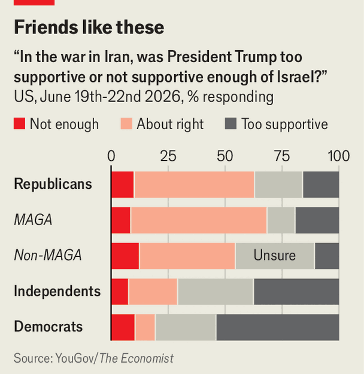
在Kalshi预测市场上，用户现在可以下注预测有多少获得AIPAC支持的候选人会在初选中落败。相关赔率持续攀升。随着亲以色列游说团体意识到无法通过向民主党施压来挽回影响力，他们被迫直面自身命运与共和党紧密相连的现实。本周进行的一项《经济学人》/YouGov民调显示，共和党人表示特朗普在伊朗战争中采取了恰到好处的平衡策略，或对以色列支持不足的可能性，是民主党人或独立选民的两倍以上（见图表）。然而，共和党人屡次展现出对特朗普相关政策的倾向性支持。如果总统改变立场，他的追随者也可能随之改变。对部分以色列支持者而言，范斯的言论标志着一场裂痕。国会中的支持者也愈发稀少。■
得克萨斯州参议员特德·克鲁兹警告称，根据这项协议向伊朗输送的资金将被用于“资助恐怖主义和谋杀美国人”。但他并未提及这项协议对以色列可能带来的问题。右翼评论员、以色列激烈批评者 Tucker Carlson 则重复了左翼的论调。他沉思道：“如果美国人死亡、美国变得更贫穷、国内紧迫问题被忽视，那么如何能帮助数千英里外的以色列应对问题？他们如何成为盟友？”美国以色列公共事务委员会（AIPAC）现已回归日常游说工作。据该组织一位消息人士透露，国会山的议员们仍在通过支持以色列的法案。不久后，关注点将转向另一项谈判：美以两国关于军事援助的十年期谅解备忘录，该协议将于2028年到期。
亲以政客不再依赖总统批准一项可能引发广泛批评的巨额援助方案，而是将简化情报与技术共享的新规则嵌入必须通过的法案中，例如《国防授权法案》。转向更隐晦的策略或许明智，但部分激进分子的敌意强度已不容忽视。除非以色列自身发生更深层变革，新的游说策略难以改变美国民众的既有看法。■ 关注美国政治动态，请订阅《The US in brief》，获取每日精选政治新闻速览；以及《Checks and Balance》，深入解析美国民主现状与选民关切议题。
§023 寻找伊朗战争的赢家原题：Looking for a winner from the Iran war? · 板块：United States · 栏目：美国
乔·科埃洛的家族在加利福尼亚萨克拉门托河谷的河德勒附近已从事农业四代。他说：“我是科埃洛家族第五代，就像《权力的游戏》一样。” 他的家族曾经营乳制品数十年，但2021年他们卖掉了奶牛，改种开心果。这些作物在河谷的干燥炎热气候中生长旺盛，转型种植开心果已初见成效。据市场数据提供商Expana称，今年5月，开心果在美国的售价达到每磅5.30美元，这是十年来最高价格，由于伊朗战争的推高。随着美伊和平谈判持续进行，白宫正声称战争已促进美国利益。 ■
按传统指标——比如拆解伊朗核计划或降低美国消费者物价——该论点存在缺陷。但至少有一群美国人从这场冲突中获利：约950名加州开心果种植者。开心果树在伊朗已生长数千年，该国曾长期主导市场。但1979年伊朗人质危机期间，吉米·卡特总统实施了贸易禁运，阻止了2500万磅开心果的进口（及其他商品）。此后，上世纪80年代美国农民指控伊朗以低价开心果倾销以削弱竞争，因此美国对伊朗征收高达241%的关税。加州农民填补了市场空白，相关产业由此蓬勃发展。2025年，加州果园已占全球开心果产量的60%。■
近年来，该国的种植者因迪拜巧克力的病毒式传播而获利，这款奢华的巧克力棒配以 pistachio 奶油，价格从2023年12月的3.28美元上涨至一年后的4.14美元，涨幅超过25%。随后爆发的伊朗战争带来冲击，3月21日当周，带壳 pistachios 的出口量同比骤降31%。科埃略先生坚持表示：“我不想让任何人认为我对这场战争感到高兴，事实上也没有人会这么想。”但他指出，冲突“正在摧毁世界部分供应，这为我们填补缺口提供了机会”。如今的问题是， pistachio 农民的繁荣期能持续多久？若和平持久，伊朗出口预计将恢复至接近此前水平——证据显示果园受损情况并不严重。■
若不进行市场结构性变革，加州 pistachio 农民的境况终将回归日常琐事。加州春季热浪摧毁了果园，科埃略先生伸手摘下树上的一串青绿色坚果，说道：“你能看到整个果实在热浪中被烤焦了。” pistachio 树具有隔年结果的特性，产量一年高一年低，因此此次热浪恰逢本应低产的年份。据国际坚果与干果协会（International Nut and Dried Fruit Council，一家游说团体）预测，美国产量将在2026年减半。从长期看，加州地下水开采的州政府限制可能进一步压缩供应。这将推高价格，但未必能为加州种植者带来净收益，因为他们将出售的坚果数量减少。一些农民已开始休耕田地。■
战争给美国 pistachio 农民带来的好处是真实的。但这种好处可能转瞬即逝。 ■ 关注美国政治动态，订阅我们的《美国简报》每日简讯，获取对重要政治新闻的快速分析，以及《权力制衡》每周通讯，深入探讨美国民主现状及选民关切议题。
§024 美国警察杀人案上升，尽管凶杀案数量下降原题：American police killings are rising, even as murder rates fall · 板块：United States · 栏目：美国
位于阿尔伯克基（Albuquerque）西区1515第八街的公寓楼，不是一个发生枪战的显眼地点。《经济学人》记者访问时，孩子们正在户外的充气泳池里玩耍。然而5月26日，街区尽头的一栋住宅却成为对峙现场。23岁的何塞·阿尔马斯（Jose Armas）正威胁要自杀。他的家人致电紧急服务部门，原本希望派出社工，却迎来了大批警察。警方对阿尔马斯大喊大叫，据其弟弟称，阿尔马斯最初 unarmed（未持武器）走出屋外。随后他返回室内，取出枪支并开火，击中了一辆警车。
■
警方随后开枪将其射杀。这起致命事件是阿尔伯克基警方今年的第四起。根据非营利组织Mapping Police Violence的数据，自2013年以来，该市警方已导致116人丧生。波士顿的数字仅为16起。在实施严格枪支管控的英国，过去13年间此类事件总数仅为34起。阿尔伯克基是更广泛问题的极端体现。截至2024年，美国因警方暴力致死的人数在过去十年间增加了约三分之一。尽管去年警方致死人数有所下降，但今年又出现回升。令人费解的是，这一上升趋势恰逢全国谋杀率下降之际。如今，每10名被杀的美国人中就有1人死于警方之手。六年前，数百万民众曾为抗议明尼苏达州一名男子乔治·弗洛伊德被警察射杀而走上街头。
问题如今更为严峻。在阿尔伯克基（Albuquerque），这一挑战并非新近出现。奥巴马政府的司法部曾发布一份严厉报告，指出该市“警员过于频繁地对威胁极小的民众使用致命武力”。这份报告出台不久后，便发生了一起案件：警方向一名携带刀具的精神分裂症无家可归者詹姆斯·博伊德（James Boyd）投掷电击手雷，随后放出攻击犬，待其惊慌时又开枪射击。此后11年间，警方部门一直处于联邦和解协议约束之下，迫使市政府制定政策以减少警方使用武力的情况。该协议于去年结束，因联邦政府与市政府达成一致，认为警方已履行协议条款。■
然而，即便改革措施本应初见成效，枪击事件数量却仍在上升。新墨西哥大学法学院的阿尔弗雷德·马修森（Alfred Mathewson）表示：“我们未能实现和解协议的首要目标，即减少警方枪击事件。”他参与了该法令的制定。如何应对这一问题？全国性数据掩盖了美国各地的显著差异。对比2013-16年与2021-24年的数据，警方枪击事件在2140个城市上升，而在1515个城市下降（在列出的5125个城市中，其余城市未见变化）。这表明问题的严重程度以及改革的潜在空间。全国范围内，更多警察因致命性不当行为被问责，但相关数据仍偏低。在许多情况下，难以指责警察开枪。大多数被枪击的人员均持武器。因此，在缺乏政治意愿限制枪支的情况下，改革者转向调整警方策略。■
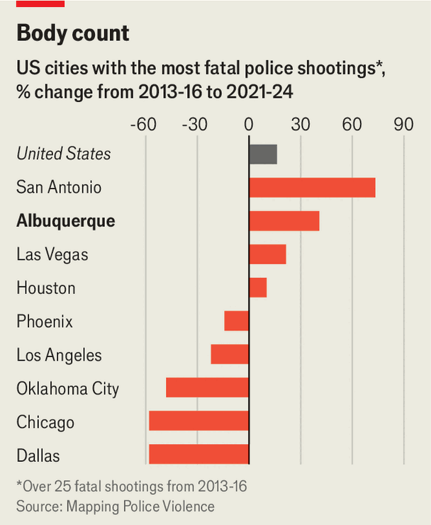
以芝加哥为例，警方枪击案数量在限制警员徒步追捕嫌犯后有所下降，这种追捕行为可能使警员被持枪者包围。在阿尔伯克基（Albuquerque）执业的律师劳拉·艾夫斯（Laura Ives）指出，该市的和解令并非彻底失败。警方已接受相关培训，明确何时可开枪、何时可使用电击器，并配备了执法记录仪。但阿尔伯克基的问题依然顽固，警方更倾向于风险规避。艾夫斯表示：“过去警员在肢体冲突时感到自在，如今面对威胁情境，他们更倾向于使用武器。” 对精神疾病患者的照护不足加剧了这一挑战。阿尔伯克基尚未从2010年代州政府削减精神健康治疗资金的冲击中恢复。■
警方暴力事件尚未再次引发像弗洛伊德之死后那样广泛的愤怒，但不幸的是，每一天都可能上演令人震惊的惨剧。治安官（主要在农村地区执法）的枪击事件近年来激增，抵消了某些大城市的改善（见图表）。最近在密西西比州一个小镇发生的一起案件中，警察开枪击毙了一名一岁婴儿，当时婴儿正坐在车内。警方称，司机（一名涉嫌盗窃纸尿裤的嫌疑人）试图撞向他们。当地目击者则质疑这一说法。警方表示他们当时站在车前，目击者却称他们正在追车。■
掌握美国政治动态，可订阅《The US in brief》每日简报，提供快速分析最新政经要闻，以及《Checks and Balance》周报，深入探讨美国民主现状及选民关切议题。■
§025 J.D. Vance继承了比特朗普主义更为激进的政治理念原题：J.D. Vance is heir to a more radical politics than Trumpism · 板块：United States · 栏目：美国
上世纪80年代，主流观点认为美国在里根总统领导下正向右转。但当里根任期即将结束时，帕特里克·布坎南却看到了不同的景象。这位曾为里根和理查德·尼克松效力的共和党坚定支持者，在1988年出版的自传《Right from the Beginning》中哀叹，这个“曾经基督教的国家”已抛弃了他作为天主教徒成长时所信奉的犹太-基督教价值观。他的批评或许仍能引起共鸣。
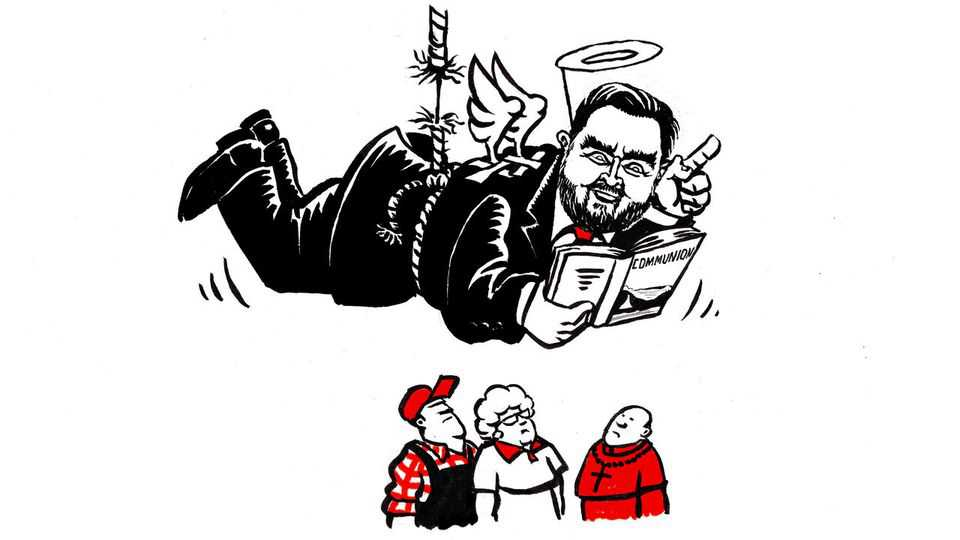
布坎南（Buchanan）写道，一个拥有“自身方法惩罚异端和维护正统”的世俗左翼运动，正通过过度关注被视作种族主义、性别歧视和环境破坏，传播社会主义，审查言论，并教导年轻美国人蔑视本国历史来推行其价值观。布坎南抨击所谓的“荒谬的‘贸易战’”以限制亚洲产品，称其是“西方几乎致命的愚蠢行为”。布坎南追随编辑威廉·F·巴克利（William F. Buckley）的榜样，后者同样是一位共和党人和天主教徒，他认为自由贸易对美国与苏联的斗争至关重要。柏林墙倒塌后，布坎南在1992年和1996年发起激进的共和党总统候选人竞选活动时，将文化保守主义与经济民粹主义相结合。
他谴责北美自由贸易协定背叛了美国工人，并呼吁对中国和日本征收关税。他现在推行一种孤立主义的外交政策——称其为“美国优先”——其中包括一道“安全围栏”以阻止非法移民。他怒吼道：“他们没有权利违反我们的法律，闯入我们的国家并领取福利。”这段历史对于理解美国多变的副总统J.D. 弗兰斯（J.D. Vance）迄今为止最重要的转变具有重要意义。他曾将唐纳德·特朗普比作海洛因，当他在竞选参议员席位前转变立场时，人们怀疑他动机不纯，但他在2022年仍赢得了选举。他的政治转变在同时期经历的宗教皈依——成为天主教徒——的背景下显得更有意义。■
自2015年从黄金扶梯上台以来，特朗普的竞选纲领是布坎南主义的翻版，而布坎南主义本身是20世纪两次世界大战间右翼天主教政治的复兴。从范斯最新著作《共融》中可以得出的结论是，他更像是布坎南的继承人，而非特朗普。这使他成为真正的激进分子，致力于社会的彻底变革。作为务实派，特朗普对那些令范斯着迷、引导布坎南的宏大理念毫无兴趣。特朗普信奉关税和边境墙，但其孤立主义政策始终无法遏制其全球扩张的野心，正如他对犹太基督教价值观的承诺并未阻止他发布自比基督的形象。■
很难想象特朗普会像范斯和布坎南那样引用1891年教皇通谕《新事》（Rerum Novarum）来为提高工资和推动工会化辩护。范斯在谴责共和党与保守基督教融合、将低税率置于工厂工作的优先地位时，听起来比布坎南更不像特朗普；当他在指责两党“抛弃了我们文明的基督教遗产”；或当他在哀叹“我们对商业的崇拜”（难道那个祭坛上没有特朗普的标志吗？）时。特朗普称自己已开创黄金时代。41岁的范斯则自视为引领一场长期斗争，以拯救世界免受自由主义之害。但与布坎南不同，范斯可能并不真意如此。鉴于他多次改变对重大问题的回答，他似乎对再次犯错毫不在意。
无论是反特朗普派还是特朗普派，无神论者还是信徒，奋斗的精英还是精英的敌人，万斯从未表现出怀疑。对于J.D.万斯而言，他的信仰从未动摇。这使得很难判断他究竟信奉哪些理念。他曾表示，共和党人“在使用权力时必须极其冷酷”；在《共餐》一书中，他写道，政治是“肮脏的生意”，其中“你必须做出妥协并塑造公众舆论”。他指的是针对移民的恶意谣言，比如他声称俄亥俄州的海地人正在吃邻居宠物的说法吗？还是他指的是关于自己的叙事？哪些叙事证明的是冷酷而非信念？他对美国从神权政治堕落的叙述显然缺乏说服力。
令人意外的是，这本在美利坚合众国建国250周年之际出版的关于公共生活中信仰的书籍，其副总统却未提及美国建国初期关于宗教在政府中角色的观念。他反而做出诸如“在现代美国政治中，谈论上帝已成过时话题”等荒谬言论，声称当年约翰·肯尼迪在就职演说中曾三次提及上帝。这位自诩为千禧一代的副总统难道不知道如何使用谷歌吗？他本可通过搜索发现，乔·拜登这位虔诚的天主教徒在就职演说中竟四次提及上帝。他是否忘记了奥巴马曾带领哀悼的教众齐唱《奇异恩典》，这一简单而震撼的信仰公开行为，是美国人从未见过的特朗普或范斯所展现的场景？自布坎南时代以来，某些事物已悄然改变。■
他相信，若不夺回最高法院，任何保守主义改革都将难以为继。由天主教徒伦纳德·刘易斯（Leonard Leo）领导的保守派联邦党人协会（Federalist Society）此后帮助安插了一位保守派且天主教徒占多数的法院。美国人或许可以安慰自己，副总统对与布坎南先生（Mr Buchanan）和布克利先生（Mr Buckley）相同的议题如此关切，说明共和国并未走向毁灭。其问题当然不包括缺乏虚伪的吹嘘者。■ 订阅者可注册《经济学人》观点通讯（Opinion newsletter），获取我们最佳的社论、专栏、特稿及读者来信。
§026 拉美地区的特朗普化浪潮原题：The dramatic Trumpification of Latin America · 板块：Americas · 栏目：美洲
“对那些多年来制造恐怖的人，你们的末日到了，”6月21日哥伦比亚总统选举获胜者阿贝尔多·德·拉·埃斯皮里拉（Abelardo de la Espriella，又称“老虎”El Tigre）从防弹玻璃后怒吼道。这位前国防律师出身的右翼民粹主义 outsider（局外人）候选人，获得了另一位符合这一形象的人物——唐纳德·特朗普的狂热支持。德·拉·埃斯皮里拉并非唯一效仿特朗普的拉美总统。■
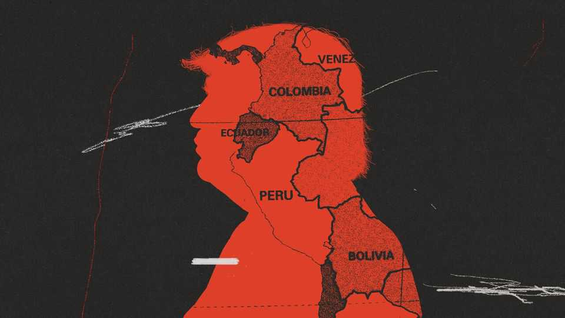
智利总统何塞·安东尼奥·卡斯特显得低调内敛，但他在2025年3月就职后数日内，便像特朗普一样站在秘鲁边境的沙漠中，军方挖掘战壕以阻止移民涌入。智利曾被“非法移民”所侵犯，他宣称。德拉·埃斯皮里埃尔拉和卡斯特属于一个正在以空前速度向右转的拉美地区。自特朗普于2025年1月上任以来，该地区右翼已赢得所有七场总统选举（见图表）。巴西或将在10月效仿。此前从未有过如此迅速、广泛且统一的政治右转浪潮。这并非回归传统右翼，而是转向更激进的特朗普式政治。这一趋势的出现，是因为选民已厌倦现状，而特朗普关注的犯罪集团和非法移民问题，也深深触动了许多拉美民众。■
他的强硬、高度网络化风格正被刻意效仿。这种风格正在赢得选举，但可能无法解决该地区最大的问题：安全局势和经济疲软。像德·拉·埃斯皮里拉和卡斯特这样的“特朗普式”总统并非个例。阿根廷总统哈维尔·米莱和萨尔瓦多总统纳伊布·布克勒位居榜首，并催生了各自的模仿者。以不同方式，厄瓜多尔总统丹尼尔·诺博亚、洪都拉斯总统纳斯里·阿斯福拉、哥斯达黎加总统劳拉·费尔南德斯·德尔加多以及秘鲁当选总统小川富美子也符合这一模式。巴西右翼希望之星弗拉维奥·博尔索纳罗也模仿特朗普，其父雅伊尔·博尔索纳罗曾担任总统。巴拉圭总统圣地亚哥·皮纳和玻利维亚总统罗德里戈·帕斯也持相同立场，尽管后者更偏向中间路线。■
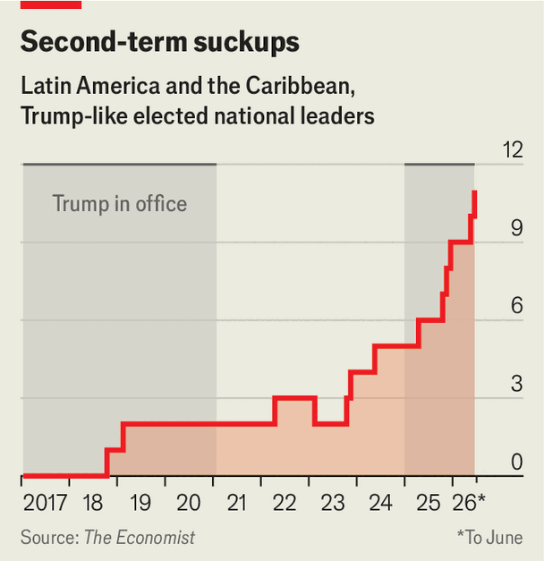
即便委内瑞拉临时总统德尔西·罗德里格斯（Delcy Rodríguez）——这位未通过选举上任的坚定玻利瓦尔社会主义者——也因自保之需与特朗普走近，两国如今联合开展军事行动。墨西哥作为特朗普边境的邻国，是唯一明显的例外。拉丁美洲无疑已成为全球最具有特朗普式特征的地区。这些人物之间确实存在实质性差异：诺博亚（Mr Noboa）更偏向技术官僚主义，米莱（Mr Milei）则更倾向自由主义。弗吉米亚（Ms Fujimori）与卡斯特（Mr Kast）并非局外人。他们皆深受本国塑造。尽管有人淡化与特朗普的相似性，但不可否认，他们已成为这一趋势的一部分。这一特朗普式转向的核心原因在于选民面临的主要问题高度重叠：特朗普及其支持者对涌入美国的贩毒集团感到愤怒；而拉丁美洲人则痛恨这些贩毒集团制造的暴力。■
主要由于帮派暴力，该地区承担了全球约三分之一的谋杀案，尽管仅占全球人口的约8%。哥斯达黎加和尤其是厄瓜多尔近期都经历了谋杀率的异常激增。在智利、哥伦比亚、哥斯达黎加、厄瓜多尔、萨尔瓦多、洪都拉斯和秘鲁最近的选举中，安全问题成为主要议题。与特朗普的立场一致最明显的是采取强硬的军事化应对措施。他将帮派组织定性为恐怖组织，并通过炸毁据称载有毒品的小船，导致超过200人死亡，这些行动几乎肯定违法。厄瓜多尔总统诺博亚大幅增加了军队在打击帮派中的作用，并在美军直接支持下展开突袭行动。■
德·拉·埃斯皮利亚承诺轰炸贩毒集团，拒绝排除使用美国军机的可能性，并承诺在就职90天内逮捕或处决十名贩毒集团头目。所有举措均加入特朗普的“美洲盾牌”计划，该计划旨在打击毒品贩子。布克勒提供了特朗普支持的逮捕与监禁模式，他已将厄瓜多尔2%的成年人口关押在专门建造的特制监狱中，往往未经审判。2018年他上任前，该国每10万人中有50人遇害，是全球最危险地区之一，如今已降至每10万人不足2人，与加拿大相当。这使他在整个地区获得广泛支持。德·拉·埃斯皮利亚承诺在哥伦比亚丛林建设七座布克勒式特制监狱。富士山承诺新建四座常规监狱和一座“特制监狱”。诺博亚已建成一座，承诺再建一座。■
形势严峻。去年厄瓜多尔监狱平均每七小时就有一名囚犯死亡，部分死于斗殴和骚乱，但更多死于疾病和饥饿。如同美国，不规则移民也是拉美多国的热门议题。自2018年以来，约34万无证移民抵达智利。秘鲁则收容约160万因经济崩溃和政权镇压逃离委内瑞拉的难民。卡斯特罗不仅在修建边境隔离墙，还承诺驱逐智利所有无证移民。弗吉梅尔女士也承诺对秘鲁无证移民进行遣返。即便在受委内瑞拉移民影响较小的阿根廷，米莱先生也简化了驱逐程序，并开展高调的移民突袭行动。布克勒则与特朗普达成协议，接受来自美国的第三国遣返移民，并将其安置在自己的巨型监狱中。■
鉴于拉美地区历史上政治风向的同步性，将近期特朗普式右翼崛起视为单纯的反现任政府情绪似乎有些轻率。这确实部分成立：左翼政府在阿根廷留下经济烂摊子，在哥伦比亚加剧治安恶化。但按理说这本应是传统右翼政党大获全胜的契机。然而选民却在奖励那些以极端手段打击犯罪的候选人，即便这种安全民粹主义手段粗暴不堪。被极右翼嘲讽为“derechita cobarde”（“怯懦的小右翼”）的传统右翼候选人屡屡被超越。选民记得右翼执政时期往往成效甚微。反现任政府的论调也忽视了一个事实：新式特朗普右翼已在哥斯达黎加、厄瓜多尔和萨尔瓦多赢得连任。■
民调数据显示，拉丁美洲18个国家的民众比过去两个多十年来更倾向于右翼。右翼倾向的转变远不止是选民担忧的重叠。竞选总统的候选人选择效仿特朗普的政治风格，因为他们认为这有助于赢得选民支持。最重要的是，特朗普为该地区开启了充满愤怒的边缘政治大门。“没有特朗普，就不会有贾维尔·米莱”，一位米莱竞选团队成员在米莱胜选后对《纽约客》杂志表示。“我们为西半球设定了基调”，美国参议员伯尼·莫雷诺（Bernie Moreno）如此说道，他是特朗普的亲密盟友，出生于哥伦比亚。这种直接影响往往显而易见。米莱的支持者们佩戴着“让阿根廷再次伟大”的帽子。■
德·拉·埃斯皮利亚先生（Mr de la Espriella，美国与哥伦比亚双重国籍，亦有意大利身份）在2024年特朗普胜选后，于社交媒体发布视频庆祝，视频中他用自创朗姆酒一饮而尽，表达“让美国和哥伦比亚再次伟大”的愿望。在哥伦比亚初选前接受《经济学人》专访时，他表示特朗普是经济政策的典范，其“对抗性别意识形态的文化斗争”值得借鉴。卡斯特先生则援引特朗普政府的移民政策，认为智利许多移民将自行离境。拉美新右翼势力大多效仿特朗普的沟通风格、作为局外人的定位，以及对政敌与媒体持续的言辞与法律攻击。当记者发布其不喜的信息时，布克勒总统便会签发逮捕令。
打破常规的倾向将家族和亲密朋友置于权力核心的做法也已被效仿，特朗普及其家族对加密货币的兴趣与运用亦被复制。对所谓“觉醒”或“全球主义”议题的憎恶或许是其核心特征：米莱称气候变化是“社会主义谎言”；德·拉·埃斯皮里拉称联合国是“左翼工具”；卡斯特反对任何形式的堕胎，并反对妻子服用避孕药。许多人寻求特朗普的背书，除德·拉·埃斯皮里拉外，他还支持洪都拉斯的阿斯弗拉，后者最终胜选。去年特朗普支持米莱及其政党在阿根廷中期选举中胜出，并通过美国财政部提供超200亿美元援助，帮助避免比索挤兑。此举助米莱政党赢得选举，挽救其总统任期。
诺博亚先生在2025年3月重新选举前两周会见了特朗普先生。上个月，巴西即将举行大选的右翼领先候选人弗拉维奥·博尔索纳罗先生在椭圆形办公室会见了特朗普先生。这位日益扩大的特朗普盟友网络成员之间也相互支持。德·拉·埃斯皮里拉先生的竞选活动不仅获得了特朗普先生的支持，还得到了米莱先生、阿斯福拉先生以及在巴拉圭的佩尼亚先生的公开支持。诺博亚先生走得更远。在哥伦比亚初选前，他应德·拉·埃斯皮里拉先生的要求，承诺取消此前对厄瓜多尔北部邻国征收的关税，以此表达善意。这种亲密关系未必源自自然发展。右翼长期以来抱怨圣保罗论坛——一个拉美左翼人士的聚会——的影响。如今，他们正构建一个面向社交媒体时代的替代结构。■
智利公共知识分子兼网红阿克塞尔·凯撒（Axel Kaiser）是其中一员。他的哥哥在2025年以极右翼候选人身份参选智利总统，首轮获得14%选票后支持凯撒先生。"思想先于制度变革和政治变革"，凯撒先生如是说，呼应了保守派美国记者安德鲁·布雷特里（Andrew Breitbart）的名言"政治是文化的下游"。他声称，这一网红网络"深刻改变了数百万民众的思维方式"。放大这些思想的还有像阿根廷24岁社交媒体网红阿古斯丁·安东内蒂（Agustín Antonetti）这样的人。像他这样的网红确实产生了影响。去年11月，墨西哥左翼总统克劳迪娅·希内鲍姆（Claudia Sheinbaum）指责他煽动针对政府的抗议活动。古巴政权则称他为CIA特工。"我当时只是躺在床上关注事态发展"，他笑着说道。■
但他表示，社交媒体对右翼势力的成功至关重要。凯撒（Kaiser）称其为“决定性因素”，尤其是对像德·拉·埃斯皮里拉（de la Espriella）这样的局外人而言。拉丁美洲约40%的人表示，社交媒体是他们获取新闻的主要渠道，这一比例是欧洲的两倍。维森特·费尔南德斯·莫哈恩（Vicente Fernández Moujan）表示，在线幽默具有强大影响力，他负责米莱（Milei）的数字竞选活动。相比之下，在线左翼则显得“乏味”。新兴媒体同样重要。引领这一趋势的是2020年创办的右翼新闻网站《拉德雷查日报》（La Derecha Diario）。该网站联合创始人哈维尔·内格雷（Javier Negre），一名西班牙记者，目前在白宫记者团（White House press pool）任职。他指出，特朗普“为许多缺乏传统媒体支持的拉美候选人指明了方向”。《拉德雷查日报》帮助“我们的候选人”传递信息，“避免虚假新闻”，他说道。
新闻机构与竞选顾问之间的界限难以分辨。他声称自己与九位总统关系密切，并帮助德拉·埃斯皮里拉先生“因为他是朋友”。有时他收取费用帮助候选人信息病毒式传播，有时则免费提供服务。竞选策略师和游说人士则协助推广这些技术。另一位阿根廷人费尔南多·塞里梅多（Fernando Cerimedo）与内格雷（Negre）共同创办了《右翼日报》（La Derecha Diario），或许是其中最重要的人物。2023年他协助米莱（Milei）制定社交媒体策略。他介入安排 Tucker 卡尔森（Tucker Carlson）对米莱总统竞选期间的采访。他表示曾负责阿斯弗拉（Asfura）在洪都拉斯的竞选活动，并协调特朗普的背书工作。他还帮助帕斯（Paz）当选玻利维亚总统，并继续担任总统顾问。他与特朗普前竞选经理布拉德·帕斯卡勒（Brad Parscale）保持密切合作。■
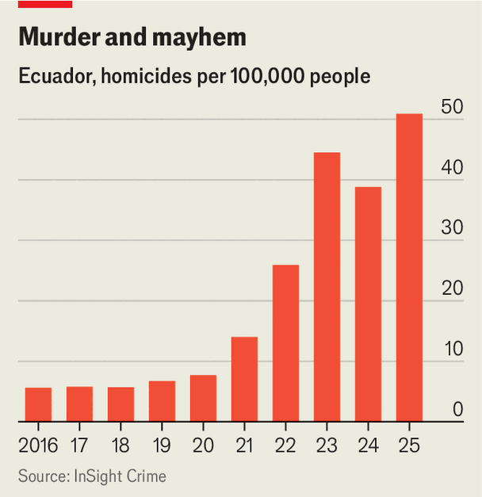
特朗普式领导人的执政记录目前参差不齐。伯克勒（Bukele）在大幅降低凶杀率方面取得显著成效，但代价是大量未经正当程序或审判即被关押的民众。他更修改宪法以延长任期。这种安保模式在其他地区恐难奏效。萨尔瓦多国土狭小，帮派活动主要局限于国内。哥伦比亚则超过50倍于萨尔瓦多的国土面积，人口是其8倍，生产全球三分之二的可卡因，帮派势力已深度嵌入跨国犯罪网络。同样面临国际帮派威胁的厄瓜多尔，诺博亚（Noboa）也效仿伯克勒动用军队，但收效甚微。他2023年上任时凶杀率已高达每10万人46人，2024年略有下降，但2025年又飙升至历史新高51人，尽管多名帮派头目被捕。■
截至目前，2026年似乎略有起色，但近三个年头的诺博亚执政下，该国仍异常动荡。特朗普的新盟友在管理经济方面表现更佳。继继承一个经济状况极其糟糕的局面后，米莱的激进支出削减和放松监管政策已显著压低通胀，使得资本管制得以缩减，比索部分实现浮动。不过，增长不均衡，就业仍是难题。即便如此，他仍远超多数预期。诺博亚的宏观管理政策则显得审慎且严格遵循国际货币基金组织的建议。借贷成本大幅下降。不过，增长依然不均衡。在智利，卡斯特的亲市场计划看起来合理。这些政策才刚开始见效，但要实现他承诺的4%增长将颇具挑战。■
市场对德·拉·埃斯皮里拉当选表示欢欣鼓舞，他本人也正确指出将致力于遏制哥伦比亚日益攀升的公共债务。但其承诺受到讨好选民的廉价房贷和额外支出承诺的削弱。兑现7%增长目标的难度似乎极高。多数积极的经济成果来自传统右翼政策——缩减政府规模、放活市场——而非特朗普式政策如关税。事实上，与特朗普和部分拉美左翼领导人不同，目前多数新右翼人士似乎仍尊重央行独立性。这一切是否足以确保新右翼未来连任仍需观察。该地区政治极化严重，部分选举结果曾异常胶着。左翼可能很快再次赢得选举。■
即便如此，右翼如今已被更为强硬和民粹主义的思潮与领导人主导。这种局面恐怕短期内不会改变。就连中右翼人士也逐渐变得更为极端，试图保持政治相关性，但收效甚微。因此，当右翼再次获胜时，很可能是以强硬民粹主义形式出现。正如特朗普的例子所示，拉美地区未来可能出现的右翼政府或许比首次登场时更具破坏性。■ 注册订阅《El Boletín》，了解塑造这一复杂地区的各种力量。
§027 美洲以武力驱逐委内瑞拉黄金走私集团原题：America is using force to drive gangsters from Venezuela’s gold · 板块：Americas · 栏目：美洲
拉斯克拉里塔斯笼罩着不寻常的寂静，这里是委内瑞拉非法黄金开采的重灾区。过去十余年，名为“ Sindicatos”的帮派组织统治着玻利瓦尔州东部这片通常喧嚣的丛林地带。6月8日，军用直升机突袭驱逐了这些帮派，数千名自由矿工仓皇逃离。随后美国发动空袭，击毙了“阿瓜雷纳火车”犯罪集团头目赫克托·“小家伙”·格雷罗·弗洛雷斯。唐纳德·特朗普在社交媒体上宣称：“这一行动与我们的好朋友委内瑞拉密切协调，我们与委内瑞拉合作非常顺利。”他在委内瑞拉有理由庆祝。
■
自美国特种部队于1月抓获独裁者尼古拉斯·马杜罗（Nicolás Maduro）以来，特朗普政府一直在监管委内瑞拉的石油出口。通过在玻利瓦尔州建立立足点，美国正打开通往矿产资源的道路。“清理行动使美国得以接触全球最丰富的金矿之一，”一位矿业行业人士表示。作为美委两国首次联合军事行动，此举也展现了特朗普对德尔西·罗德里格斯（Delcy Rodríguez）的影响力。委内瑞拉中央大学的莱昂纳多·维拉（Leonardo Vera）称，双方共同目标是让西方矿业公司重返该国。许多这类公司曾在2000年代初前总统胡戈·查韦斯（Hugo Chávez）国有化经济的浪潮中失去开采权。■
2016年，与马杜罗重新谈判访问期间，他开放了奥里诺科矿业弧（AMO），这片面积相当于葡萄牙的土地，大部分为热带雨林。到那时，工会组织已控制了矿坑。他们向军队行贿以获取进入权和物资供应。随着石油收入崩溃，马杜罗接受了这种犯罪体系。由帮派控制的采矿活动迅速蔓延，破坏生态系统，残酷剥削工人，并在AMO地区引发致命的领地争夺战。马杜罗的行动提供了机会。3月，特朗普政府的内政部长道格·伯格姆访问了首都加拉加斯，与20多位矿业高管会面。瑞士大宗商品贸易商特拉法加（Trafigura）表示，正购买价值1亿美元的委内瑞拉部分精炼金矿。5月，一家美国公司将其在拉斯克拉里塔斯（Las Claritas）废弃项目的开发权出售给加拿大金属大亨理查德·沃克。
这笔交易意味着未来四年投资最多2亿美元。就在突袭行动前，西方投资者被目击出现在邻近城市埃尔卡亚奥（El Callao）一处著名采矿设施中。拉斯克拉里塔斯（Las Claritas）周边地区蕴藏着全球第四大未开采黄金储量。委内瑞拉全国铁矿储量位居世界第七。然而，查韦斯（Chávez）和马杜罗（Maduro）执政期间工业采矿管理混乱，据数据提供商彭博新能源财经（BloombergNEF）统计，基本金属产量自2006年以来已暴跌90%。因此，黄金等矿产出口存在快速提升空间。吸引外资的立法正在助力。今年4月，国民议会通过了采矿改革法案，延长采矿特许权、降低向国家支付的矿产税并允许国际仲裁解决纠纷。然而，委内瑞拉的矿山如同其油田一样处于瘫痪状态。■
委内瑞拉矿业协会称需要500亿美元投资，有人认为需要更多资金。在埃尔卡洛位于的矿业综合体，三分之二的地下隧道被水淹没，多数设备损坏或被拆解取零件。专业人才匮乏，去年西蒙·玻利瓦尔大学仅毕业五名矿业工程师。与仍由国家控制的石油不同，扩大矿业开发面临重大安全挑战。特朗普和罗德里格斯已逮捕了格雷罗的帮派头目，但阿瓜拉火车组织仍大部分完整，据阿瓜拉火车组织专家罗娜·里斯奎兹称。格雷罗的副手，包括拉斯克拉西塔斯工会头目约翰·佩特里卡，仍逍遥法外。阿瓜拉火车并非矿业带唯一威胁。■
哥伦比亚邻近地区有两个更为成熟的叛乱组织在此活动：哥伦比亚国家解放军（National Liberation Army）以及前哥伦比亚革命武装力量（Revolutionary Armed Forces of Colombia，简称FARC）的分裂分子。国际危机小组（International Crisis Group）的菲利普·冈森（Phil Gunson）表示：“他们不会轻易放弃。”这或许就是军队选择较易对付的目标拉斯克拉里塔斯（Las Claritas）的原因。即便特朗普呼吁采取更多行动，委内瑞拉力量空虚的军队也难以击败经验丰富的游击队，无论是否借助美国空袭。最后的担忧在于委内瑞拉的声誉。透明国际（Transparency International）指出，非法开采的黄金占该国产量高达90%。大多数西方炼金厂拒绝处理这类黄金，其中大部分最终流入中东。■
国际矿业公司可能辩称，通过自行采矿，他们能更负责任地掌控整个流程。但它们仍不得不与一个有着令人震惊记录的政权做生意，全球见证（Global Witness）的卡特里娜·莱恩福德（Catriona Rainsford）表示，该组织是一家环保与人权非政府组织。罗德里格斯政府正走在钢丝上。尽管必须取悦其美国监督者和投资者，但政府无法疏远与非法采矿活动紧密交织的本国军队。将军们从非法矿主处攫取数百万美元利润，以提供物资和保护为交换。他们绝不会轻易放弃这一有利可图的副业。被允许为美国公司提供合法服务，或许能成为一种安慰奖。■
但与其打击游牧强盗，或许更值得维持与他们的联系，因为其中许多人将深入国家公园。在矿业行业工作的委内瑞拉人表示：“如果你清理一个区域，他们就会转移到其他地方，这很简单。” ■ 订阅我们的独家通讯El Boletín，了解塑造这一迷人而复杂地区的各种力量。
§028 海湾战后三大挑战 中东与非洲原题：The Gulf’s three post-war challenges · 板块：Middle East & Africa · 栏目：中东与非洲
一月仿佛是另一个时代。在迪拜银行家聚会上，讨论焦点是这座城市炙热的房地产市场是否将迎来调整。在多哈（Doha）科技会议上，所有人都想谈论人工智能。战争已威胁中东，但没人愿意相信它会波及自身。对海湾合作委员会（GCC）——这个由石油君主国组成的联盟而言，随后的几个月是自1990年萨达姆·侯赛因（Saddam Hussein）入侵科威特以来最大的冲击。或许这个比较显得过分夸张。
第一次海湾战争导致数百名科威特平民死亡，并在萨达姆军队点燃油田引发生态灾难；这场冲突的后果如今已不那么显眼。数千次伊朗导弹与无人机袭击造成数十亿美元损失，但幸运的是伤亡人数不多。尽管霍尔木兹海峡曾封锁近四个月，海湾居民却未遭遇严重物资短缺。当封锁期间仍能进口牡蛎，这种战争显得颇为奇特。然而从某些角度看，这场海湾战争的冲击程度，甚至超过了第一次。1990年，海湾合作委员会（GCC）是全球的石油供应中心；而今它已成为金融、物流等多个领域的巨头，拥有全球最大主权财富基金和航空公司。其经济总量达2.3万亿美元，超过全球产出的2%。■
海湾地区对数百万外籍人士而言是避风港，他们被这里安全繁荣的承诺所吸引，而这片区域本身却充满动荡。但这一模式如今正面临质疑。接下来的发展在很大程度上取决于美国与伊朗的谈判进展。如果特朗普能达成一项持久协议，终结美国与伊朗长期冲突，海湾地区的动荡可能很快平息。若战火重燃，下一轮冲突或将更具破坏性。海湾地区官员普遍不认为战争会重演，但他们也不期待持久和平。未来一段时间内，他们仍将面临升高的风险。这带来三大挑战：重建信心；重新评估对石油经济多元化雄心勃勃的计划，这些计划从未考虑过如此高的风险；以及应对这一复杂地缘政治局势，在此背景下他们既不信任美国——这个长期保护者，也不信任彼此。部分国家将比其他国家应对得更好。■
海湾国家共同经历了创伤，但其后果将不均衡地显现。乍看之下，阿联酋（UAE）似乎承受了最大的信心打击。由迪拜等七成员国组成的联邦，遭遇了2800次攻击，几乎与海湾合作委员会（GCC）其余国家总和相当。与以色列的密切关系及领导人强硬的立场，似乎使其长期处于伊朗在海湾的目标清单之首。然而，迪拜的许多外国侨民对战争及未来仍表现出乐观态度。批评者可能认为这种乐观是被强迫的：阿联酋曾因在WhatsApp上分享伊朗袭击消息而逮捕民众。战争期间有多少人离开的问题，是迪拜人饭桌上的热门话题，但由于酋长国不公布详细人口数据，无人能给出确切答案。■
尽管如此，从现象来看，许多专业人士选择留守：高速公路的车流和商场的拥挤。这座城市远比过去数十年的流动率低。许多离开的人可能别无选择，因为依赖旅游业的酒店和其他企业解雇了数千名员工。旅游业占阿联酋GDP的12%，将成为整体信心的早期风向标。夏季本就冷清，但许多企业预计一旦酷热天气缓解，就能迅速恢复。但复苏可能并不均衡。“俄罗斯人和印度人告诉我们他们几乎立刻就能回来，”一位营销高管表示。“英国人呢？2027年底。”阿联酋拥有雄厚的经济实力有助于这一局面。战前其原油盈亏平衡价仅为每桶50美元，远低于多数邻国。
迪拜已推出25亿迪拉姆（约合6.8亿美元，占GDP的0.5%）的战时激励措施，暂停了部分酒店住宿和餐厅账单的税收。恢复小型海湾国家民众信心将更加困难，尤其是巴林。这个岛国开战时债务与GDP比率高达146%，是全球最高之一。其外汇储备仅能覆盖不足两个月的进口。再加上长期存在的王室与什叶派多数民众之间的紧张关系，后者长期抱怨（确实如此）受到歧视。战争进一步加剧了这两个问题。尽管石油仅占GDP的14%，但贡献了约50%的政府收入，而巴林自3月以来几乎未进行出口。阿联酋于4月向巴林央行提供了50亿美元的货币互换额度。进一步的救助措施似乎难以避免。
海湾国家的支持帮助巴林避免了债务评级下调（其债务此前已被归类为垃圾债）。本月早些时候发行的10亿美元债券遭到超额认购。不过，这只会加重王国的债务负担——其最新债券利率超过7%，比战前发行的债券高出一个百分点。与此同时，战争期间，巴林人表达对伊朗的同情并不少见，尽管政权轰炸了他们的国家，并曾考虑吞并该国。旅游业长期表现不佳，而动荡与财政困境将使吸引新游客变得困难。其他行业也显得脆弱。巴林试图将自己定位为服务于沙特市场的企业的物流枢纽。然而，霍尔木兹海峡的不确定性可能使这一战略风险陡增。与计划扩建东海岸港口的阿联酋不同，巴林别无选择只能依赖海峡。■
确实，这场战争的一个教训是，地理因素至关重要。沙特阿拉伯的国土面积帮助它比大多数邻国更好地应对了战争。其主要城市大多未遭受伊朗袭击，领空也从未关闭。一些公司临时将员工从迪拜调往利雅得。庞大的国内市场帮助弥补了外国游客减少带来的影响——旅游行业主要依赖宗教朝觐者，这比休闲旅游更稳定。沙特王国已开始缩减一些最雄心勃勃的项目，尤其是位于西北部的未来城市“新未来城”（Neom）。与其建造镜面摩天大楼和沙漠滑雪场，沙特正尝试将自身定位为物流枢纽，建设一座现代港口，连接海湾国家与红海。这是一次明智的战略调整。
它也可围绕人工智能提出类似主张：若在西海岸建设数据中心，距离伊朗将达1,500公里，而其他海湾国家仅需200公里。然而，港口和数据中心未必能吸引沙特此前通过“新未来城”（Neom）计划所期待的富裕外籍移民。这些项目也难以为沙特本国公民创造大量就业机会，毕竟当地人对从事码头工人工作并不热衷。战前，海湾国家曾希望效仿迪拜，通过吸引富裕企业家、发展以旅游、金融和技术为核心的现代服务业实现多元化。但在如今风险加剧的海湾地区，他们或许已难以复制这一模式。“战争并未终结迪拜模式，但可能终结‘海湾各国都能成为迪拜’的设想，”一位欧洲外交官指出。卡塔尔为2022年世界杯提前投入数百亿美元建设住宅、酒店和基础设施，但赛事过后却面临各类资源过剩的问题。■
科威特面临相反的问题：数十年的政治瘫痪使其无法建设任何重大项目。地区局势的长期不确定性可能让两国双双陷入困境。两国经济今年预计将萎缩两位数，可能要到2028年（见图表）才能恢复战前的GDP水平。阿曼一直是海湾地区最不合群的国家，作为中等规模的石油生产国，其外交政策却异常激进。过去几个月，阿曼因对伊朗表示同情并考虑与伊朗伊斯兰共和国合作在霍尔木兹海峡收取通行费而激怒了邻国。这或许能使其免受伊朗的猛烈攻击，但也伴随着自身风险。海湾合作委员会（GCC）坚持称自己是兄弟国家组成的联盟，但该组织却频繁出现剧烈裂痕：不到十年之前，巴林、沙特阿拉伯和阿联酋曾对卡塔尔实施封锁，以惩罚其支持伊斯兰主义组织的行为。■
在华盛顿，共和党人则讨论对阿曼实施制裁（特朗普荒谬地曾考虑轰炸阿曼）。实际上，海湾合作委员会（GCC）一直更擅长作为旅游和贸易区，而非政治集团。战争暴露了这一缺乏统一性——例如在武装部队层面可能进一步加剧分歧。美国长期以来敦促海湾国家整合防空体系，但缺乏信任阻碍了这一进程。为节约稀缺的拦截导弹，各国陷入邻国掠夺的思维定式。此外，他们对外交策略也存在分歧。卡塔尔在美伊初步协议（6月17日签署）的谈判中发挥了关键作用。协议签署前的几天，所有六国都敦促特朗普接受该协议，担心替代方案将引发更多战争。但私下里，许多官员却痛惜这是一项糟糕的协议。■
沙特阿拉伯如今已加入土耳其、埃及和巴基斯坦，试图影响事态发展。但沙特方面承认，这一联盟是临时拼凑且力量薄弱的：其合作伙伴均缺乏足够的影响力，难以说服伊朗做出让步。阿联酋则基本置身外交角力之外，视伊朗为不可调和的敌人，计划将更多精力放在加强威慑力上，而非其视为徒劳的外交努力。所有这些意味着海湾合作委员会内部对伊朗缺乏统一立场。与此同时，各方对美国也失去了信心：美国过于反复无常，难以被信赖为安全担保国，却又因体量庞大而无法被取代。每个人都将寻求新的中等强国盟友。中国可能扩大其区域外交角色（尽管此前态度消极）。与以色列的关系则可能取决于其今年秋季的选举结果。■
沙特王室成员表示，该国仍愿推进与以色列的正常化关系，但前提是新一届以色列政府能提供替代无休止战争的方案。数十年来，海湾君主国的统治者们向民众提供了一个交易：远离政治，他们将确保安全与繁荣。石油和美国保护的承诺已不足以支撑这份契约。战争并未撕毁它——但已使其比以往任何时候都更加脆弱。■ 注册《中东简报》（Middle East Dispatch），每周获取关于这个复杂且关键地区的重要信息。
§029 以色列迎来新希望原题：Does Gadi Eisenkot offer Israel a new chance? · 板块：Middle East & Africa · 栏目：中东与非洲
距离以色列民众投票仅剩四个月，主要竞争格局正在发生变化。现任总理内塔尼亚胡的联盟长期在民调中表现低迷。过去一年，主要挑战者一直是纳夫塔利·贝内特（Naftali Bennett），这位右翼人士曾在2021年取代过内塔尼亚胡。但近期民调显示，另一位候选人正超越贝内特，成为对这位长期执政总理构成最大威胁：加迪·艾森科特。这位新成立的中间派政党领袖，其政党人气已接近内塔尼亚胡的利库德集团（Likud），相较于贝内特和内塔尼亚胡，他具有明显优势。■
他是以色列国防军（IDF）前总参谋长，这一经历在以色列仍处于多场战争中时备受重视。但他也是政治领域的新生代，相较于对手而言包袱更轻。他直到2022年才首次当选以色列议会（Knesset）议员。在10月7日袭击事件后，他加入内塔尼亚胡的战争内阁，但仅八个月后便辞职。巴勒斯坦加沙战争初期，他曾致函战争内阁同事，批评内塔尼亚胡“回避重大决策”。他警告以色列可能陷入漫长且无果的战争，无法摧毁哈马斯的军事和执政能力。两年后，他的预言被证实。■
以色列国防军（IDF）仍占据加沙地带过半地区，而哈马斯则在剩余地区根深蒂固，继续控制着20万加沙居民。以色列的袭击摧毁了加沙大部分区域，造成超过73,000人死亡，其中大部分是平民。这场战争严重损害了以色列的国际声誉和盟友关系。埃森科特当时做出的批评既预见到问题又充满情感。他的儿子加尔，一名25岁的预备役士兵，两个月前在战斗中阵亡。与此同时，以色列继续陷入无休止的血腥战争，取得的战略进展寥寥无几。内塔尼亚胡如今与美国总统陷入严重对立。随着选举日的临近，两个问题浮现：埃森科特是否真正代表内塔尼亚胡的替代选择？他能否赢得选举？政治上，他难以被清晰定位。■
他曾经支持过左翼工党和右翼利库德集团。在军事立场上，他同样存在模糊之处。他被视为以色列“达希亚战略”的制定者，这一战略引发国际社会的谴责并被指控犯有战争罪。该战略主张对平民基础设施实施大规模空袭，以摧毁敌方据点。然而，在2015年和2016年发生多起巴勒斯坦青年刺杀事件期间，他担任以色列国防军总参谋长时，曾反对“射杀政策”，此举遭到以色列右翼的抨击。尽管他批评内塔尼亚胡，但最初仍支持对加沙、黎巴嫩和伊朗的战争。他强调两者的区别在于，他主张更早结束战争并随后推动外交行动。■
他始终认为内塔尼亚胡总理“重绘中东版图”的野心从未现实过，其真正动机是确保自身政治生存。以色列寻找内塔尼亚胡接班人的过程漫长而曲折。10月7日之后，人们一度寄望于另一位前将军本尼·甘茨，埃森科特在从政后曾加入甘茨的政党。但甘茨未能抗衡总理，人气逐渐消退。随后本雅明·本内特似乎崛起，如今其声望又在下滑。与这两人不同，埃森科特从不刻意模仿内塔尼亚胡那口才出众的演讲风格或咄咄逼人的外电采访表现（他的英语表达略显生涩）。■
他试图说服以色列民众，自己拥有切实可行的计划，以应对以色列面临的安全与外交困境，以及关于宗教在国家中的角色、司法与民选官员之间权力平衡的激烈争论。他的政党承诺将很快发布一份详细纲领。这或许能证明他是否真具备替代性。随后他将面临最大的考验：向以色列公众推销自己。■ 注册订阅《中东简报》，每周获取关于这个复杂且具有深远影响地区的重要动态。
§030 埃博拉病毒让非洲脆弱的卫生体系陷入聚光灯原题：Ebola has put Africa’s fragile health systems in the spotlight · 板块：Middle East & Africa · 栏目：中东与非洲
去年，肯尼亚卫生专家塞莱斯丁·穆加米（Celestine Mugambi）目睹美国突然暂停并削减对非洲的卫生资金援助。直到2025年2月，美国一直是肯尼亚公共卫生领域外部资金的主要提供者，占比超过60%；而美国对肯尼亚艾滋病防治计划的支持，尤其是穆加米参与管理的项目，尤为关键。突然之间，工作人员被裁员，挽救生命的医疗服务缩水，避孕药和抗逆转录病毒药物从医院货架上消失。“当时存在大量不稳定因素和焦虑情绪，”她回忆道。
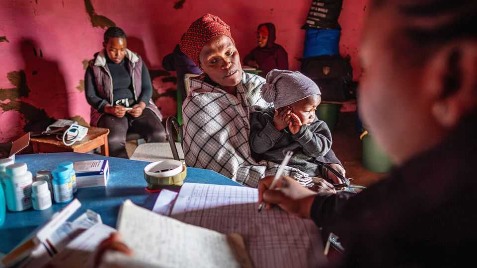
■
但仍有转机：“这为肯尼亚提供了塑造自身卫生计划的机会。”一年多来，特朗普政府解散美国国际开发署（USAID）并大幅削减其对全球公共卫生的投入后，非洲脆弱的卫生体系再度陷入紧急状态。自2018年以来最严重的埃博拉疫情正在刚果东部和乌干达肆虐，并威胁扩散。财政紧张的政府如肯尼亚，仍在去年援助削减的余波中，被迫将稀缺资源投入病毒监测与检测。积极面在于，倡导者所称的“健康主权”推动正逐渐形成势头。这场自力更生运动的催化剂是一系列危机，暴露了非洲卫生体系对外国援助的高度依赖。■
新冠疫情暴露了国内制药业制造能力的薄弱。援助削减揭示了整个卫生项目不仅依赖捐助者提供资金，还依赖其物资和人员。南非国家艾滋病委员会首席执行官特姆比西莱·库卢（Thembisile Xulu）指出，截至去年，约有15,000名工作人员由美国总统防治艾滋病紧急救援计划（PEPFAR）资助。仅三个月后，这些员工全部失业。美国于6月19日宣布将彻底终止对南非的PEPFAR资助。过去承诺提升自主能力的承诺往往因缺乏政治意愿而未能实现。
支持改革以使医疗体系更加协调且独立的呼声，过去多来自卫生或财政部长，洛克菲勒基金会的纳文·拉奥（Naveen Rao）指出，“如今这一呼声正来自国家元首。”由加纳总统约翰·马哈马（John Mahama）领导的“阿克拉重置”（Accra Reset）计划旨在将更多本地资源投入医疗，并推动本地制造业发展。首要且最重要的任务是财政方面。自2022年以来，非洲国家的医疗领域外国资助下降了60%，而该地区多数政府难以填补这一缺口。然而，一些国家正在加码应对。华盛顿的全球发展中心（Centre for Global Development, CGD）认为，2025年非洲各国政府为应对援助削减所采取的措施中，超过三分之二与医疗相关，例如采购药品。■
加纳取消了针对其健康保险机构的从价税上限，使预算增加了60%。尼日利亚、卢旺达和埃塞俄比亚正考虑对酒精、糖和香烟征税。政府和捐助机构也正寻求私营部门的资金支持。倡导组织ONE Campaign希望非洲各国政府考虑侨汇资金——即便在2025年前，侨汇已超过援助资金——以资助健康保险计划。欧盟希望将传统赠款与贷款及私营资本相结合。非政府组织正积极接触私人投资者。在肯尼亚，由穆加米女士领导的非营利组织Tiko推出了其称之为全球首个聚焦性健康的"发展影响债券"——一种只有达成既定目标才向投资者偿付的融资模式。类似债券可能于今年在南非推出。政府还需找到节省开支的方法。
此前，Tiko联合创始人本诺·伦纳德（Benoit Renard）指出，碎片化的捐赠项目和并行的交付系统意味着“在一家机构中，你可能会发现三位不同非政府组织的人员，分别以三种不同身份执行同一项任务”。解决此类低效问题可降低成本，使医疗体系更少受冲击。以莫桑比克为例，去年削减开支后，西北部特特省（Tete）的卫生官员开始整合免疫接种、疟疾防治、计划生育等初级医疗服务。原本分散在多个非政府组织之间的资源被集中起来。据为政府提供建议的咨询公司Acasus的乔尼·巴尔蒂（Jonny Barty）表示，这一模式使医护人员“在更短时间内，覆盖更多人群和更多地区”。该省卫生部正将这一模式推广至全国。非洲也亟需扩大医疗产品生产。■
目前，非洲进口70%-100%的成品药品，以及约99%的疫苗。非洲疾病预防控制中心（Africa CDC，非洲主要公共卫生机构）希望到2040年，至少60%的疫苗、诊断工具和治疗药物能在本地生产。研发能力需提升，以便药物开发更贴近本地需求。有前景的制造中心包括南非，该国希望本地药企生产用于艾滋病预防的先进药物lenacapavir；尼日利亚则采取了Unitaid（全球卫生机构）负责人罗伯特·马蒂鲁所称的“政府全面参与”策略推动生产。肯尼亚一家工厂也即将交付其首批药品。研发工作正取得进展。■
得益于慈善机构和非营利组织如治疗被忽视疾病的倡议（Drugs for Neglected Diseases initiative），非洲一些最致命疾病的临床试验现在在全非洲范围内进行。刚果国家生物医学研究局对最新埃博拉疫情的发现过于迟缓，但已主导了引发此次疫情的邦迪布古（Bundibugyo）病毒株的基因组测序工作。仍存在诸多障碍。并非所有国家都能成为制药强国，因此区域合作至关重要。然而南非至今拒绝加入2021年启动的非洲药品管理局（African Medicines Agency），该机构负责认证疫苗和药品。这将推迟非洲大陆的制药市场发展。最大的问题仍是资金。2024年，28个非洲国家在偿还外债上的支出超过医疗支出。■
肯尼亚非政府组织Bajeti Hub最近的一项分析发现，当肯尼亚的债务与GDP比率每上升一个百分点，长期医疗支出将下降1.2%。约22个非洲国家已与特朗普政府签署协议，以恢复部分美国医疗资金——作为交换条件，这些国家需提供国家健康数据，部分国家还需让渡矿权。通往主权的道路并不平坦。■ 注册订阅《Analysing Africa》，每周获取关于世界最年轻、最不为人知的大陆的深度洞察。
§031 南非反移民抗议浪潮折射出非洲大陆的困境原题：What a surge of anti-migrant protests says about South Africa · 板块：Middle East & Africa · 栏目：中东与非洲
近期数月，南非的反外籍人士抗议浪潮席卷全国，其口号愈发清晰可闻：“Abahambe! Sekwanele!” 这句祖鲁语（isiZulu）在南非家庭中最为常见，意为“他们必须离开！够了！”
根据暴力监测机构ACLED的数据，仅2026年上半年，针对移民的抗议活动数量已超过2020年代任何一年。政府方面也日益担忧，6月30日或将迎来暴力高潮。
“March and March”自卫组织给非法移民设定了“最后期限”，要求其在特定日期前离开南非。该组织承诺当天上街游行，一些分析人士担忧这可能重演2021年7月的动荡。当年前总统祖马（Jacob Zuma）被捕引发了自1994年结束白人统治以来最严重的社会骚乱。“March and March”由DJ雅辛塔·恩戈贝-祖马（Jacinta Ngobese-Zuma，似乎与祖马无亲属关系）于2024年3月创立，是近年来最新出现的反外籍人士组织。与2021年成立的“Operation Dudula”类似，该组织针对居住在贫困城区的移民发起抗议活动，挨家挨户要求其他非洲人出示移民身份证明，并试图阻止移民使用公立医院。许多由外国人经营的商铺已被洗劫。■
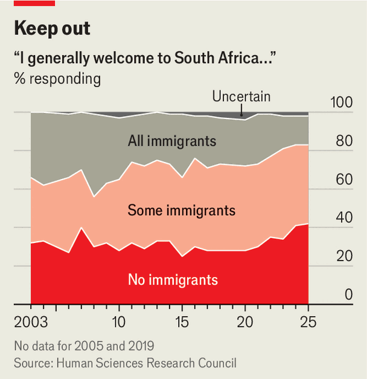
“伊迪·阿明的乌干达风格”，南非作家弗雷德·库姆洛说，指的是上世纪70年代将亚洲裔居民驱逐出东非国家的排外运动。民兵组织不仅反映了，还加剧了公众的排外情绪。2025年，由国家资助的人文科学研究理事会（HSRC）对南非民众的调查发现，42%受访者希望“完全排斥移民”，这是自2003年调查启动以来最高比例（见图表）。持“欢迎所有移民”态度的受访者比例从2008年的峰值43%降至2024和2025年的15%。另一项国际社会调查计划（ISSP）2023年调查显示，70%和74%的南非人分别认为移民会抢走工作机会并引发犯罪（除俄罗斯人外，这是29个被调查国家中最高比例的认同）。■
经济学家普遍认为，移民并非南非高失业率和犯罪率的罪魁祸首。世界银行和经济合作与发展组织的研究显示，外国移民是净就业创造者，因为他们创办企业并增加消费者需求。非政府组织赫伦·苏兹曼基金会（Helen Suzman Foundation）指出，外国移民的犯罪率平均低于南非本地人。人口普查数据显示，约5%的人口为外国出生，这一比例近年来变化不大。那么为何反移民情绪却骤然上升？可能是因为相关研究已过时，或未能涵盖非法移民及非正式经济领域的影响，许多非洲移民在此类领域从事农业劳工或保姆工作。南非人文科学研究所（HSRC）的数据表明，反移民观点在最贫困群体中尤为固化。■
贫困地区的现实可能正被研究人员忽视。但舆论也在被一些将非洲人作为替罪羊的运动所塑造，这些运动包括线上和线下活动。莫尔默智能（Murmur Intelligence）数据公司分析师凯尔·芬德利（Kyle Findlay）指出，曾参与"奥佩拉·杜杜拉"（Operation Dudula）行动的许多线上活动人士，于2026年重新活跃。许多政客也采取了强硬的反移民立场。由约翰内斯堡前市长领导的行动南非党（ActionSA）已接纳"奥佩拉·杜杜拉"成员作为11月地方选举候选人。爱国联盟领导人加伊顿·麦克肯齐（Gayton McKenzie）——同时也是联合政府内阁部长——曾多次发表煽动性言论，针对移民。由祖马（Zuma）于2023年创立的民族之矛（UMkhonto weSizwe，MK）支持"马奇与马奇"（March and March），其抗议活动包括公开展示祖鲁民族主义。■
HSRC民调显示，南非九省中，夸祖鲁-纳塔尔省（KwaZulu-Natal）对移民的反对最为强烈，这里是祖鲁族的发源地。安全机构似乎比2021年更准备应对6月30日的事件。6月7日，总统西里尔·拉马福萨表示抗议者“应被倾听”，但不能自行执法。警方及在2021年发挥关键作用的私人安保公司预计热点区域将再度出现。警察部长已取消所有假期，并表示如需将动用军队。然而即便当天破坏程度降低，南非的国际形象仍受损。多国已组织遣返航班或巴士行程，以确保本国公民安全。非洲人通常在世界杯上支持其他非洲国家，但对南非缺乏泛非支持。■
肯尼亚队在首场比赛失利后，一名肯尼亚人在X平台发帖表示：“希望南非队不要将2比0的失利和两张红牌归咎于非洲移民。” ■ 注册《非洲观察》周报，获取关于世界最年轻、最不为人知的大陆的最新资讯。
§032 中世纪风格的防御工事重现撒哈拉以南非洲原题：Medieval-style fortifications are back in the Sahel · 板块：Middle East & Africa · 栏目：中东与非洲
如今，贝宁城周围曾经环绕的城墙、护城河等防御工事已所剩无几。然而，这些巨型土建工程——仅次于中国长城的人工建筑——曾数百年间彰显着一个强盛文明的统治力，其影响力曾覆盖西非大部分地区。按前殖民时期的非洲标准，贝宁政权堪称异常强大：在单个旱季内修建这些城墙可能需要动员多达5000人，每人每天工作10小时。
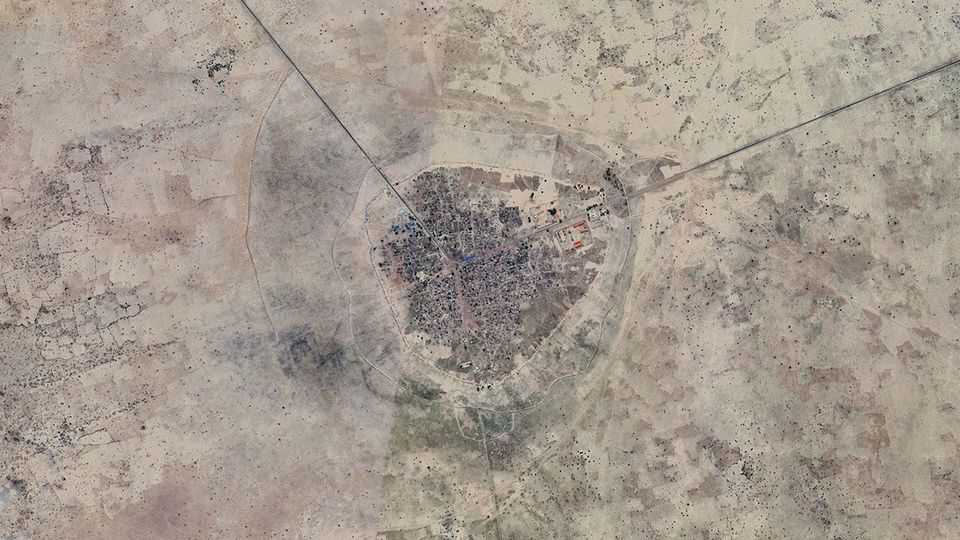
随着帝国逐渐衰落并在19世纪末被英国入侵者征服，大部分土垒工事消失殆尽。西非许多其他要塞城镇的防御工事也相继消失。如今这些工事却重现人间。自2010年代中期以来，随着极端分子武装在尼日利亚北部和萨赫勒地区蔓延，城镇和城市周边开始出现防御性土垒工事。许多工事规模庞大，在卫星图像中清晰可见。佛罗里达大学地理学家奥利维耶·瓦尔特（Olivier Walther）和史蒂文·拉迪尔（Steven Radil）的新研究显示，尼日利亚东北部所有人口超过1万的城镇如今均被战壕环绕。该地区多数主要城镇及乍得湖流域城市周边均建有高达三米的沙丘堤坝。与昔日本杰明帝国的工事不同，这些新筑的城墙和护城河恰恰反映了国家力量的衰弱。■
尼日利亚军队在2014年臭名昭著的“奇布克少女”遭极端分子绑架事件后，开始在美国政府协助下挖掘战壕。参与该项目的美国承包商称，此举旨在保护平民并“守住防线”以抵御极端分子的进攻。萨赫勒地区的武装分子通常使用摩托车或皮卡等轻型车辆发动袭击，战壕和土堤是一种简单且低技术手段，可有效延缓其行动。布基纳法索、喀麦隆、乍得、马里和尼日尔等国政府随后效仿。2024年，至少133名平民在布基纳法索遭极端分子杀害，当时他们正应武装部队要求在巴尔萨洛戈镇周边挖掘战壕。这不仅限于城市和城镇。■
区域各国政府因看重所谓快速解决安全威胁的方案，正强化其控制下的各类资产，从电站和政府办公楼到医院和学校。多哥在与布基纳法索和贝宁接壤的部分边境挖掘了超过36公里的战壕，以阻止武装分子跨境渗透。但从长远来看，这种做法可能反而让大量乡村地区落入叛乱分子之手。沃尔瑟先生指出，撒哈拉以南地区如今呈现出“由安全岛屿组成的群岛，被不安全海域包围”的景象。在非洲历史上，大部分时期国家政权薄弱，难以控制分散且流动性强的人口。如今撒哈拉以南地区的局势，正越来越像其历史上的一个剪影。■ 注册《分析非洲》电子周刊，获取关于世界最年轻、最不为人知大陆的最新动态。
§033 俄罗斯对克里米亚的征服正演变为一场致命的混乱 欧洲原题：Russia’s Crimean conquest is turning into a deadly mess · 板块：Europe · 栏目：欧洲
6月21日凌晨，费奥多西亚（Feodosia，克里米亚半岛东海岸的旅游胜地）并未响起警报声。只有无人机嗡嗡声和爆炸声在数分钟后传来。警报系统早在一段时间前就被关闭，不是因为半岛安全，而是因为“警报声每天要响22小时，没人能睡得着”，一位地方官员最近在广播中告诉听众。居民们怀疑当局更担心的是破坏旅游季，而非他们的休息。
维持正常状态的假象正变得愈发艰难。克里米亚已持续数月遭受袭击：军事单位、火车站、发电厂乃至住宅楼都成为攻击目标。雅尔塔（Yalta）是个例外，它被茂密的山脉环绕，没有军事目标。那里孩子们从码头跳入海中嬉戏，海滩几乎看不到空置的躺椅。但克里米亚其余地区已沦为战区。6月20日晚，乌克兰无人机袭击了输电线路，炸毁了刻赤（Kerch）的石油终端，并损毁了一艘运输货物的渡轮——这是近期针对渡轮的数起袭击之一。渡轮航线已全面停运，切断了半岛主要物资运输通道。目前货车仅能通过顿涅茨克（Donetsk）、扎波罗热（Zaporizhia）和赫尔松（Kherson）地区的高速公路进入半岛。■
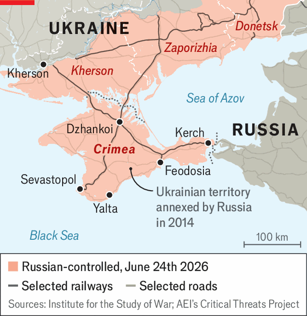
但陆路走廊正日益受到乌克兰无人机的威胁，沿途废弃车辆的痕迹证明了这一点。上周，乌克兰国防部长米哈伊洛·费多罗夫（Mykhailo Fedorov）表示，克里米亚“实际上可能成为孤岛”。该半岛的停电现象正变得愈发频繁。6月21日，克里米亚行政长官宣布了迄今为止最严厉的措施：暂停所有加油站的燃油销售。（行政上独立的塞瓦斯托波尔市则于6月22日和23日实施禁售令，可能进一步延长。）与此同时，乌克兰无人机已将战争深入俄罗斯本土。过去数日，它们袭击了西伯利亚的炼油厂，并在莫斯科造成戏剧性影响。6月16日和18日，莫斯科遭袭后，浓烟直冲居民区上空；一段爆炸将油罐顶盖掀飞至高空的视频在社交媒体上疯传。■
俄罗斯超过一半的地区正在实行汽油配给制度。对克里米亚的袭击尤其引人注目。克里米亚是俄罗斯的桥头堡和军队的补给基地，尽管乌克兰无人机袭击迫使黑海舰队残余力量撤往更远的港口。它还具有巨大的精神意义。俄罗斯在2014年几乎不流血的占领该地区，是弗拉基米尔·普京帝国野心的辉煌时刻，也极大提升了其人气。作为俄罗斯和苏联帝国的瑰宝，它象征着该国的复兴。当时普京称其为“俄罗斯多面而统一的民族形成的精神源泉”。他近期对乌克兰袭击的表态寥寥无几，国家媒体也保持沉默。克里米亚人不仅失去了汽油和电力，更失去了对国家解决问题能力的信心。■
一位当地母亲解释道，普通民众突然感到脆弱。谈话间不断传来自动武器的枪声，移动防空部队正试图击落无人机。她的14岁儿子因创伤而想离开，但她告诉儿子，作为克里米亚鞑靼人（该地区原住民），他们必须留下：“这是我们的唯一家园。” 除了鞑靼人外，半岛居民中只有少数人抵制吞并。许多人，尤其是记得苏联时代的退休人员，反而欢迎这一举动：俄罗斯承诺投资和更多社会福利。十年前，塞瓦斯托波尔的商人曾计划以海军基地为中心重塑城市，发展葡萄酒酿造、商业港口或开采加密货币。■
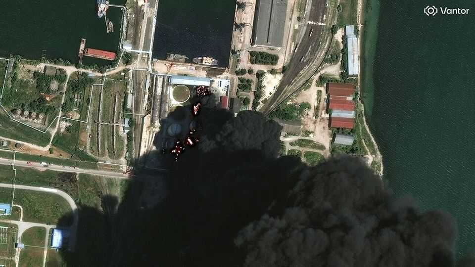
“人们已看不到未来的任何希望，”居民尼古拉·切斯季亚科夫表示。“有钱人正试图在俄罗斯其他地区购置房产并迁出家庭。”尽管塞瓦斯托波尔已空无一人，但沉睡的铁路小镇扎金科伊却日益繁荣。这里曾是乘客前往海滨度假胜地途中购买哈密瓜的中转站，如今却成为军队向赫尔松地区推进的中转基地。士兵们住满了酒店，带动了当地商业。“谢天谢地，军队来了，”经营烤肉店的米哈伊尔表示，“士兵们来这儿放松，生意很好。”但缺点是扎金科伊已成为目标。最近一次无人机袭击造成一列乘客列车数名平民受伤，另有五人在无人机击中住宅楼时遇难。■
乌克兰的袭击削弱了克里米亚居民对军队保卫能力的信心，但并未动摇他们对俄罗斯的忠诚。一些人将乌克兰可能的回归视为噩梦：乌克兰官员曾威胁要进行报复。他们还担心被其他居民指责不忠。克里米亚的国家反间谍宣传比别尔哥罗德或库尔斯克等前线地区更为激进。“为敌人效力？准备出卖祖国？等待上级指示？那我们就要来抓你了！”克里米亚广播在名为《同志，科马列夫同志，请调查》的节目中宣布。任何在公共场所拍照或提问的人都被视为潜在间谍。■
一位居住在刻赤的居民本月因拍摄并转发了一辆油罐车照片而被拘留，可能面临叛国罪指控。克里米亚并非俄罗斯唯一出现对战争不满情绪上升的地区。该国执政精英阶层中越来越多的人认为这场战争已陷入死胡同。政府关于顿巴斯地区长期僵持局面将在今年春天转变为俄军快速推进的承诺，与以往一样已成空谈。乌克兰对圣彼得堡和莫斯科炼油厂的高调袭击行动，迫使普通俄罗斯人直面战争后果。安全机构制造的网络封锁已干扰民众日常生活。国家统计局近期民调反复显示普京支持率持续下滑；尽管数据不可信，但下降趋势具有警示意义。■
俄罗斯统一俄罗斯党（United Russia）于五月底秘密开展的焦点小组调查显示，多数参与者希望战争尽快结束，无论俄罗斯是否取得胜利。总统面临的最大问题并非伤亡人数上升、俄罗斯经济受损或镇压加剧，而是他无法向民众展示战争成果。失败与软弱的感知正在削弱他的合法性。俄罗斯历史表明，被视作软弱的领导人鲜有被原谅。目前，克里米亚及俄罗斯各地的主要情绪是疲惫。即便支持俄罗斯的人，也难以看到战争的意义。“我们不需要任何宏大的野心，也不需要任何人试图改善现状。我们只想每天看到太阳升起，夏天有游客来观光，”费奥多西亚的导游塔季亚娜说，“我们已经厌倦了所有其他事情。” ■
要了解欧洲最重要的新闻，请订阅我们的周度专属通讯《Café Europa》■
§034 法国南部正在试验极右翼统治模式原题：France’s south is testing out hard-right rule · 板块：Europe · 栏目：欧洲
尼斯海滨是自恋者与海景的双重胜地。肌肉发达；狗儿娇小。超级游艇在海湾漂浮。简而言之，这并非引发民粹主义愤慨的显眼地点。然而今年三月，法国第五大城市被与玛丽娜·勒庞的国民联盟（RN）结盟的政党攻占，成为其迄今最大胜利。尼斯暗示了民族主义右翼如何征服法国南部，并如何期望在明年四月的总统选举中赢得全国。今年地方选举中，多数大城市的左翼或绿党保持或赢得了控制权。
法国南部部分地区对国民联盟（RN）的扩张进行了有限抵抗，包括马赛和土伦。尼斯成为民族右翼的重要胜利，因其规模和地理位置。国民联盟（RN）及其盟友如今掌控着法国南部广阔地带的中等规模市镇政府，包括普罗旺斯地区的贝亚尔、卡尔普特拉斯和奥朗日，里维埃拉地区的蒙特利尔，以及西南部的卡尔卡松和佩皮尼昂。新任尼斯市长埃里克·西奥蒂曾脱离中间偏右的共和党，创立自己的政党并与国民联盟（RN）结盟，他承诺加强安保、削减浪费并开启新篇章。卸任的中间派市长克里斯蒂安·埃斯特罗西任职长达17年。西奥蒂强调治安的强硬承诺引起共鸣。远离海滨鸡尾酒会酒吧，被机场和高速公路环绕的莫林斯区则遍布着广阔的住宅区。■
今年5月，一名持突击步枪的男子在该地枪杀了两名旁观者。过去两年间，毒品帮派间的火并已导致11人死亡。基蒂（Ciotti）先生在案发现场附近开设了警察哨所，承诺到2027年将城市本地警察人数增加50%。然而尼斯事件揭示了另一层含义：国民联盟（RN）崭露头角的选举策略。该策略由党魁乔丹·巴德尔拉（Jordan Bardella）主导，将传统工人阶级选民与自由派中产阶层选民结合。这种策略在尼斯及其他南部城镇奏效，这些地方历来倾向右翼，且退休人员比例较高，同样倾向右翼。基蒂打破了此前使RN难以触碰的隔离圈，但谨慎地平衡了与温和地方名流的联系。“我们才是真正的右翼政党。”他坚持道。■
这是一条带有民粹主义色彩的自由财政政策——“法国靠税收赢得世界杯”，他抱怨道。基蒂（Mr Ciotti）承认钦佩阿根廷的贾维尔·米莱（Javier Milei）及其“电锯式”改革，并开始高调抨击地方议会的挥霍浪费。在尼斯，富裕家庭与预算紧张的家庭共存。基蒂将强硬的反移民民族主义与削减地方议会公务用车和宴会预算相结合。在法国南部地区，这种政治表现形式有所不同，因为国民联盟（RN）在此有长期历史。上世纪80年代，让-马里·勒庞（Jean-Marie Le Pen，勒庞夫人之父，该党创始人）在该地区得票率便突破双位数，这在一定程度上源于北非移民涌入引发的排外情绪。在尼斯大区，17%人口为移民，而法国全国平均水平为12%。身份政治是普遍主题。■
贝卡莱是普罗旺斯地区一座以封闭立面建筑为主的小城，中世纪堡垒和水泥厂主宰着这里的天际线。在国民联盟执政12年期间，镇厅只悬挂法国三色旗（而非欧盟旗帜），并以毫不掩饰的基督教色彩复兴民间传统。去年，该镇因拒绝拆除圣诞场景被罚款12万欧元（约合13.6万美元），此举违反了法国世俗主义法规中禁止在公共建筑内展示宗教装饰的规定。本月，贝卡莱举办了为期两天的“传统周”活动，包括普罗旺斯舞蹈表演，所有市民均可免费入场。居民似乎普遍支持本地化：花盆种植、清洁人行道、儿童暑期活动。一位市集橄榄酱摊主表示：“贝卡莱发生了翻天覆地的变化，这里干净，没有毒贩，每个人都能参与活动。”前市长朱利安·桑切斯（Julien Sanchez）现已成为国民联盟的竞选主任。■
格拉斯哥大学的弗雷德·帕克斯顿和蒂莫西·皮斯对国民联盟（RN）治理模式的研究称这种做法为“民粹实用主义”，是将该党纳入国家主流战略的一部分。国民联盟在城市治理中引发了诸多争议。包括卡尔卡松在内的多个新任国民联盟市长已停止悬挂欧盟旗帜，许多地方削减了对人权组织和移民援助团体的补贴。卡尔卡松还出台了禁止乞讨的规定。在卡尔邦特拉斯，5月8日通过市政广播播放了一首与维希政权（纳粹合作者）相关的歌曲，该市国民联盟市长否认对此负责。国民联盟及其盟友在南部并非不可阻挡。马赛后，左翼在艰难左翼退出与勒庞候选人对决的决选后重新夺回控制权，展现了左翼团结的价值，而这种团结却令全国领导人难以企及。■
但该地区如今聚集了大量极右翼实验场，将测试其领导人的能力——以及毒性。■ 要掌握欧洲最重要的新闻，请订阅我们的周度专属简报《Café Europa》。
§035 为何德国城市濒临破产 欧洲 破败的学校，空荡的财政原题：Why Germany’s cities are going broke · 板块：Europe · 栏目：欧洲
对于访客来说，因戈尔施塔特的繁荣景象并不难察觉。这座巴伐利亚州的中等城市处处可见奥迪的踪迹：在市政厅附近的奥迪健康保险展位、汽车制造商的宏伟博物馆，或是其夏季音乐会季的广告。与当地人交谈，很可能他们本人或亲属在奥迪工厂工作——这家企业在此地雇用了40,000人。奥迪的成功推动因戈尔施塔特从二战后仅有3万人口的沉寂小镇发展到如今的14.5万人。
奥迪的困境——利润和劳动力都在萎缩——解释了为何这座城市陷入深坑。仅数年内，商业税收入减半，这主要归因于奥迪及其母公司大众的困境。压力之大，以至于今年年初上巴伐利亚州政府拒绝了因戈尔施塔特的预算提案，禁止该市进行新投资。标志性项目如城市著名粗暴主义剧院建筑的翻新被搁置。因无力修缮，一所破旧学校不得不将学生转移。因戈尔施塔特市长迈克尔·肯恩表示：“奥迪对我们的城市是福也是祸。”市政融资的波动性已将许多德国城市的命运与本地企业紧密捆绑。■
在经济繁荣时期，一些地方靠产业发家：一个拥有戴姆勒工厂的小镇（位于斯图加特附近）曾用卡拉拉大理石铺装人行横道。但一旦产业遇冷，城市便陷入困境——如今，这一危机已不再局限于后工业时代的地区如鲁尔区或萨尔兰州。德国富裕的巴登-符腾堡州的城镇也未能幸免，汽车业的困境重创了这些地方。路德维希港（德国最负债严重的城市之一）的困境，与当地化工巨头巴斯夫（BASF）的困境如出一辙。就连经济基础更为多元的城镇也正直面深渊。几乎没有地方能逃脱收入增长跟不上支出激增的财政陷阱。德国 Bertelsmann 基金会最新报告指出，去年德国约1万多个市镇的预算赤字达到创纪录的320亿欧元（约合360亿美元），仅一年时间就激增近30%（见图表1）。几乎所有地方都预计这一趋势将加剧。■
雷内·盖斯勒（René Geissler）是魏尔达大学应用科学学院公共管理学教授，他表示，当前危机是联邦共和国历史上最严重的。他列举了三个因素：飙升的通胀，尤其是建筑领域；人力成本；以及德国联邦议院（Bundestag）通过的苛刻法律，特别是涉及青年和残疾人福利的法规，地方政府必须满足这些法律要求。如今，强制性支出已占因戈尔施塔特（Ingolstadt）预算的80%，迫使地方政府大幅削减酌情支出。在较贫困的城镇，压力更大。盖斯勒教授表示，他预计压力巨大的地方政府将采取隐性削减措施以平衡预算。后果无处不在。拜罗伊特（Bayreuth）已取消纪念理查德·瓦格纳（Richard Wagner）首次音乐节150周年的庆典活动。柏林（Berlin）一些财政紧张的区正艰难应对有毒毛毛虫的入侵。■
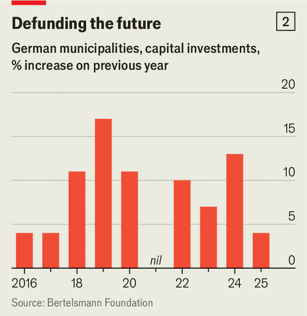
如同临近发薪日急于典当首饰的工人，一些城市已转向Kassenkredite（短期贷款）来支付账单。德国各地学校、道路和运动场馆正因资本支出被踩刹车而陷入破败（见图表2）。地方市政投资积压金额目前已达创纪录的2310亿欧元。德国市长们形容形势“距午夜仅剩三分钟”，6月22日，各地市长举行公开活动宣布已濒临极限。奥芬巴赫市财政官马丁·威廉姆斯表示：“我们今年还能撑过去，但明年起许多城市将陷入困境。”该如何应对？地方政府希望联邦政府遵守“谁下令、谁付费”的原则，即为任何由他们承担成本的新法规提供资金。缺乏应急储备金的地区也要求获得300亿欧元的短期纾困资金。
联邦政府自身也陷入财政困境，提供的援助寥寥无几。但形势之严峻，德国城市事务研究所公共财政专家亨里克·施勒尔（Henrik Scheller）表示，援助可能在今年晚些时候到来。若不然，“我们可能会看到一种革命。” 这种局面在因戈尔施塔特（Ingolstadt）似乎并不迫近。但当地一对夫妇米歇尔和克里斯蒂安却注意到一些衰败迹象，从图书馆向市民募捐到城市节庆活动资金被削减。其他地区则担忧公共领域持续恶化可能助长德国极右翼政党“德国另类选择党”（Alternative for Germany）的声势。因戈尔施塔特教育与文化部长马克·格兰蒙塔涅（Marc Grandmontagne）表示：“每座未在三年内修缮的漏水校舍都会助长右翼民粹势力。” 或许这将促使柏林政府重新审视问题。■
订阅我们的每周专属新闻通讯《Café Europa》，掌握欧洲最重要的新闻动态。■
§036 彼得·马扎尔欲重燃匈牙利民主原题：Peter Magyar is trying to fire up Hungarian democracy · 板块：Europe · 栏目：欧洲
欧洲
彼得·马加尔（Peter Magyar）在5月初上任时面临两项交织的任务。其一是重建匈牙利作为完全民主国家和可靠欧盟成员的身份，其二是解冻欧盟冻结的数十亿欧元资金，这正是匈牙利疲弱经济亟需的资源。这些资金被冻结的原因是欧尔班（Viktor Orban）执政期间屡次违反法治原则。马加尔正迅速推进这两项工作。
6月22日，他在议会宣布启动“净化之火行动”：一项宪法修正案，旨在包括但不限于罢免奥班总统的忠实支持者、总统塔马斯·苏利奥克（任期至2029年）和宪法法院院长彼得·波尔特。他还公布了新宪法草案。马加尔承诺要“让国家摆脱经济与政治黑帮”。该修正案重新引入宪法法院15名法官强制退休年龄70岁的规定，这意味着70岁的波尔特及另外三人须立即辞职。法案将限制议员任期至12年，并设立国家资产追回机构以追责奥班政权滥用公共资金的行为。马加尔称腐败每年使匈牙利人损失8%-10%的GDP；经济学家认为难以准确估算，但普遍认为损失相当可观。■
“我认为匈牙利避免宪法危机的可能性更大了，”匈牙利人丹尼尔·赫盖杜什（Daniel Hegedus）表示，他目前担任柏林欧洲政治研究所副所长。马加尔（Márton György Magyar）上任后，要求总统、宪法法院法官、总检察长、竞争和媒体监管机构负责人以及审计署负责人于5月底前辞职。这些人均是欧尔班（Viktor Orbán）的盟友，拒绝辞职。因此，马加尔采取了更具争议性的手段清除欧尔班的亲信。其所属政党在议会拥有三分之二多数席位，可推动宪法修正案。他提出的修正案规定，该法案生效次日总统任期即告结束。这是马加尔的第二项宪法修正案。6月15日，议会通过另一项修正案，限制总理任期不超过八年。■
奥班（Orban）曾于1998年至2018年执政20年，如今将无法参选。这位前领导人正自食其果：他常利用自己政党获得的超级多数席位修改宪法。欧洲改革中心（Centre for European Reform，总部位于伦敦）的齐斯莱克·卡西（Zselyke Csaky）表示：“从法治角度看，旨在迫使官员下台的修宪举措并不理想。”支持马加尔（Magyar）的人认为，使用奥班政权留下的工具箱是恢复民主、重获欧盟资金的必要手段。5月29日，欧盟委员会主席冯德莱恩（Ursula von der Leyen）批准了从欧盟新冠复苏基金和凝聚力基金中临时释放164亿欧元（约合186亿美元）的援助贷款。■
释放条件取决于匈牙利完全达成27项里程碑，包括修订公共采购规则、出台新反腐败措施以及强化学术自由。解除总统和高级法官职务并非其中一项里程碑。但此举应表明奥尔班（Orban）对匈牙利国家的控制已结束。下一步将举行全民公投，该公投将在全国咨询期后对新宪法草案进行表决。新宪法可能使修宪更困难，例如要求连续两届议会批准。这将阻止下一届大选获胜的政党改变游戏规则。■ 为掌握欧洲最大新闻动态，订阅我们的周度专属新闻通讯Café Europa。
§037 特朗普与梅洛尼：欧洲夏日纷争原题：Both Donald Trump and Giorgia Meloni are begging for trouble · 板块：Europe · 栏目：欧洲
梅洛尼内阁数位部长将于7月2日出席罗马美国大使馆举行的庆典活动，纪念美国建国250周年。但气氛或许并不轻松。上周梅洛尼总理与特朗普总统的争执导致其外长取消了赴华盛顿的访问。6月24日，其国防部长又试图反驳北约秘书长马克·吕特（Mark Rutte）的言论，称意大利（尽管否认）在伊朗战争中允许美军使用其空军基地。■
这一切凸显了梅洛尼女士的两难处境：既要维持与美国的关系，又要疏远特朗普以争取意大利民众的支持。民粹右翼领导人之间的矛盾始于6月19日，当时特朗普指责梅洛尼女士在最近的七国集团峰会上乞求与他合影。她随即以一段充满激情的视频回应，称：“我与意大利从未乞求过什么。”特朗普早已对梅洛尼女士拒绝公开支持对伊朗的军事行动感到恼火。当他在回应她的视频时声称她失去人气，她立刻反击道：“我的人气与你无关，我建议你先关注自己的。”显而易见的解释是恼怒。意大利总理比其他欧洲国家领导人更执着地坚持“西方”理念，以及总统屡次削弱的跨大西洋联盟。■
特朗普可能也触动了真正的敏感点。意大利将峰会视为修复与美国关系的机会，此前两国关系因总统与教皇莱奥的冲突而受损。很难想象梅洛尼女士会低声下气地请求。但或许有负责拍摄合照的助理过度表现。冷嘲热讽的解释是，梅洛尼女士的不满是刻意为之。她最大的难题是新兴右翼政党——比她领导的意大利兄弟党更为极端的未来意大利党（Futuro Nazionale）的崛起。该党由退役将军罗伯托·瓦纳奇领导，正迅速获得支持——或许已超越其联盟伙伴联盟党（League），后者在民调中已跌至约6%。为了遏制瓦纳奇，梅洛尼可能不得不采取强硬右翼立场，而这又会疏远那些在2022年大选中追随她的主流保守派选民。■
她对特朗普的回应使这位首相无法被指责未能捍卫国家的尊严，也赢得了那些憎恨美国总统的意大利民众的敬意。她或许希望借此让内阁官员们有机会私下与美国人共饮独立日啤酒。但鲁特的不谨慎却重新点燃了争议。■ 要掌握欧洲最大新闻动态，请订阅我们的周度专属简报Café Europa。
§038 欧盟的节奏实在太慢了原题：The EU is just too damn slow · 板块：Europe · 栏目：欧洲
2025年7月，美国与欧盟达成了一项不对等的贸易协议，该协议在唐纳德·特朗普（Donald Trump）位于苏格兰的特恩伯里高尔夫球场（Turnberry golf course）签署。至9月，华盛顿的官方机构已完成了必要的文书工作。但布鲁塞尔的欧盟体系却让这一过程变得更为复杂。欧盟委员会提出了两项立法提案，欧洲议会发布了报告，随后欧盟27个成员国在如何与议员联合谈判的问题上展开磋商。会议接连召开，新闻稿陆续发布。直到十个月后的5月，欧盟内部各机构之间举行的所谓“三边会谈”（trilogue）才初步敲定协议。■
欧洲议会随后迁往其第二驻地斯特拉斯堡（最好别问为什么）进行投票。如今只剩一些部长签署、几则新闻稿，以及将整份文件翻译成欧盟24种官方语言。所有参与方似乎都对“仅”用了一年多时间就完成此事感到满意。慢节奏生活是欧洲魅力的一部分。那些漫长的午餐和无休止的暑假，与大教堂和脾气暴躁的侍者一样，都是这里不可或缺的元素。遗憾的是，这种“甜蜜生活”的理念也延伸到了政策制定中。在贸易协议案例中，迫使特朗普无所事事——他气愤地威胁要取消协议，除非欧盟加快进程——或许是个特点而非缺陷。但其他欧洲倡议却毫无理由地进入了第二个十年的孕育期。反复斟酌是一种美德。■
欧洲常常显得在固执己见的自我阻碍中前行。欧盟并非只是将政策提案拖延，而是将其置于官僚主义的黑洞中。什么能出台、何时出台，全凭偶然。一项最近通过的航空乘客权利修订案，经历了长达13年的立法审议。所谓“资本市场联盟”——旨在让公民储蓄更便捷地流向欧洲企业——如今似乎与2015年首次提出时相比，进展几乎毫无差别。更普通的举措也可能拖延数十年。一项要求企业统一在欧盟层面注册而非各国分别注册的方案，早在1988年便首次提出。欧盟委员会主席乌尔苏拉·冯·德莱恩（Ursula von der Leyen）于2025年1月在达沃斯再次推动该计划，2026年1月又重复了同样的动作。■
即使未来不可避免的三边会谈顺利进行，该计划也需再等两年才能生效。一些地区的进展更快。延误削弱了欧盟精心制定的计划的效用。在大多数国家，与新冠疫情相关的经济刺激计划已成为遥远的过去：资金在数月内便已发放完毕，而此时正是需要财政力度应对经济衰退的关键时刻。在欧盟则不然。在那里，新冠疫情的经济刺激资金仍在持续发放。这并不令人意外，因为该计划涉及从布鲁塞尔到国家政府和地区的三重行政层级。任何涉及资金的事务都会让布鲁塞尔陷入停滞。欧盟预算每七年制定一次，但达成一致却需要七年的一半时间。如此微不足道的资金——仅占GDP的1%左右——却让如此多的各方为此争论如此之久，实属罕见。■
部分政策制定的迟缓是系统性设计的结果。布鲁塞尔的欧盟机构承担着类似国家政府的诸多职责，却采用国际组织的运作方式。否决权随处可见，无论是正式还是非正式形式。在每一个环节都需要耗费大量时间的“影响评估”程序。为确保各方充分表达意见（往往不止一次），一部法律从初稿到最终通过平均需要近两年时间。在许多情况下，欧盟层面通过的法规还需由各成员国议会转化为国内法律，这一过程通常又耗时两年。处理欧盟事务的法院效率低下：反垄断案件平均需43个月才能获得首次裁决，此时所谓违规行为早已被遗忘。■
旨在遏制贸易规则滥用的措施耗时过长，以至于启动它们往往显得毫无意义。一些人认为欧盟缓慢的应对方式除了让特朗普感到恼火外，还有其独特价值。的确，欧盟的决策机制如同缓慢爬行的共识机器。但与其仓促立法导致日后纠错，不如慎重制定法规。例如，美国匆忙通过的特恩伯里协议最终被法院部分推翻。然而，若欧盟自身近期也因过度监管的冲动而不得不废除大量繁琐规定，这一论点将更具说服力。就连当前简化现有法规的努力也陷入冗长的程序泥潭，欧盟的拖延作风已成难以承受的奢侈。■
过去在地缘政治相对平稳的时期，缓慢而稳定的策略曾奏效，那时美国确保欧洲安全，中国购买其出口商品，俄罗斯则陷入困境。如今世界变化速度远超欧盟的应对能力。其对手深知这一点。美国财政部长斯科特·贝森特（Scott Bessent）嘲讽“令人畏惧的欧洲工作组”，这个工作组总是在欧洲遇到问题时出现，讽刺意味十足。中国正在赢得一场欧洲尚未开始认真讨论的贸易战，并承诺很快再次讨论。欧洲唯一真正迅速的行动是援助乌克兰，自俄罗斯入侵以来，即便如此，2022年初期行动也迟缓。欧洲能否加快政策制定节奏？这似乎在欧洲官员即将夏季休假时提出是个奇怪的问题。■
显而易见的解决办法是让陷入僵局的项目在部分国家推进，这种做法正在资本市场联盟的建设中尝试。相较而言，重新审视欧盟宪法的方案显得不切实际，因为这需要耗费整整十年的讨价还价才能取得进展。欧洲曾经的深思熟虑看似明智，或至少站得住脚，如今却显得愚蠢。■ 《经济学人》订阅者可注册我们的观点通讯，汇集了最佳的社论、专栏、特邀评论及读者来信。
§039 全球变暖使欧洲热浪的强度加剧了2至4摄氏度原题：Global warming has made Europe’s heatwave 2-4°C worse · 板块：Europe · 栏目：欧洲
6月24日上午，伦敦政治经济学院（London School of Economics）的肖图书馆本应挤满讨论气候变暖影响的学者，作为伦敦气候行动周（London Climate Action Week）的一部分。然而计划未能实现。英国气象局（Met Office）仅第二次发布“红色预警”，表示气温高到即使健康人群也会面临风险。主办方决定取消会议——会议主题为“极端高温：改进治理与强化行动”。从质量上看，自6月18日开始的欧洲热浪并不罕见。
一个低压区形成的 horseshoe（Ω型阻高）正维持着大陆西部的高压区。该高压区近地面的空气来自东南方向，而非大西洋，因此初始温度较高。高空高压阻止了热量通过对流流失，而对流是形成云层的过程。云层的缺失让阳光进一步加热地表。从数据来看，这是一次异常高温（详见地图）。法国和西班牙大部分地区气温超过40°C（104°F）；英国虽未排除出现极端高温的可能性，但此前仅记录过一次。法国于6月24日创下了有记录以来最高气温，全国58个行政区域发布红色警报。意大利16个城市也同步发布红色预警。德国的高温纪录或于6月28日被打破。■
全欧洲各地学校停课、火车停运、电网不堪重负。为何一种普通的天气模式会演变成极端高温？显而易见的答案——由温室气体驱动的气候变化——是正确的。由法国皮埃尔-西蒙·拉普拉斯研究所联合组建的ClimaMeter机构快速评估显示，气候变化使此次热浪比20世纪下半叶相同条件下出现的高温高出2°C至4°C。关于全球变暖的讨论往往强调其对低纬度地区贫困和中等收入国家的影响，这种关注是合理的。这些地区经历的极端天气更为严重，而当地居民缺乏——甚至完全没有——适应所需资源。近期亚洲的热浪令人震惊。但高纬度地区升温速度更快。■
欧洲气温每十年上升0.56°C，是全球平均水平的两倍，且比任何其他大洲都快（见图表）。这主要源于气候变化的基本原理：在其他条件相同的情况下，极地地区的升温幅度将大于赤道地区，部分原因是随着全球变暖，极地冰层融化，导致反射阳光的冰面减少。欧洲地理中心位于维尔纽斯（Vilnius）附近，约北纬55度，比其他有人居住的大洲更接近极地。此外，欧洲的清洁空气使更多阳光能照射到地表。尽管许多地区空气污染正在下降，但欧洲的下降趋势持续时间更长，程度更深。气候变化可能也影响了omega blocks的频率。■
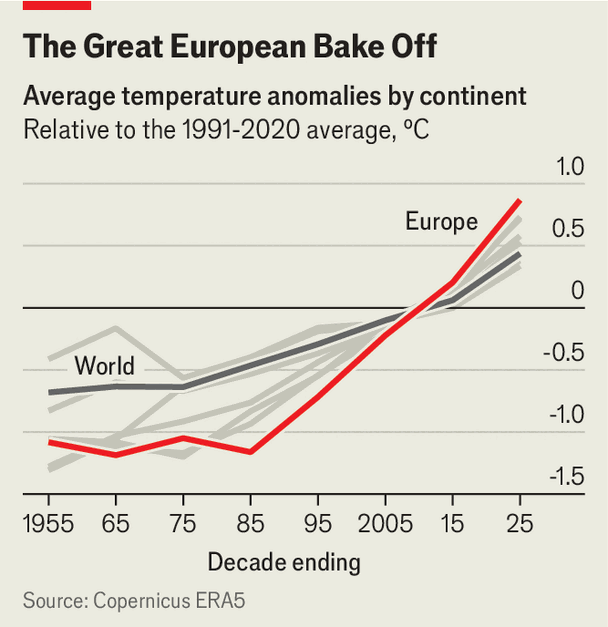
但帝国理工学院气候科学家弗里德里克·奥托（Friederike Otto）强调，关键在于这些模式现在可能导致的后果，而非它们发生频率的变化。“热浪正变得更为频繁、更为剧烈，且持续时间更长，”英国气象局的威尔·朗（Will Lang）表示。健康影响将十分严重。2003年热浪期间，16个欧洲国家共有超过70,000例与高温相关的死亡病例。2022年——当时是有记录以来欧洲最热的夏季——35个国家共有超过60,000例相关死亡。2023年虽未达到该水平，但估计死亡人数略低于50,000例。■
欧洲在保护自身方面已取得进步：由巴塞罗那全球健康研究所的埃丽莎·加洛（Elisa Gallo）及其同事于2024年发表的一项研究估计，若没有这些适应措施，2023年的死亡人数将达到约90,000人，80岁以上人群的死亡率将是当前的两倍。但若欧洲要降低气候恶化带来的风险，而不仅仅是应对现有风险，还需采取更多行动。■ 好奇世界？想享受我们拓展思维的科学报道，请订阅我们的周度专属新闻通讯《简明科学》。
§040 为拯救英国经济，安迪·伯纳姆需要更严厉英国《今日首相》原题：To save Britain’s economy, Andy Burnham needs to be tougher · 板块：Britain · 栏目：英国
英国 | 《今日首相》为拯救英国经济，安迪·伯纳姆需要更严厉，而不仅仅是基尔·斯塔默爵士的更精致版本。2024年，安迪·伯纳姆坦言自己更倾向于花钱而非储蓄，他更愿意说“是”。这种态度在担任大曼彻斯特郡市长期间很适合他，他的职责就是从威斯敏斯特挤出尽可能多的资金。但随着基尔·斯塔默爵士于6月22日辞职，新当选的Makerfield选区议员几乎确定将成为下一任首相。他将是自2016年以来的第七位英国首相。负责分配资金（并掌握核密码）的职位远比伯纳姆习惯的职位更具挑战性。首先，他必须开始说“不”。
本·伯纳姆无疑具备诸多优势。他未沾染政府失败的污点，且善于与人沟通。他的净好感度（-4个百分点）看似不佳，但比任何英国政党领袖（基尔爵士的为-45）都要好。工党议员们似乎将全力支持他，坚信他心怀善意，这一点缺乏激情的基尔爵士始终未能做到。更居中立场的竞争对手韦斯·斯特里廷已紧随其后。7月15日提名截止时，伯纳姆很可能无人竞争。这给伯纳姆争取巨大新职位的准备时间极为有限。他抨击过往政客的罪行。放松管制、私有化和去工业化只是他瞄准的抽象名词之一。但这位未来首相候选人对上任后具体将采取什么行动却语焉不详。
他含糊其辞地提到“对关键公共服务实施更强的公共管控”，却未明确具体含义。他在关键政策上反复无常，最近重新承诺支持基尔爵士的财政规则，此前却曾呼吁放宽以资助国防。他对人工智能带来的动荡等最紧迫议题保持沉默。解决英国根深蒂固的问题，需要持续聚焦未来而非1980年代。英国人对各党政府不满的主要原因在于生活水平停滞。自工党2024年上台以来，实际工资仅增长1%，自2008年4月以来仅微增4.5%（仅为美国工资增速的三分之一）。若人工智能取代大量构成英国经济支柱的白领知识型员工，未来或将面临更多挑战。■
低增长对英国日益恶化的公共财政同样不利。公共支出已从2019-20财年的GDP占比39%升至目前的45%。人口老龄化和国防开支增加可能进一步推高这一比例。税收收入（占GDP的37%）正难以支撑如此庞大的支出。增加借贷也无助于缓解问题。今年债务利息支出将达109亿英镑（143亿美元），超过教育预算。债券投资者对英国征收的利率高于其他所有主要富裕国家，稍有财政挥霍迹象便蜂拥而至。这些挑战虽非不可克服，但需采取大胆政策才能摆脱当前困境。这包括控制高昂的医疗和福利开支、对“净零”目标采取务实态度，以及削减阻碍建设的繁文缛节。斯特里廷中断的竞选计划已提出切实方案。■
如果布伦南任命他担任财政大臣，这将表明其愿意拥抱增长。问题在于这些政策与布伦南的本能相悖，而他的本能更倾向于爱德·米利班德（Ed Miliband，另一位财政大臣人选），后者观点更偏向国家主义。利用人工智能需要创造性破坏，让低效企业倒闭，释放劳动力转向更适应人工智能的工作岗位。布伦南似乎本能地反对实现这一目标所需的放松监管。他的盟友甚至呼吁比基尔爵士（Sir Keir）更严格的劳动者权益保护。这种错误的思维模式在其他领域也可见一斑。布伦南认为“规划改革被赋予了过多权重”，更倾向于推行昂贵的国家住房建设计划（他如何筹措资金尚不明确）。■
他希望重振制造业，这是一种浪漫化的想法，忽视了英国在服务业方面的比较优势。布鲁纳姆的财政直觉并不表明他愿意做出艰难抉择。相较之下，基尔的问题始于他接受个人利益，而布鲁纳姆的困境可能来自对他人过度施舍。6月19日集会上，他承诺将“降低水费、电费和铁路票价”。他声称通过将这些行业置于更严格的公共管控下可实现节省开支。但成本的上升源于改善破旧基础设施和实现碳中和目标的需要，而非所有权结构。实际上，降低费用只能通过减少投资（与他本人承诺相矛盾）或提高补贴来实现。
Burnham先生如何在增加国防开支的同时承担如此高额补贴仍不清楚。这位准首相承诺遵循Keir勋爵的竞选纲领，不提高就业税或增值税（是的！），同时希望保护三重锁定机制——一种昂贵的养老金上涨机制（是的！是的！是的！）。他甚至支持一些不值得的议题，比如那些几十年前就被告知养老金年龄将上调的女性抗议者（尽管他后来也撤回了这一表态）。唯一明确表示要削减开支的领域是工作年龄福利，但具体措施却语焉不详。Burnham先生的一些直觉值得欢迎。确实，他对北部地区的偏袒可能令人厌烦。■
他的一些区域政策，例如要求威斯敏斯特必须证明其决策始终能减少地区不平等，显得荒谬。但他正确指出过度集权是英格兰各地区发展的拖累，并推动更大程度的财政权力下放。他也有道理想要改革英国破败的财产税体系及其令人羞愧的社福照护体系（尽管他再次回避了阐述这将需要采取的痛苦措施）。首相职位是否能让伯纳姆更有担当？他任命托尼·布莱尔爵士政府中的务实老将詹姆斯·普内尔担任首席幕僚的举动预示着积极信号。下周他将发表一篇备受关注的经济演讲，借此阐述其政见。但如果这位喜欢说“是”的人未能做出必要的取舍，他只需看看基尔爵士的下场便知后果。■
如需获取更多关于英国重大事件的专家分析，请订阅我们的订阅制周报Blighty（《经济学人》周报）。■
§041 安迪·伯纳姆（Andy Burnham）何时达到巅峰原题：When will Andy Burnham peak? · 板块：Britain · 栏目：英国
“罗马得救了！”一名反对党议员在安迪·伯纳姆6月22日步入下议院时如此调侃。“把水变酒！”另一名议员说道，当时这位前曼彻斯特市长被宣誓为议员。“他不是救世主，”另一人嘲讽道。伯纳姆以俏皮的个人魅力（并巧妙引用了“蒙提·派森”剧集）回应：“调皮鬼。”他在6月18日的补选中获胜，成功进入议会。随着基尔·斯塔默爵士卸任，工党议员希望伯纳姆能接任，并在各自选区施展影响力。换马是常见策略。自1945年以来，英国18位首相中有10位是在大选期间接任的。■
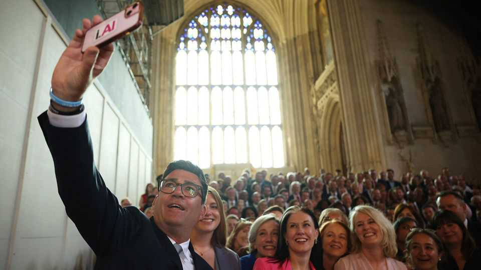
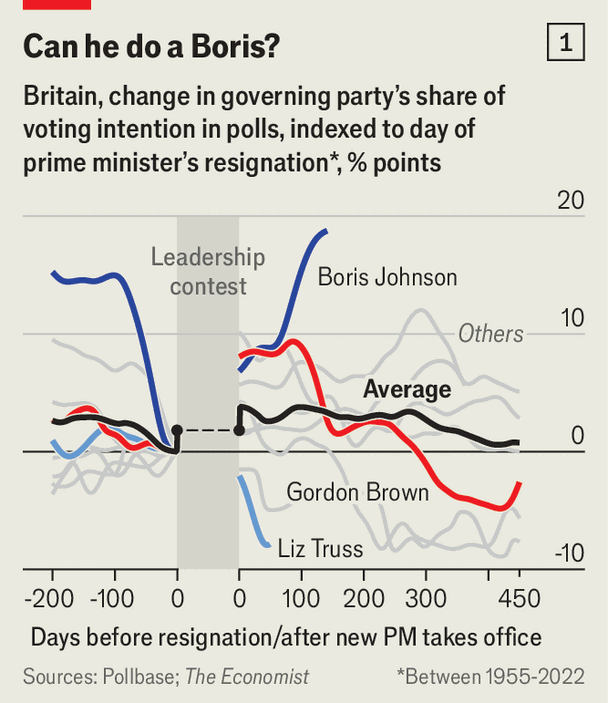
他们平均任职两年零324天，任期跨度从哈罗德·麦克米伦（近七年）到利兹·特拉斯（仅49天）。五位首相曾赢得大选（特雷莎·梅虽赢得选举但失去多数席位），四人则在任内遭遇大选失利（包括伯恩翰的前任上司戈登·布朗）。特拉斯在选举前辞职，但此后保守党已陷入困境。《经济学人》分析了自1955年以来的民调数据，发现执政党更换首相时平均民调反弹3.8个百分点（见图表1）。这在一定程度上是对卸任不受欢迎领导人（平均民调上升1.8个百分点）的奖励。1990年玛格丽特·撒切尔辞职时，保守党民调飙升10个百分点。当新首相上任后，执政党通常再增加2个百分点。■
但这些成果往往转瞬即逝——平均而言，新领导人上任后约400天内就会消失殆尽。2007年布朗接任托尼·布莱尔爵士时，工党民调支持率上升了9个百分点，但一年后却跌至比托尼·布莱尔离任时低5个百分点。目前布鲁纳姆已出现预警信号。在补选竞选期间，YouGov民调显示对他的负面评价比例从30%升至41%，其后他胜选后略有回落至38%（见图表2）。执政后他将面临与基尔爵士相同的困境，支持率可能骤降。或可效仿另一位魅力型前市长鲍里斯·约翰逊。2019年春季，梅夫人仍难以说服议员们支持她不受欢迎的脱欧协议，约翰逊被选中打破僵局并团结保守党选民。此举奏效。■
2019年5月特雷莎·梅（Theresa May）宣布辞职至同年12月大选期间，保守党的支持率从略超20%飙升至44%，足以赢得压倒性胜利。若Burnham能团结左翼，他或可复制这一策略。■ 如需获取更多关于英国重大事件的专家分析，请订阅我们的周报Blighty。
§042 英国可能下一任领导人的童年故乡 沃灵顿：一个繁荣小镇 6月25日 2026年 英国 | 一个繁荣小镇 英国可能下一任领导人的童年故乡 沃灵顿不如曼彻斯特光鲜亮丽，却更显奇特 6月25日 2026年 安迪·伯纳姆（Andy Burnham）凭借在大曼彻斯特市长任内的表现，成功进入威斯敏斯特原题：Lessons from the childhood home of Britain’s probable next leader · 板块：Britain · 栏目：英国
英国可能下一任领导人的童年故乡 沃灵顿：一个繁荣小镇 6月25日 2026年 英国 | 一个繁荣小镇 英国可能下一任领导人的童年故乡 沃灵顿不如曼彻斯特光鲜亮丽，却更显奇特 6月25日 2026年 安迪·伯纳姆（Andy Burnham）凭借在大曼彻斯特市长任内的表现，成功进入威斯敏斯特。然而，他的口音表明，他并非曼彻斯特人。他成长于几英里西边，位于一个截然不同的英格兰北部小镇，这个小镇值得更多关注。沃灵顿并非光鲜之地，没有摩天大楼，规模较小，约有21.5万居民。当地人喜欢这种状态。“他们不希望我们变得太大，成为一座城市，”工党领导的区议会主席汉斯·门德里（Hans Mundry）说道。
沃灵顿镇足球俱乐部征战英格兰足球联赛第七级别（其橄榄球联盟队实力远胜）。2015年，皇家艺术学会在325个城镇中将该镇列为文化设施最匮乏的末位。愤怒的沃灵顿居民指出，英国首家宜家家具店在此开业，但这一论点并非完全有说服力。尽管如此，该镇仍表现出色。人均GDP比英国平均水平高出三分之一，且自2010年以来增长速度更快（见图表）。该镇通过推行与伯纳姆先生所称的“曼彻斯特主义”截然不同的政策实现繁荣，后者是一种模糊表述的左翼经济开发模式，赋予国家重要角色。沃灵顿为下一任首相提供了替代模式，也是一记警示。与英国十余个其他城市一样，它属于战后新建的“新城镇”。■
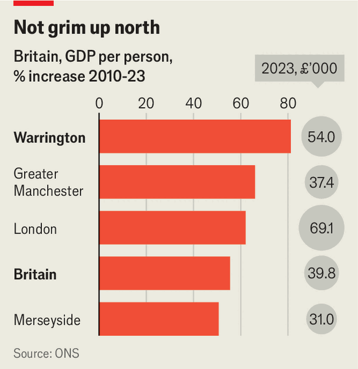
英国议会西敏寺在1968年赋予沃灵顿特殊规划权限，假设其将建设住房吸纳因曼彻斯特市区清拆项目被驱逐的工人阶级——正如伦敦周边新城镇所做的那样。但数年后，沃灵顿却坚持走自己的路。中产阶级纷纷涌入，被其靠近M6、M56和M62三条高速公路的区位优势吸引。沃灵顿规划者随即调整策略，不再如最初设想般建设大型社会住宅区，而是接受私人开发商将提供大部分住房。他们对下沉隧道和高架桥这类现代建筑符号持否定态度，而这类设计曾是米尔顿凯恩斯和史蒂文尼奇等其他新城镇建筑师的最爱。如今，沃灵顿的领导者们仍能察觉到与市场力量合作的本能。■
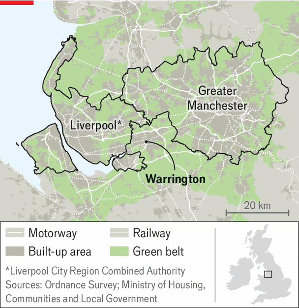
默恩迪先生认为，当传统产业衰退时，这个城镇能迅速转型（它曾是电线制造重镇）。几年前，该镇将仓库公园开发商的资金用于开通公交线路，而非常见的美化公共空间——此举旨在将工人送往仓库。伊恩·考克斯经营的黄金广场购物中心表示，由于与利物浦和曼彻斯特的交通连接，该镇“极其容易逃离”。这些城市的竞争加上网购的兴起，意味着人们需要理由才愿意前往市中心。他的解决方案是举办音乐演出和活动。尽管地方政府可能阻碍此类举措，但考克斯表示，沃灵顿的办事效率很高——更像是企业而非公共机构。如今，工程行业主导着当地经济。■
伯奇伍德公园（Birchwood Park）位于沃灵顿（Warrington）东北部，二战期间曾制造炸弹。如今这里却聚集了大量博士，许多人从事核能研究。在美国Amentum公司，工程师们展示了一种可在下水道中穿行、检测缺陷的设备。其他机器人则旨在应对更危险的环境，如核燃料储存罐。"我们有270个职位空缺，"Amentum北美以外能源与退役业务部门负责人洛伦·琼斯（Loren Jones）表示。不幸的是，过去几年沃灵顿对商业的热衷程度似乎有些过头。2010年代，该镇展开投资狂潮，收购伯奇伍德公园、投资一家挑战性银行，并向太阳能农场注资。到2023年，沃灵顿的债务已达18亿英镑（约合22亿美元），这对一个同规模城镇而言堪称天文数字。当时借贷成本低廉，这种策略看似明智。■
但这一情况已不再成立。去年，位于科茨沃尔德（Cotswolds）奇尔特恩（Cirencester）附近的一个太阳能电站发生火灾。当外部专家审查该市议会的投资项目时，发现多数项目表现不佳。今年早些时候，沃灵顿（Warrington）向中央政府请求紧急援助，以避免破产。该市已将居民税（对家庭征收）提高了7.5%，超过通常无需举行公投即可实施的幅度。比奇伍德公园（Birchwood Park）及其他资产将被出售。其他隐患也逐渐浮现。沃灵顿被绿色带土地包围，此类土地上难以进行建设。但该市此前已大幅削减了绿带土地。然而，当地对城市扩张的容忍度可能正在减弱。■
史蒂文·曼（Stuart Mann）这位独立议员兼自封的“烦人精”指出，沃灵顿为新居民和企业建设的基础设施不足，且该镇正日益难以与大曼彻斯特郡和默西赛德郡区分开来。未来几年的政治局势可能影响沃灵顿的发展进程。首当其冲的挑战是大曼彻斯特郡市长继任者的竞选。若右翼民粹政党改革党（Reform UK）胜出，可能对沃灵顿不利。该党全国领导层明确反对一项名为“北部动力铁路计划”（Northern Powerhouse Rail）的方案，而该计划将改善沃灵顿的铁路连接。明年，沃灵顿将加入与主要为农村地区的柴郡（Cheshire）组成的联合当局，其成效尚不确定。2028年，当地选民将有机会通过投票谴责议会提高税收的行为。沃灵顿最著名的子民或许能从该镇的成功与困境中汲取经验。■
营造一个商业繁荣的环境是明智之举（伯恩哈姆应该知道这一点：尽管有人谈论“曼彻斯特主义”，但曼彻斯特的成功部分归功于自1990年代以来允许开发商建设住宅塔楼）。但他仍需警惕债务问题。■ 如需获取更多关于英国重大事件的权威分析，请订阅我们的周度专属通讯Blighty。
§043 英国BBC关闭最古老服务 长波广播时代终结原题：The BBC switches off its oldest service · 板块：Britain · 栏目：英国
柏林、伦敦、巴黎、德罗伊特维奇。上世纪30年代，英国中部一个不足5000人的小镇在英国收音机的频率表上脱颖而出，当时收音机通过发射站所在地来标注频率。1934年BBC在德罗伊特维奇附近启动了该机构最强大的无线电发射塔，两座700英尺高（213米）的钢制桅杆至今仍向英国及欧洲大陆发送“长波”广播。二战期间，这些发射塔曾向欧洲传输无意义信息（“兔子正在钻洞”），被法国抵抗组织破译。■
最近他们使用的术语让普通听众感到困惑，只有板球迷才会理解“板球特别节目”中的内容。6月27日，英国广播公司（BBC）将停止播出Radio 4长波频道。其原因是维护过时技术的成本过高。德雷特维奇（Droitwich）使用两米高的陶瓷和金属阀门，而这类设备早已停产。几乎没人会在英国注意到这一变化。但这是广播公司希望最终削减昂贵广播和电视传输费用的首次举措。长波爱好者坚持认为长波并未过时。他们表示，核潜艇会通过接收“今日节目”的长波广播来确认英国是否被彻底摧毁。历史学家詹姆斯·金斯（James Jinks）称，这种说法并非都市传说。但英国皇家海军还有其他方式监测国家的生存状况。爱好者们还指出航运预报的重要性。
新技术已取代了传统广播。全国渔民组织联合会的迈克·罗奇（Mike Roach）指出，渔船可通过甚高频（VHF）无线电或卫星获取详细信息。对BBC而言，更棘手的论点是长波能覆盖偏远地区。并非所有人都能通过互联网收听。不过未来他们可能不得不这么做。英国的桅杆，包括德罗伊奇（Droitwich）的桅杆，于1997年被出售以资助向数字电视的过渡，现由私营公司Arqiva运营，广播公司向其租用带宽。在多数人转向流媒体的当下，维持全国范围的广播和电视覆盖在财务上已无意义。据媒体研究公司Enders Analysis统计，BBC每年在地面电视传输上花费约3亿英镑（约3.95亿美元）。移动网络运营商则觊觎该频谱用于5G。■
2月，工党政府启动了对广播未来发展的审查。对于电视领域，BBC及其他 broadcasters 均希望尽快在2034年实现互联网化，但政府担忧此举可能激怒没有宽带连接的老年选民。2024年，埃克塞特大学和利兹大学的学者发布的一份报告指出，到2040年，仍有150万户（占5%）家庭依赖地面电视。6月23日，政府发布了一份绿色文件，承诺设定结束地面电视的时限，建议最早于2034年、最晚于2044年完成转型。关闭老年选民的电视将引发比关闭老旧长波广播更大的反弹。但再次证明，小地方德罗伊奇（Droitwich）总是走在时代前面。■ 如需获取更多关于英国重大事件的专家分析，请订阅我们的周度付费简报《Blighty》。
§044 杰弗里·唐纳森爵士性侵获罪令人震惊原题：The shocking sexual-assault conviction of Sir Jeffrey Donaldson · 板块：Britain · 栏目：英国
九年前在唐宁街，杰弗里·唐纳森爵士签署了使特雷莎·梅得以继续担任首相的协议。根据信任与供应协议（confidence-and-supply agreement），北爱尔兰民主统一党（DUP）以10名议员的选票换取了10亿英镑（13亿美元）的北爱尔兰资金。最近几周，这位前议员正面临纽里唐郡刑事法院的审判。6月22日，陪审团一致裁定他所有指控成立：一项强奸罪、四项严重猥亵罪以及13项猥亵罪。
杰里弗里爵士领导北爱尔兰民主统一党（DUP）直至2024年3月被捕，当时两名女性指控他曾在童年时期性侵她们。他的审判自1921年北爱尔兰成立后，是最高关注度的案件之一。现年63岁的杰里弗里爵士自青少年时期便被视为罕见的政治人才。他早期职业生涯是为前保守党议员恩诺奇·鲍威尔（Enoch Powell）担任选举代理人，后者因在主流英国政坛的生涯终结于其臭名昭著的“血河”演讲而闻名，该演讲预言移民将引发大规模种族骚乱。鲍威尔被接纳为南唐斯选区（Sir Jeffrey成长地）的北爱尔兰联合党（Ulster Unionist Party）议员，并成为这位冉冉升起的政治新星的导师。1985年，杰里弗里爵士成为北爱尔兰（当时权力有限）自治政府（Stormont）最年轻的议员。据指控，1985年也是他犯罪行为的起始年份，持续至2008年。■
两位指控者均要求匿名，这在英国性侵案件中属常规做法。他于1997年当选为拉根谷选区议员，该选区位于贝尔法斯特西南部。1997年，一个基督教团体组织了一次与其中一名受害者的会面，他当时请求对方宽恕。次年，他退出了促成《贝尔法斯特协议》的谈判，该协议终结了长达30年的教派暴力冲突——北爱尔兰的“ Troubles ”。爵士先生持续反对当时的领导人大卫·特里姆，但未能推翻该协议，于2004年转投更为强硬的民主统一党（DUP），该党正崛起为北爱尔兰最大政党。他公开宣扬自己的福音派信仰——更确切地说，是将鱼形符号（Ichthys）佩戴在领带上，该符号是古代基督教的标志。他甚至在法庭上继续佩戴这一标志，并对所有指控表示不认罪。■
2004年一部极度颂扬的传记将他塑造成一位渴望在人间实现上帝意志的政客。其堕落之惨烈堪比圣经故事。这位王国骑士与枢密顾问官（国王顾问机构成员）的案件令友人与对手都震惊不已。最严重的指控是其涉嫌性侵一名小学儿童。检方指出其自身案件中的一个弱点：缺乏具体作案日期。杰弗里爵士的辩护律师向第一位指控者指出，她要么“捏造了虐待事实”，要么“当年只是做梦，多年后却坚信这是真的”。她称此说法“令人羞辱”。杰弗里爵士2020年写给她的信——此时他已是英国下议院民主统一党领袖——被呈交陪审团。■
信中请求她的宽恕，称“我造成了你的痛苦、伤痛和困扰”，并提到“罪孽深重且自私的行为”，表示他希望“为一切负全责”。他的律师则反驳道：“这与你无关，也不涉及性侵。”法庭上得知，杰弗里爵士的妻子伊丽莎白（Eleanor）曾在他车内安装窃听器，因为她认为他有婚外情（他在法庭上承认有另一段婚外情）。她还面临协助丈夫涉嫌犯罪的刑事指控，以及虐待儿童的指控。然而，就在庭审即将开始前，法官裁定她精神状态不足以应对审判。■
她最终面临的是“事实审判”，在此过程中，针对她的证据被听取，陪审团认定她“实施了该行为”——这一结论在该程序中等同于有罪判决，但无法对她进行监禁。投诉人B指控她童年时期遭到性侵。陪审团被告知，当杰弗里爵士被警方询问并面对她的指控时，他表示“对当时发生的事情没有记忆”，并认为“难以置信”。对DUP（民主统一党）可能产生的直接影响或较为有限。杰弗里爵士已不再是该党成员，该党似乎在获悉指控后立即正确配合警方调查。但无法确定这对北爱尔兰福音基督徒群体将产生何种影响。其中许多人长期深陷政治漩涡。■
民主统一党（DUP）创始人伊恩·帕斯利（Ian Paisley）曾从讲坛上发表政治宣言，高声宣讲圣经教义。相较之下，杰弗里爵士（Sir Jeffrey）更像传统政客，但他借助信仰将自身行为置于肮脏的政治角力场之上，向选民宣称自己肩负更高使命。杰弗里爵士已被立即关押入狱，将于9月接受审判。他大概率会被剥夺爵士头衔，并遭昔日盟友疏远。与2017年唐宁街的盛况相比，如今已相去甚远。■ 如需获取英国重大新闻的深度分析，请订阅我们的周度专属简报Blighty。
§045 阶级体系中上下浮动竟然出奇地容易承受原题：Slipping up or down the class system is surprisingly bearable · 板块：Britain · 栏目：英国
“我想拥有阿斯顿·马丁汽车，我想穿上三便士亚麻衬衫，我想拥有一个拥有里维埃拉日晒皮肤的女孩。”乔·拉姆普顿（Joe Lampton）在小说《顶楼有间房》（Room at the Top）中，这位年轻工人阶级的英雄如此表达自己向上爬的愿望。约翰·布雷恩（John Braine）1957年创作的小说，是战后众多描写傲慢、倔强的社会攀比者作品之一。小说以悲剧收场，充满欺骗、心碎与死亡。20世纪中叶成长的男女，向上流动的社会阶层经历曾是普遍现象。如今这种现象更为罕见，主要因为从制造业向服务业的大规模经济转型已接近尾声。■
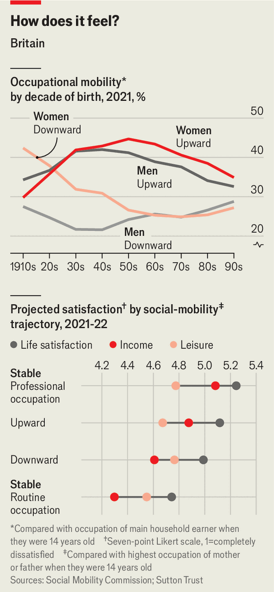
尽管许多人仍能获得比父母更好的工作，但越来越多的人却面临更差的境遇（见上图）。萨顿信托（Sutton Trust）这家慈善机构最近提供了一些答案。凯文·拉瑟姆（Kevin Latham）和埃斯梅·莉莉怀特（Esme Lillywhite）基于一项持续多年的调查，覆盖了数万个家庭。他们通过观察人们从事的工作而非自我描述来衡量社会流动性，这种做法颇为明智，因为英国人对阶级问题并不诚实。中产阶级人士往往夸大或虚构自己出身工人阶级的背景，高估自身的流动性。稳固的中产阶级身份似乎才是通往满足感的最可靠途径。在控制了种族和年龄等变量后，那些出身专业家庭并从事专业工作的群体，其生活满意度最高（见下图）。
但另一群人紧随其后：现代版的乔·兰普顿，他们比父母更上一层职业阶梯。其他研究者，包括伦敦大学学院的塔克·温·陈，也发现了同样的现象。然而，仍有人会觉得这令人惊讶。关于向上流动的社会叙事往往强调断裂与痛苦。兰普顿曾因新晋中产阶级同伴而感到被轻视。其他人则觉得仿佛失去了什么，或觉得自己作弊了。“很难避免一种背叛感和压倒性的内疚感，”矿工之女、著名社会学家迪恩·里（Diane Reay）写道。或许写下这类文字的智识阶层是特殊的。一个出身工人阶级却在商界取得成功的年轻人，可能比教育天才更少感到内疚。此外，物质成功本身就很美好——美好到足以淡化那种断裂感。■
向上流动的人群拥有更优质且更稳定的就业机会，也更可能拥有自有住房，这些因素大多解释了他们更高的生活满意度。物质条件的差异也可能解释为何社会上升者比传统中产阶级略显不那么满足。“我很高兴自己如今所处的位置，”本·琼斯（Ben Jones）说道，他出身工人阶级家庭，如今在大曼彻斯特从事教育政策工作。在大学里遇见专业人士子女时，他被他们“一切都会顺利”的确信感所打动。但他们的从容与自信，以及他自身的不安，更多反映的是处境差异而非态度差异。专业人士子女往往拥有强大的安全网，使他们无所畏惧；相比之下，琼斯很快便要承担照顾母亲的责任。■
那些比父母从事更卑微工作的不幸者，似乎比向上流动者更不满足，但比工薪阶层出身的工薪阶层子女更满足。有些人可能愉快地用高薪换取合理的工作时间。社会阶层下滑者似乎对闲暇时光感到满意，尽管他们对薪资不满。他们父母的感受并未被记录。■ 如需获取对英国重大新闻的专家分析，请订阅我们的每周专属简报Blighty。
§046 别再提安迪，也别再提基尔原题：Forget Andy. Forget Keir. It’s Ed’s · 板块：Britain · 栏目：英国
周一清晨，历史再次上演。在唐宁街的演讲台上，泪流满面的基尔·斯塔默成为继任首相。与此同时，安迪·伯纳姆乘坐的列车正沿西海岸干线从曼彻斯特疾驰向伦敦，如同列宁乘坐Avanti Pendolino列车般迅疾。但党内对唐宁街10号的更迭反应平淡，人们更关注唐宁街11号财政大臣人选。候选人只有两位：埃德·米利班德与非埃德·米利班德。英国政治经历了一场哥白尼式革命：如今围绕的中心人物是米利班德。
关于米利班德引发基金经理不满的研究显示，他被那些希望推举来自党内右翼的前卫生部长韦斯·斯蒂灵（Wes Streeting）或“任何不是埃德”的人所取代。在右翼会议ARC的一次访谈中，保守党领袖凯米·巴登诺奇（Kemi Badenoch）提及米利班德的次数比她提到的未来首相布兰姆（Mr Burnham）更多。“别让经济沦为‘红埃德’的牺牲品”，《每日邮报》怒吼道。英国政治的过去、现在，甚至未来，似乎都围绕着米利班德展开。如果英国政治不过是个人行为的集合，那么米利班德的决策对国家的影响，恐怕比多数人更深远。他曾在党内领导权争夺战中与兄长大卫（David，前外相，更少左翼倾向且更擅长拍照）对抗，由此开启了工党向左倾斜的进程。■
他将党派转变为一人一票的组织，而非议会成员、工会和党员复杂交织的结构，为左翼的杰里米·科尔宾接任铺平了道路。米利班德担任党魁期间，选举上是失败的，但从长远来看，却是一次政治上的成功。几年内，米利班德倡导的干预主义、繁琐的议程从被选民拒绝的纲领，演变为跨党派共识。翻阅2015年米利班德的工党宣言，便能预见2026年的英国：能源账单价格上限、房东严格监管以及更高的最低工资。奇怪的是，正是前一届保守党政府率先实施了这些政策。这一时期，一个网络迷因（meme）兴起：“埃德·米利班德是首相”。在许多方面，他仍被视为如此。在“净零”（net zero）议题上，这一点尤为明显。■
米利班德（Miliband）在戈登·布朗领导的工党政府时期担任能源大臣，推动英国承诺实施具有约束力的碳预算。尽管如今他是保守党眼中的眼中钉，但“净零排放”目标却由保守党政府立法通过，作为特雷莎·梅（Theresa May）卸任首相的临别礼物——一张卡片、几句祝福和一些具有深远影响的气候立法。如今，作为负责气候事务的内阁大臣，米利班德主导着当前局势。他强大的影响力使得“净零排放”本应只是工党执政期间的一个组成部分，却获得了远超预期的重要性。英国体制中原本用于制衡的软性机制，即其他内阁大臣，因米利班德清楚自己在做什么，而显得力不从心，这与大多数同僚形成鲜明对比。■
企业对高能源价格的抱怨并未被倾听。快速回答，不需搜索，工党首次执政第一年时的商务大臣是谁？下一回合：现任商务大臣又是谁？这种失衡的政府导致英国被迫承受米利班德所做决策的后果。目前，英国在主要富裕国家中碳减排记录最为突出，同时却面临最高的工业能源成本。如果天然气价格持续高企且波动剧烈，米利班德的计划可能显得合理；若不然，这或许会成为一项代价高昂的错误。英国正加速向2030年代左右实现主要碳中和能源网络迈进，而米利班德注定会被视为先知或罪人。如何处置这位英国政治太阳系中心的人物，将成为伯纳姆面临的最大待决难题。
一场紧张的行动正在展开，旨在阻止爱德·米利班德成为财政大臣。他的党内同僚暗示，若他被任命，可能会引发债券市场暴动。尽管芭登诺奇女士（Ms Badenoch）喜欢针对米利班德发难，但她的态度与党内人士对他的憎恨相比，简直不值一提。在一颗仍令米利班德心惊胆战的言论中，一位匿名的工党人士曾表示：“米利班德是唯一真正懂得如何运作体系的部长。”并补充道：“如果我们要赢得下次大选，我们就不希望爱德成为成功的部长。”这正是伯纳姆先生（Mr Burnham）在处理米利班德问题时面临的困境。若成为财政大臣只是普通职位，米利班德无疑是首选人选。他在财政部任职八年。
老练的政界人士，如曾任财政部永久秘书的尼克·麦克弗森（Nick Macpherson），都给予其极高的评价。甚至专家们都认可他的能力：一位盟友称他“拥有最大的经济学头脑”，或许正咔嗒一声合上卡尺。任命米尔iband担任财政大臣将是一次大胆之举。但此举会让新任首相沦为米尔iband轨道上的一颗星辰。Burnham将曼彻斯特主义（Manchesterism）定义为亲商社会主义，但究竟何者为先？短期内任命一位本能的布莱尔主义者，如斯特里宁（Mr Streeting），或许能缓解商界更极端群体的担忧（尽管他们仍会抱怨任何来自左翼中心的财政大臣的现实困境）。其他候选人也被提及——尤韦特·库珀（Yvette Cooper）如何？——仅仅因为这些人不是米尔iband。■
目前，英国政治仍深陷埃德·米利班德的引力之中。伯纳姆需要决定是否要挣脱出来。■ The Economist的订阅者可注册我们的Opinion newsletter，汇集了最佳的领导文章、专栏、读者来信及特稿。
§047 学生们的表现比你想象的要差 国际 不合逻辑原题：Students are doing worse than you think · 板块：International · 栏目：国际
近几周，美国最大且最顶尖的公立大学系统之一——加州大学——有超过1800名数学和科学教授签署了一封公开信，详细说明了一个棘手的问题。他们指出，新生入学时往往缺乏成功所需的最基本技能。在伯克利分校的校园里，他们写道，约20%-30%的早期微积分课程学生表现出“严重的基础准备不足”。挑战已经变得如此严峻，以至于教师不得不重新教授中学数学。 ■
这封信是关于后高等教育阶段、大学录取机制以及美国青少年能力现状的争论中最新的一篇。争论源于去年11月加州大学圣地亚哥分校（San Diego）发布的一份令人震惊的报告。该校研究人员指出，过去五年间，进入大学时数学水平低于高中水平的新生数量激增近30倍，达到近八分之一。他们认为，约70%的学业滞后的学生未能达到14岁学生的预期水平。对本科生数学能力的担忧与长期存在的阅读能力下降问题相互交织。教师们警告称，一些文学专业学生似乎连完整读完一本书都做不到。这些问题不仅出现在西海岸或公立大学，其他地区和私立院校也报告了类似现象。■
哈佛大学一些人文学科和社会科学教授表示，他们感到有必要缩短阅读材料，据该校10月向教师发布的报告。学生们抵达美国最负盛名的哈佛大学时，阅读复杂文本的经验和持续专注的能力都明显下降。他们“难以应对十年前学生还能轻松完成的阅读材料”。教授们抱怨学生已非新鲜事，自大学象牙塔建立以来便屡见不鲜。然而，用广泛数据支撑轶事往往困难重重。中学毕业后，学习者极少参加全国或地区性的标准化考试。因此，研究者主要依赖教师提供的零散报告，例如加州部分教师因感到有必要发出警报而撰写的报告。但那些希望了解全球趋势及美国在其中所处位置的观察者，并非完全处于信息真空。■
至少可以从一项每十年一次的测试中获得一些见解，这项测试由OECD（经济合作与发展组织，简称OECD）的分析师们进行。该组织由多数富裕国家组成，其“成人技能调查”旨在评估数十个国家公民的读写和数学能力是否足以应对现实世界。最基础的测试内容包括评估人们能否理解药瓶上的说明，或计算需要购买多少墙纸来重新装修房间。在更高级别的测试中，则考察人们能否从复杂的数据分析和图表中得出合理结论。测试参与者被分为五个能力等级，每个学科均如此。OECD的安德烈亚斯·施莱希尔（Andreas Schleicher）表示，第一等级应是富裕国家小学生在完成小学教育后能够达到的水平。上一轮测试共对16万名不同年龄的人进行了评估（相关结果于2024年底公布）。■
《经济学人》向经合组织（OECD）索取了仅限于35岁以下、在参加测试时正在接受“高等教育”（tertiary education）的群体数据。这包括所有大学的学生，以及大多数学院的学员（但仅限于那些所修课程理论上比高中课程更高级的学员）。其中许多人表现优异，但相当一部分人的成绩却极差（见图表1）。在富裕国家中，约8%接受高等教育的学生在阅读能力测试中得分不比十岁儿童预期的更高。数学能力方面，这一比例也大致相同。更糟糕的是，自上次测试以来，即近十年来，达到或低于这一基准线的学生比例有所上升。在阅读能力方面，表现极差的学生比例已超过一倍。各国在具体教育水平上的得分差异显著。■
在爱沙尼亚，不足2%的高等教育学生在阅读测试中处于或低于最低标准。这一比例在波兰（阅读能力）上升至五分之一，在智利（数学能力）则达到四分之一。尽管英国公众对学术界的不满情绪日益增长，但其学生的表现仍优于平均水平且持续改善。相比之下，美国的测试成绩令人失望。其高等教育学生中，有七分之一在阅读测试中处于或低于小学水平，较十年前的约五分之一有所上升。与此同时，数学能力处于或低于最低标准的学生比例也接近五分之一。究竟发生了什么？部分原因在于大学和学院继承了全球基础教育体系中存在的问题。疫情的影响不可低估。各国平均实施了持续20周的全国性学校停课措施。■
课堂轮换制度和对密切接触者的隔离措施进一步扰乱了教学进度。加州佩珀代因大学教授杰西卡·胡顿·威尔逊（Jessica Hooten Wilson）表示，在那场灾难后的几年里，一些学生“仿佛从未上过高中”，“实际上看到这种情形非常可怕”。然而在超级疫情爆发前，许多地区的教育水平已出现倒退。美国国家教育进步评估测试（NAEP）的分数在2010年代初达到峰值后持续下滑，而国际学生评估项目（PISA）的分数也在多个国家呈现类似趋势（见图表2）。法国、德国、荷兰和新西兰等国则出现了异常显著且长期持续的下降。这些趋势的成因仍存在激烈争论。■
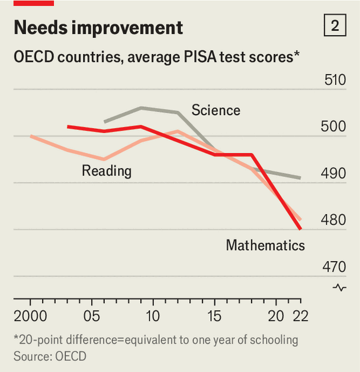
移民增加是一个值得关注的现象：新移民往往比本地出生的学生更贫困，且更可能在家使用外语交流。与此同时，传统主义者指责教育改革者在弱化考试和问责制度，并用时尚但缺乏深度的课程取代经过验证的课程大纲，弱化具体事实的学习，转而推崇听起来美好但空洞的“软技能”。关于社交媒体正在“重塑”儿童大脑的说法，与过去对电视和电子游戏的恐慌如出一辙。但几乎没有疑问的是，各种屏幕设备已取代了更多滋养性的爱好：美国九岁儿童中表示出于乐趣而阅读书籍的比例，已从20世纪90年代的近60%降至目前的37%。■
■ 事实上，不仅在校学生和大学生的读写能力在下降，经合组织（OECD）的测试也显示，这种趋势正蔓延至老年群体。施莱希先生指出，这或许是因为人们如今阅读长篇复杂文本的机会比过去少了。然而，那些声称只是被动观察这一趋势的大学，实际上却在为自己布置作业。在许多国家，它们对自身招生政策拥有广泛的自主权，却长期未能利用这些自由来维持高标准。数十年来，批评者一直指责大学官员降低入学门槛以迎合日益增长的需求。如今情况略有不同：在一些富裕国家，18岁人口数量已接近或超过峰值。在这种情况下，管理者可能更难抗拒降低标准，因为另一个选择是缩减规模。
确实，将经济合作与发展组织（OECD）关于学生技能的数据与高等教育体系学生数量的变化进行对比，揭示出一种值得进一步研究的相关性：规模缩减的体系尤其容易吸纳大量在测试中处于最低水平的学生。学校成绩下滑主要由原本就处于班级后半段的学生推动，而非顶尖高材生的退步。因此，一些美国顶尖大学持续涌入缺乏准备的学生，这一现象需要更深入的解释。加州及其他许多地区的愤怒学者将原因归咎于取消入学考试。■
疫情前，美国授予学士学位的大学中超过半数要求申请者参加数学和语言推理测试——通常是SAT或ACT（这些考试在许多国家存在标准化考试体系的背景下，起到替代作用）。如今，仅10%左右的美国大学仍要求申请者参加此类考试。疫情最严重时，美国高校曾声称无法安全地组织这些考试。但它们也受到一些主张的影响，认为这些考试对非裔和拉丁裔学生存在偏见，这些群体在考试中表现通常低于平均水平。讽刺的是，取消这些考试让校方更容易按照自己认定的“公正”方式重塑校园的种族构成，尽管2023年最高法院已裁定禁止基于种族的平权行动。■
处于教育体系底层的机构，淘汰测试可能简化了更紧迫的任务——确保有足够的学生入座。这一切使美国的招生官们愈发依赖那些可靠性却在逐渐降低的替代性信号。申请文书早已常由家长和老师代笔，但如今其价值几乎归零，因为AI工具能轻松生成这类文书，正如伯克利数学教授米娜·阿加纳奇（Mina Aganagic）所言，她也是那封公开信的作者之一。至于高中成绩，其虚高趋势正在加速。近年来，美国多个州已降低高中生获得毕业证书的门槛。圣地亚哥大学教授们发现，四分之一被派往他们最基础数学补习班的学生，其高中最后阶段的数学成绩均为满分。■
阿加纳奇教授表示，大学录取正在变成一个“黑箱”。“我认为大多数人会同意，随机选拔学生对任何人都没有好处。”大学和学院面临的关键问题不仅在于如何应对日益增多的准备不足的申请者，更在于他们是否具备继续坚持高标准的准备。加州的一封公开信警告称，随着学生水平下降，量化严谨性正面临“日益增长的稀释压力”。在英国，全国性大考在一定程度上遏制了中学阶段的分数膨胀，但高等教育领域并非如此。尽管本科录取分数较疫情高峰有所回落，但2025年英国仍有30%的学士学位获得者获得一等学位，这一比例从1995年的7%大幅上升。在耶鲁大学，2022-23学年有79%的学生成绩为A或A-，相比之下，2010-11学年这一比例仅为67%。■
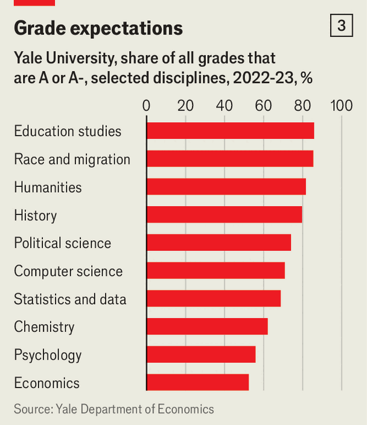
成绩膨胀率在经济学课程中最低，约为50%；而在人文学科、民族研究和教育学等领域则超过80%（见图表3）。今年4月，耶鲁大学资深学者在一篇探讨为何公众对高等教育信心下降的文章中指出，“数十年的通货膨胀和评分压缩已使大学评分体系几乎失去了作为学术衡量标准的意义”。哈佛大学本科生院长去年发布的一份报告中，收录了与教师交流所得的坦率总结，揭示了推动成绩膨胀的种种压力。那些在校期间从未获得过中等成绩的学生，如今在大学里更自信地申诉不完美的成绩。哈佛大学的学者们担心，学生可能会避开评分严格教授的课程，这可能损害他们自己的职业发展。■
他们察觉到管理者愈发关注学生在课程结束评估表上的反馈。这进一步激励了教职员工努力取悦学生。根据报告，哈佛大学在过去十年里“敦促教职员工铭记部分学生入学时准备不足，部分正面临家庭困境或其他挑战，几乎所有学生都承受着压力”。对这些学生评分严苛的教师过去并不总是确信大学会“站在他们这边”。教学方式的演变也起到一定作用。小组项目比考试更难客观评分。一些讲师甚至提到对“无评分”或“契约式学习”等理念的兴趣，学生只要完成所有指定任务即可获得A-成绩。如今，这一切又叠加了AI的出现，似乎正在助长大规模作弊行为。■
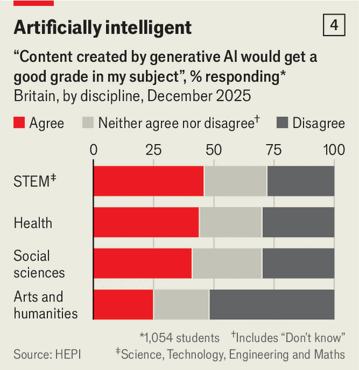
据3月发布的HEPI（高等教育政策研究所）调查，英国约94%的本科生表示曾使用AI辅助完成评估作业。其中约12%的学生承认直接将AI生成的文本粘贴至课程作业中，这一比例较2024年的3%有所上升。近半数STEM（科学、技术、工程和数学）学生及四分之一人文学科学生认为，AI生成的内容在各自学科中"能获得良好成绩"（见图表4）。美国2023-24学年期间，约三分之二的公立大学学生使用AI，其中估计有9%用于作弊，研究显示经济学（17%）和新闻学（16%）专业学生的作弊率最高。伯克利大学研究作者伊戈尔·奇里科夫表示，当前实际作弊率可能更高。■
奇里科夫博士本月发表的第二项研究以工作论文形式披露，他分析了德克萨斯州一所大型（未具名）大学2018年至2025年间颁发的50万份成绩。研究发现，自2022年底ChatGPT发布以来，涉及AI擅长技能（如写作和编程）课程的顶尖成绩发放量大幅上升。这些学科的“A”级占比上升了13个百分点，即约30个百分点。但他在涉及聊天机器人可能不擅长的学科中未发现类似成绩膨胀现象。学术界对声称能检测AI撰写论文的工具缺乏信心，同时因指控学术不端可能面临重大损失。
奇里科夫博士表示：“你不能禁止一个你也被要求教授的工具。”许多讲师正在重新引入监督考试（疫情期间，学生可将开放书考试带回家，在24小时内完成的考试变得流行）。但这类考试可能遭遇行政人员的阻力，因为他们需要找到空间和人员来组织正规监考。对一些人而言，人工智能引发了无奈感。如今常见的是，学术界人士耸耸肩，认为或许学生不再需要扎实的基础技能，因为未来他们所做的大量工作将涉及调整AI制作的成果。这并非务实，而是投降。■
§048 美国数据中心的反弹威胁人工智能热潮 Business Do not compute原题：America’s data-centre backlash puts the AI boom at risk · 板块：Business · 栏目：商业
从滑梯顶部俯瞰，最近四月的景色还是一片葱郁的俄亥俄州农田、密林和漂亮的小木屋。如今却变成了六顶防风雨帐篷，这类帐篷常用于军事基地存放战斗机或救灾组织在灾区搭建的临时设施。这些帐篷即将容纳价值约300亿美元的尖端半导体。配备数台燃气涡轮机以提供电力，整个设施占地相当于一个机场航站楼的面积。 ■
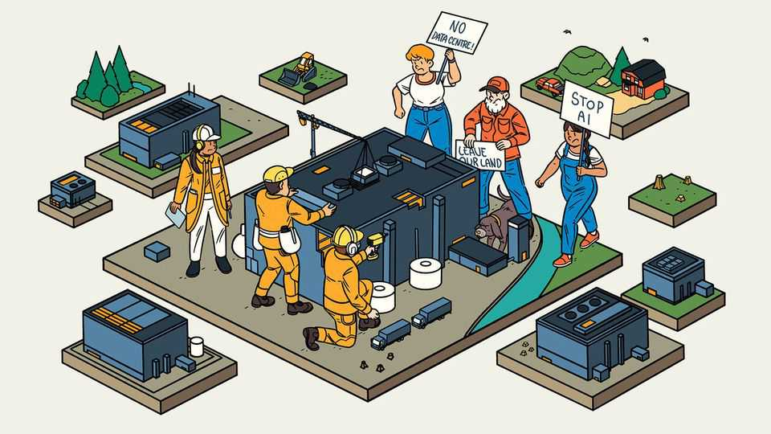
如果母公司Meta按计划于2026年将“普罗米修斯”数据中心投入使用，届时将投入整个吉瓦（GW）的电力——相当于为多达100万户家庭供电，或大致相当于一座大型核电站的发电量——用于人工智能领域。未来能够于2030年训练前沿AI模型的巨型数据中心，不会位于如今美国多数服务器农场所在的弗吉尼亚州或加利福尼亚州都市群，而将出现在正在兴起的“硅心地带”——密歇根州、威斯康星州和俄亥俄州，或南部州如路易斯安那州、密西西比州和德克萨斯州。亚马逊、谷歌、Meta、微软和甲骨文等公司已投入高达7500亿美元，其他公司也将投入数十亿美元用于这些地区的投资。预计到2030年，全球AI数据中心投资总额将达到3万亿美元，其中大部分将流向美国。■
这笔资金将扩大人工智能计算能力，以美国主要数据中心耗电量为衡量标准，目前仅为12GW左右，到本十年末可能达到五倍（见地图）。全美各地，无论政治立场如何的人们都对这一发展感到愤怒。人们有诸多不满：建筑的丑陋、发电机和冷却系统的轰鸣声、新建输电塔像骨架般遍布各地、对污染水源的担忧。调查显示，美国人宁愿住在核电站附近也不愿靠近数据中心。这一议题的敏感度迅速上升。11月面临选民投票的州长候选人，通常都会被问及对此事的立场。地方活动人士已开始行动。■
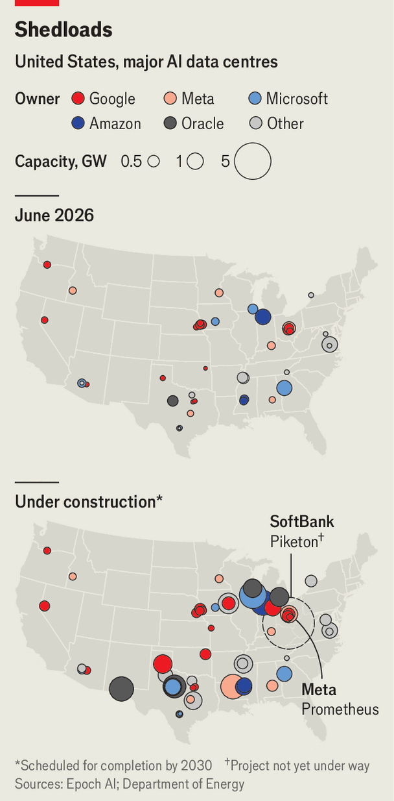
至少20个价值420亿美元的数据中心项目，原本将消耗35亿瓦电力，因地方阻力在2026年前三个月被取消；过去三年累计取消的项目价值达850亿美元，包括亚马逊和Meta提出的小型中心。爱荷华州锡达拉皮兹居民正抵制谷歌在当地建设数据中心的计划。尽管OpenAI在密歇根州萨林市启动项目引发当地反对，多个镇议会已通过禁建令。然而，这种阻力远不止简单的邻避主义。4月皮尤研究中心（Pew Research）的一项调查显示，仅听说过数据中心的美国人对这类项目的态度，与居住在距其五英里内居民的反对程度相当。■
哲学家们长期以来担忧，一个专注于单一目标的恶意AI——比如最大化回形针生产——会通过吞噬所有资源、用服务器覆盖地球来毁灭人类。OpenAI的山姆·阿尔特曼（Sam Altman）和Anthropic的达里奥·阿莫代伊（Dario Amodei）多年来一直警告，AI将使大多数人失业或被用于大规模伤害。如今，他们所需的基础设施正逐渐走进千家万户，景象宛如战争地带。美国各地居民在社区会议上站出来，恳求取消某些项目，希望借此延缓技术发展的步伐。他们能成功吗？这个问题不仅萦绕在AI行业人士心头。《经济学人》采访美国能源部长克里斯·赖特（Chris Wright）时，他说道：“我们需要保持领先于中国。” ■
他称，确保美国在人工智能领域保持领先地位是其任期的“首要目标”。我们必须推动这些数据中心获得许可、建成并通电运行。据估计，美国当前数据中心的1-2吉瓦算力主要用于训练前沿模型，涉及主要提供商如Anthropic、OpenAI和Google，以及试图跟上它们的公司，包括Meta和xAI。因此，理论上应有10吉瓦算力用于推理——让客户能够使用这些模型进行提问、编写代码或执行其他任务。然而，2026年初AI工具需求激增后，现有算力却严重不足。■
Anthropic限制模型使用，OpenAI放弃了其计算密集型视频工具，微软则将代码助手定价提高到如此高的水平，以至于一些程序员重新回到编写软件这一失落的艺术。新建数据中心本应缓解这种压力。目前已有大型项目启动建设，预计到2028年底将新增近30GW的算力。然而，制造新模型所需的算力却在迅速增长。Anthropic去年发布的一份白皮书指出，到2028年，训练单一前沿模型可能需要多达5GW的算力。据研究机构Epoch AI称，这一数字到2030年可能攀升至16GW。如果属实，未来几年上线的大部分算力都将被训练所消耗。不过，一些因素将抑制对更多算力的需求。■
芯片随着时间推移效率不断提升，相同功率下能提供更强的计算性能。加密货币挖矿设施正被重新用于人工智能领域。正如Cerebras公司CEO安德鲁·费尔德曼指出的，推理过程不需要训练模型时所需的庞大设施，这意味着可以利用现有数据中心的部分资源。即便如此，这可能仍不足以应对挑战。截至目前，只有编程领域真正受到AI冲击，其他可能被AI彻底变革的行业——如法律、金融或媒体——仍处于初步采纳阶段。目前正在进行的数据中心项目大多在抵制浪潮达到当前高潮前就已经获批并启动。■
一些项目——如密歇根州萨利纳的OpenAI项目——勉强通过：该项目被理事会否决，仅因县内无工业用地分区，违反了“排他性分区法规”才得以推进。即便长期接纳数据中心的地区也纷纷转向反对。2025年3月，被称为“数据中心走廊”的弗吉尼亚州劳登县取消了使数据中心建设便利的规则，新项目需通过“特别例外”程序并举行公众听证会。在拥有仅次于弗吉尼亚州的第二大数据中心数量的得克萨斯州，圣马科斯市已通过数据中心建设暂停令。美国民众部分出于对社区和环境影响的合理（尽管有时误判）担忧而抵制数据中心。
例如，关于人工智能数据中心消耗大量水资源的神话，2025年一本畅销书通过严重计算错误的误导性宣传广为流传。实际上，中型数据中心每年的用水量大约相当于两个高尔夫球场，但如果采用水循环技术，其用水量将大幅减少，目前已有大量数据中心采用该技术。此外，电力供应问题也引发担忧。另一家研究机构SemiAnalysis（SemiAnalysis）估算，美国各州仍有约1太瓦（1,000GW）的大负荷电网接入申请待处理，几乎全部用于数据中心。这相当于美国电力电网总容量的近全部，美国电网最大发电能力为1,250GW。美国全年平均电力需求约为470GW，但夏季用电高峰可达750GW，电力公司通常希望在此基础上保持15-20%的备用容量。此外，实际可随时调用的发电能力仅有约975GW。■
这引发了人们对消费者及其他企业电价飙升的担忧。截至目前，尚无可信证据表明这种情况正在发生。电力需求的持续增长使公用事业公司能够将升级成本分摊至更多用户。此外，数据中心运营商通常会安装备用电源以应对能源供应中断，因此在极端天气事件（如风暴）发生时，他们可以降低用电需求。“我们希望成为电网的良民，”微软数据中心建设负责人阿利斯泰尔·斯皮尔斯（Alistair Speirs）表示。他补充道，通常连接至超大规模数据中心的电池系统使他们能够“选择何时少量用电、何时大量用电”。然而，未来几年计划中的数据中心巨额投资仍将迫使美国大幅增加电力生产，由此产生的基础设施建设本身也将引发新的反对声音。■
美国能源部预计到2030年，该国需新增50吉瓦发电量以支持人工智能发展，另需新增50吉瓦用于政府预期的制造业复兴。怀特先生表示：“我们需要扩大可调度电力产能。”他质疑仅能提供间歇性能源的风能和太阳能项目。为实现这一目标，他阻止燃煤电厂关闭，主张重启核电站并建设更多燃气电厂。尽管预计到2030年，三分之一数据中心将实现全部电力自给，但这些项目仍将加剧视觉污染，其余数据中心仍需依赖电网。目前俄亥俄州已拥有全美第四大的数据中心集群，该州在应对策略上比多数州更为审慎。■
去年7月，俄亥俄州公用事业委员会通过了一项要求，规定规模超过一定标准的数据中心运营商需为至少85%的电力容量支付费用，即使他们未实际使用，以确保俄亥俄州居民不会承担电网投资的费用。这一创新举措成为科技公司于3月在椭圆办公室签署的“用户保护承诺”中的一项内容。俄亥俄州的规定优于该承诺，因其具有强制约束力。尽管如此，俄亥俄州仍难以安抚居民。该州四分之三的民主党人和三分之二的共和党人仍反对本地数据中心建设。■
反对声如此强烈，以至于尽管唐纳德·特朗普在2024年总统选举中以11个百分点的优势赢得俄亥俄州，人工智能爱好者维韦克·拉马斯瓦米仍与民主党对手在民调中势均力敌，竞逐州长职位。特朗普政府拥有绕过地方阻力的手段。三月，能源部宣布在俄亥俄州农村皮克顿的联邦土地上启动一项规模达10GW的项目，从而规避了部分常规的审批流程。■
该项目将由日本综合企业软银集团（SoftBank）资助，该集团由孙正义（Masayoshi Son）领导，将建设一座燃气发电厂，为全球最大的数据中心供电。俄亥俄州议员亚当·霍尔姆斯（Adam Holmes）在奠基仪式上表示：“想象一下，我们与卢钦市长、怀特市长、孙正义先生和我一起站在阿巴拉契亚农民的田地里……还有其他所有山民！”皮克顿居民对此并不介意：该地区在20世纪50年代曾是美国核燃料增殖计划所在地。即便如此，代表该选区并担任俄亥俄州议会数据中心委员会委员的州参议员肖恩·威尔金（Shane Wilkin）也并非易事。“我们请来了水务部门的人作证，我问他俄亥俄州有多少数据中心拥有排污许可？只有一个。”■
然后我问他一个问题，我其实不知道答案——这总是有风险的——他们有没有违规记录？他回答说有两次：因文件提交延迟。威尔金先生向他的选民解释，数据中心不会推高电价，因为它们自带电力，也不会污染供水系统，因为它们不排放废水。但选民们只是说：“我只是不想建。” ■ 要追踪塑造商业、工业和技术趋势的动态，请订阅我们的周度专属通讯《The Bottom Line》。
§049 僵尸独角兽在硅谷游荡原题：Zombie unicorns are haunting Silicon Valley · 板块：Business · 栏目：商业
奇幻生物在硅谷游荡。当地人对独角兽（估值超10亿美元的初创企业）、十亿美元独角兽（估值超100亿美元）甚至百亿独角兽（估值超1000亿美元）早已习以为常。然而最近，另一种生物开始在硅谷出没：所谓“僵尸独角兽”，这些企业曾估值超10亿美元，如今却沦为昔日辉煌的影子。它们的蔓延让风险投资（VC）人士彻夜难眠。截至2026年5月，斯坦福大学伊利亚·斯特雷布拉耶夫（Ilya Strebulaev）维护的数据库中，1900家独角兽企业中已有332家以低于或等于其历史峰值的估值融资（见图表）。其中212家估值低于10亿美元。
■
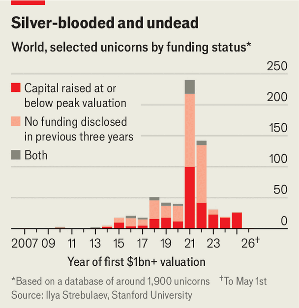
多达383家独角兽企业披露过去三年未获得新融资；其中41家已失去独角兽地位。正如斯特雷布拉耶夫先生指出的，初创企业数据本身就存在很大噪声。一些独角兽可能因无需融资而未进行融资，但另一些则可能难以证明此前的神话式估值。越来越多的独角兽似乎已加入僵尸行列。在独角兽热潮最盛时期，许多这类企业营收微薄，商业计划也缺乏可信度。低利率促使投资者为寻求更高回报向风投基金大笔注资。据风投数据提供商Pitchbook统计，2022年风投机构共募集资金2230亿美元。但随着利率上升，融资规模骤降，去年仅筹集到660亿美元。一些企业似乎明显被高估了。■
Cameo这家明星付费发送个人问候的视频网站，曾在疫情时期需求激增的背景下于2021年估值达到10亿美元，如今却被评估为仅值8200万美元。即便是那些业务基础更稳固的独角兽企业，融资环境的恶化也已削弱了它们维持原有估值融资的能力。初创企业通常需要5到10年时间成长，随后才可能上市或被收购。僵尸企业及其投资者可能都将面临难以实现这一目标的困境。风投协议往往赋予投资者在认为等待更优时否决首次公开募股（IPO）的权利。那些在高估值时买入的后期投资者尤其倾向于阻止可能以低于其预期估值上市的初创企业，希望其未来前景能有所改善。■
过去，初创企业最简单的选择是向风投寻求更多资金。但如今这些投资者更关注当下热门的AI企业，而非冒险投资于过时的公司，技术投资人彼得·科汉（Peter Cohan）表示。为了说服他们掏钱，初创企业往往不得不接受估值缩水等其他令人不快的条件。问答平台Quora（Quora）在2017年估值达17亿美元，但到2024年，其估值已降至5亿美元，并开始将业务转向AI领域。“我们的估值低于之前的峰值，但很高兴终于被重新定价至新市场，”其CEO在博客中写道。斯特雷布拉耶夫（Strebulaev）数据库中，目前估值低于峰值的公司中，近半数在2021年筹集了资金。PitchBook预计，从明年年底开始，这些投资者将需要开始套现。■
它预计估值将净削减5000亿至1万亿美元，原因是成熟期初创企业重新定价、争抢买家或破产。这将是一场大规模的清理：PitchBook数据显示独角兽总估值达8.6万亿美元，若剔除前十大独角兽则为5万亿美元。估值下跌对风投机构来说是场灾难。世界经济论坛的研究显示，近期成立的风投基金向投资者返还的收益显著低于早期基金。这些基金还大幅跑输标普500指数，尤其是那些未投资少数人工智能超级明星的基金，科翰先生指出。这将使养老基金等支持者更加不愿投资排名靠后的风投机构：目前仅有5%的风投机构贡献了行业90%的利润。受惊的风投机构正在尝试创新方法。■
一些投资者已从传统基金转向持续运作的基金，这类基金将私人公司股权与公开市场流动性资产混合配置，使他们能够定期向投资者支付收益。另一些人则转向私募公司股份的二级市场，通过出售部分股权来变现，尽管多数买家更关注获取热门初创企业的股份。部分风投公司希望，若今年明星AI企业的巨无霸IPO成功，公开市场将对科技领域中较为普通的公司更加友好。但仅靠这一点可能还无法让僵尸独角兽企业重获新生。■ 更正（2026年6月23日）：本文已更新以删除数据错误。致歉。欲追踪塑造商业、产业与科技趋势的动态，订阅我们的周度专属简报“Bottom Line”。
§050 UPS在联邦快递（FedEx）面前逐渐失去优势原题：UPS is losing ground to FedEx · 板块：Business · 栏目：商业
对美国最大的快递公司而言，疫情带来了业务高峰。为满足居家隔离期间人们激增的订单需求，联邦快递的白色卡车和UPS的棕色卡车持续在美国内陆公路上穿梭，其飞机也频繁穿梭于美国天空。随着需求降温，两家公司均采取了相似策略，远离低利润的配送业务。2025年1月，UPS宣布将削减与最大客户亚马逊（Amazon）的业务量，该业务曾贡献13%的营收。UPS表示，与亚马逊的合作对其利润构成拖累。联邦快递刚刚剥离了表现不佳的联邦快递货运部（FedEx Freight），该部门主要负责大宗货物（如汽车零件）的 pallet 包装运输。
■
两家公司都在寻求更高利润但要求更严格的B2B业务。例如，6月22日，UPS宣布将投资近5亿美元建设适合运输药品的温控设施。投资者目前对联邦快递的表现更为满意。过去一年其市值上涨38%，而UPS仅上涨5%（见图表）。除了剥离FedEx Freight业务，联邦快递还整合了地面和空运网络，这两者常存在重复：同一批货物可能由不同车辆从同一地址分别取件。联邦快递预计到明年年底将因此节省20亿美元。6月23日，联邦快递报告年度营收和利润均有所增长，但运营利润率小幅下降，因工资和燃油成本上升。UPS也在削减成本：去年关闭93栋建筑，裁员4.8万人，成本减少35亿美元。■
2026年还将削减30亿美元开支。部分原因是其脱离亚马逊，该公司表示，到本月底将削减对这家电商巨头的配送量一半。但进一步的节省将殊为不易。UPS是美国卡车司机工会（Teamsters）成员的最大雇主。2023年，UPS与卡车司机达成一项持续至2028年的薪资协议，未来还将迎来大幅加薪。相比之下，联邦快递（FedEx）的司机并非工会成员，而是以承包商身份雇佣（尽管其飞行员属于工会成员）。根据与卡车司机工会的协议，UPS只有在以每人15万美元的价格收购最多7500名司机的情况下，才能裁员。收入前景同样令人存疑。巴克莱银行（Barclays）的布兰登·奥格伦斯基（Brandon Oglenski）表示：“很难不相信UPS将面临结构性运力下降。” ■
除了从亚马逊业务撤退，UPS还在企业对企业市场面临联邦快递的激烈竞争，其最新季度业务量同比下滑5%。相比之下，联邦快递表示其企业对企业业务表现健康，总营收已追平UPS。亚马逊也未退场，它同时威胁着UPS和联邦快递。目前亚马逊在美国的包裹配送量已超过任何其他公司。今年5月初，亚马逊宣布将扩展自有物流业务，为各类企业提供配送服务，联邦快递和UPS的股价随即下跌10%。两家公司此后已基本收复失地，但潜在威胁依然存在。最近的业绩可能高估了联邦快递的实力。■
史密夫斯投资银行的布鲁斯·陈指出，尽管整合其空运和陆运网络是一项庞大的工程，但UPS并没有类似的明显冗余，因此这项合并堪称“低垂的果实”。UPS承诺，今年下半年将成为转折点：收入和运营利润将重新开始增长。但前方仍有一段漫长而艰难的路程。■ 为追踪塑造商业、工业和技术趋势的动态，订阅我们的周报“The Bottom Line”，这是专为订阅者提供的全球商业简报。
§051 为何easyJet可能面临分拆原题：Why easyJet may be heading for a break-up · 板块：Business · 栏目：商业
一家廉价航空公司的目标是提供低价航空旅行，但以低价收购一家航空公司却另当别论。6月22日，经过数周的传闻，美国投资公司卡斯特莱克（Castlelake）公开宣布以47亿英镑（62亿美元）收购欧洲廉价航空公司easyJet的报价，透露此前已有两笔较低报价遭拒。easyJet指责卡斯特莱克试图以低价收购这家航空公司，拒绝了该报价及另一笔49亿英镑的报价，但表示将与对方展开谈判。航空业竞争激烈。
激烈的竞争通常意味着微薄的利润，这让突如其来的动荡——例如因美国与伊朗冲突导致的喷气燃料成本飙升——格外令人痛苦。自今年年初以来，国际航空运输协会（IATA）已将全球航空业整体净利润和净利润率的预测数据减半，分别降至230亿美元和约2%。破产案例频发，例如美国低成本航空公司Spirit于5月倒闭。在这样令人沮丧的背景下，easyJet过往的财务表现显得尤为亮眼。截至2025年9月的两个财年中，其年收入增长约四分之一，达100亿英镑以上，经营利润从4.76亿英镑增至7.03亿英镑。然而，近期海湾战争对航空业造成了沉重打击。
该航空公司严重依赖欧洲休闲旅客，其中许多人推迟了假期预订，迫使航空公司保持票价低廉。巴克莱银行（Barclays）预计，该公司今年的运营利润仅为1.07亿英镑。这解释了为何在卡斯特莱克（Castlelake）传出兴趣传闻前，易捷航空（easyJet）的股价已较年初下跌近四分之一。卡斯特莱克可能并不打算维持易捷航空当前的形态。2023年，它曾领导财团拯救了斯堪的纳维亚航空（sas）免于破产，但已同意将其出售给法航-荷航（Air France-KLM）——该交易的合作伙伴，这表明其并不寻求长期持有航空公司。该公司还有其他从航空业获利的方式，伯恩斯坦（Bernstein）分析师亚历克斯·伊文格（Alex Irving）表示，卡斯特莱克更可能对“易捷航空内部被低估的价值”感兴趣。卡斯特莱克的租赁业务管理着数百架飞机。■
易捷航空将旗下约200架短途空客客机纳入现有机队的前景，或许正推动其收购行动。该航司未来八年内交付290架额外空客客机的订单簿，也增强了收购吸引力。鉴于空客目前超过9000架的庞大订单积压，以及新订单可能需要长达十年的等待期，这些资产显得尤为珍贵。Castlelake或许还能发现其他机会。多年来，易捷航空已与瑞安航空、维兹航空等竞争对手采取的超低成本策略有所区别，其运营更侧重主流机场。因此，该公司积累了大量有价值的降落跑道资源，对欧洲传统航司具有吸引力。此外，易捷航空还发展出蓬勃的度假旅游业务。■
2019年启动的这项业务，旨在利用一个服务超过10亿客户的网站，其中部分用户可能对套餐旅游感兴趣，如今已占公司税前利润的三分之一以上。尽管难以确定若将其分拆独立后估值几何，但欧洲其他拥有旅游业务的航空公司，如英国航空或Jet2，可能对此感兴趣。易捷航空（EasyJet）的投资者或许会倾向于接受Castlelake提出的更优报价。传闻显示，将当前每股6.5英镑的报价提升至7英镑以上可能就足以打动投资者。但Castlelake也有可能选择放弃。伯恩斯坦（Bernstein）的伊文（Mr Irving）指出，分拆可能耗时数年，是一项“全面而复杂的任务”。在航空业这样风险极高的领域，另一场重大挫折既不可避免又难以预测，拆分易捷航空并将其分拆为不同业务单元，将是一次大胆的举措。■
如需追踪塑造商业、工业与科技趋势的动态，请订阅我们的全球商业专属订阅简报《The Bottom Line》。■
§052 人工智能理解人类工作方式面临诸多挑战 企业版原题：Teaching AI how people work is fraught with problems · 板块：Business · 栏目：商业
人工智能在企业内部表现最佳，前提是它了解自身所处的环境背景。部分背景信息可以预先编码，通过明确的规则和指南来界定。部分信息可通过分析原始数据捕捉：德国软件公司Celonis（Celonis）从企业系统中获取信息，观察发票或采购等流程在组织内部实际如何运作。但某些信息更难传递，其中尤为困难的是隐性知识——这种知识源于经验与直觉。■
迈克尔·波兰尼（Michael Polanyi）这位哲学家曾如此概括隐性知识：“我们能知道的比能表达的更多。”AI如何学习工作中的隐性知识？即便人类自身也无法解释为何采取某种方式行事。一种答案是：AI并不需要明确知道。隐性知识已通过机器训练数据体现出来：例如某品牌营销文案的语料库，就蕴含着组织判断与专业经验，模型可从中汲取。西班牙IESE商学院的恩里克·艾德（Enrique Ide）指出，AI的标志性特征之一，正是其能发现人类无法描述的数据模式。从人脸识别到国际象棋，AI在掌握从未被明确教授过的活动方面展现出强大能力。不过，有时过程的细节至关重要。■
例如，砖墙蕴含着砖工的隐性知识，但盯着大量砖墙却无法告诉你如何最有效地建造。荷兰初创公司Monumental AI（Monumental AI）在早期研究中，通过采访砖工来探索如何设计其AI机器人铺砖系统。但他们的回答往往模糊不清，诸如“这就是我一直以来的做法”。砖工掌握的知识远超他们能言传的范畴。那些无法自我表达的细节，却能在数小时的视频中被揭示。例如，Monumental AI发现，砖工在将砖块压入砂浆时会轻微震动手掌。这种细微动作有助于将砂浆挤入砖块的孔隙，形成更强的粘合剂，因此其机器人随后被设计成复制这一动作。因此，一个显而易见的答案是：以更精细的细节追踪人们的工作方式。■
一些职能已受到严密监控。客户服务中心自然会产生大量相关数据：电话通常会被录音，而客服人员屏幕的监控也属常态。人工智能可以被应用于更多数据。麻省理工学院丹妮尔·李及其合著者对美国员工的调查发现，员工认为自己掌握着大量未被编码的组织知识。但对员工具体行为的更密集监控仍是敏感领域。Meta的员工对公司的“模型能力计划”反应强烈，该计划旨在追踪键盘输入和鼠标点击以训练人工智能。李的调查显示，员工认为自己有能力向爱打听的雇主隐瞒大量有价值的信息。■
他们很可能会这么做。在一项实验中，研究人员提出购买参与者的调查数据，结果显示：那些观看过数据如何用于训练人工智能视频的参与者则更不愿意出售数据。即使是最严密的监控体系，也难以捕捉人们脑海中的想法：他们对客户偏好的了解，或某些判断背后的思维过程。因此，另一种选择是通过评估流程挖掘专家的知识。在一些任务中，人工智能模型很容易判断自身表现：一段代码要么运行，要么不运行。但其他任务则难以验证——例如判断设计是否美观，或评估研究简报的执行质量。■
通过让人类专家评估人工智能在这些主观标准上的表现，模型可以逐步优化以符合其标准。试图捕捉隐性知识并无不妥。组织长期以来担忧当经验丰富的员工离职时会失去专业知识。但借助人工智能解决这一问题却引发了一系列棘手的问题：未编码的知识归谁所有？可接受的监控程度有多高？随着机器学习能力的不断提升，这将如何影响人们获取、实践和传承以往通过经验获得的专业技能？ ■ 通过我们的Bartleby通讯，深入了解职场世界。每周我们的白领预言家将探讨办公室生活的种种困扰。
§053 硅谷从它所鄙视的电子表格高手身上能学到很多原题：Silicon Valley has much to learn from the spreadsheet jockeys it despises · 板块：Business · 栏目：商业
即便金融市场存在分歧，金融市场的核心问题可以归结为：像摩根大通和沃尔玛这样的企业是否会认为人工智能模型足够有价值，从而以足够高的价格购买这些模型，使得OpenAI和Anthropic能够维持运营？如果会，那么这就是一场变革；如果不会，投资者将厌倦向人工智能模型开发商注资，进而摧毁对数据中心这一庞大基建体系的信心，以及支撑这些数据中心运转的半导体和燃气轮机等设备，最终导致经济陷入 oblivion（湮灭）。去年的答案在硅谷看来是显而易见的。
21世纪办公室职员高强度的劳动终将如20世纪繁重体力劳动般消逝，但这次是消失在计算机中而非外包至海外：企业将购买任务令牌而非雇佣员工。科技巨头们对此充满救世主般的信心，使他们备受争议却尚未盈利。这既源于他们对技术的信仰，也反映了2020年初形成的一种办公室工作观——当时科技公司大量雇佣文书处理人员，其“技术人员”却蔑视这些人的电子邮件、仪表盘和咖啡会谈。此后“毫无意义的工作”观点逐渐演变为“无用任务”概念。然而针对白领工作的斗争进展远比科技从业者预期的要缓慢。构成现代企业的信息难以被有效组织并输入AI模型。■
模型输出的结果往往难以直接应用。例如，企业应如何决定哪些任务可以自动化？何时应使用廉价的开源模型而非昂贵的前沿模型？应如何计算投资回报？能否对冲代币成本？解答这些问题既艰巨又可能带来丰厚回报。因此诞生了一个简单、优雅且巧妙的悖论：模型开发者应更深入参与其发明的应用方式。乐观前景的逻辑如下：企业能从AI中获得更多收益；模型开发者可解决生存性现金流问题；世界经济将稳步前行。要取代咨询公司，就成为咨询公司。每家AI实验室都已宣布与大型专业服务公司建立合作伙伴关系。OpenAI最近收购了一家小型英国科技咨询公司。■
5月，Anthropic和OpenAI分别与多家大型私募股权公司成立合资企业，可能希望借助AI模型扭转那些资金链紧张的软件公司处境。私募股权无法出售所持资产，是行业面临的根本性问题；若连AI实验室的关注都无法改善现状，将成为全行业的担忧。必须投入大量资源解决问题，但具体投入多少以及由谁来承担？2010年代，当大科技公司建立云计算业务时，许多基础工作外包给了跨国咨询公司Accenture，该公司在全球范围内帮助微软、谷歌等巨头在其客户公司中实施创新。■
它拥有大量人力资源，却用官僚主义的中央规划语言描述：在12月宣称将投入“对人才、解决方案和市场拓展能力的重大投资”，培训3万名员工使用Claude（仅是埃森哲近80万名员工中的一小部分）。但市场并不相信埃森哲这次能扮演现金生成型中间商的角色。其股价今年已下跌逾半。或许投资者是对的。■
尽管如此，偏见是企业选择将哪些业务纳入内部、哪些留在市场中的一个被低估因素：一些人工智能实验室的高层认为，推崇个人天才的企业文化难以与雇佣数千名普通员工以推动产品融入经济体系相兼容。（银行能够将顶尖交易员与庞大的后台部门结合，但人工智能从业者可能也会觉得这个类比令人不快。）帕兰蒂尔（Palantir）更接近OpenAI和Anthropic未来可能构建的模式——这家公司的股价近期也因这一联想而暴跌。帕兰蒂尔的核心业务是派遣顾问进入企业，整理数据并以一种让中层管理者感觉仿佛在英国政府通信总部（GCHQ）工作的形式呈现。这是一家令人印象深刻的企业，也是一家令人印象深刻的语言学家。在它手中，企业的数据会转化为其“本体论”。■
咨询公司被提升至“前沿部署工程师”的地位。那么，他们与埃森哲新推出的“革新部署工程师”或OpenAI的“前沿部署专家”有何区别？无人知晓，但任何仍停留在落后且未被部署状态的咨询公司都将令人惋惜。哪家公司能通过指导企业使用AI模型而获利，很大程度上取决于模型开发者是否比传统咨询公司更了解现代商业令人窒息的细节。然而截至目前，AI公司所做的一切都未显示出对普通企业运作方式的丝毫理解。或许这并不令人意外，毕竟该行业员工自诩与官僚式企业生活格格不入。无论硅谷的AI实验室是否最终成为白领顾问，他们仍有诸多可向这些企业学习之处。■
在投资银行，他们将发现关于如何被憎恨以及应对系统性风险的典型案例：令人担忧的是，公众的不信任难以消除，而监管通常只在灾难发生后才跟进。在精英律所，他们将观察到小型专注公司惊人的持久性。而在咨询公司，他们能学到过度扩张的教训，如麦肯锡等顶尖公司近年来所经历的，也能看到大胆预测资本主义未来所带来的风险。这并非AI领域的专家们大概率会注意的警示。■《经济学人》订阅者可注册我们的观点通讯，汇集了最佳的社论、专栏、特稿及读者来信。
§054 如何将计算能力转化为金融资产原题：How to turn compute into a financial asset · 板块：Finance & economics · 栏目：财经
2014年，当云计算开始兴起时，一群德国技术专家和金融平台运营商有了一个想法。他们推出了德意志交易所云平台（Deutsche Börse Cloud Exchange），企业可在该平台上买卖闲置的计算能力。据该平台首席执行官兰道夫·罗特（Randolf Roth）表示，将计算能力转化为可流通资产的尝试并未取得预期成效。标准化当时占主导地位的通用芯片——中央处理器（CPUs）证明过于困难，整合不同类型的云计算资源也成本过高。
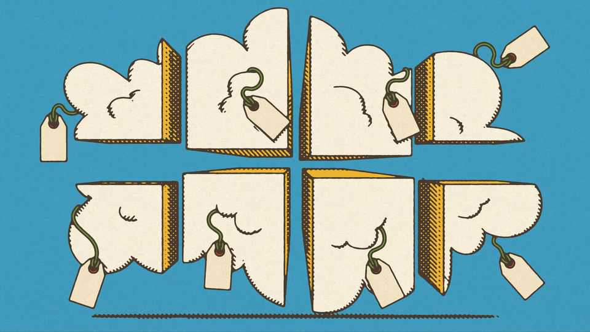
■
对期货和期权市场跟进原项目启动的期待落空。该项目于2016年关闭。但罗思先生及其合作伙伴比其他人更早抓住了时机。据研究机构Synergy估计，2026年第一季度全球企业用于云服务的支出达到1290亿美元，超过十年前整整一年的支出。数据中心领域正迎来大规模投资。美国五大云“超大规模”巨头计划今年投入约7000亿美元用于资本支出。市场最热门的领域并非用于通用计算的中央处理器（CPUs），而是用于训练和运行AI模型的图形处理器（GPUs）。如今一些企业用于人工智能及计算密集型任务的支出，已超过员工工资支出。曾是技术术语的“计算”（Compute）如今已进入日常用语。■
出售者希望将资产转化为现金流，购买者则想对冲关键且昂贵的投入品价格剧烈波动的风险。中间商正竞相开发金融工具以匹配这两类群体的需求。拥有并运营数据中心的企业当然希望从硬件中获取更多价值。一些专注于高端AI GPU的"新云"公司已将芯片价值作为贷款抵押品。2024年，澳大利亚投资银行麦卡利（Macquarie）协助为新云公司Lambda组织了5亿美元贷款，该贷款以借款人持有的英伟达（Nvidia）高性能芯片为担保，英伟达供应全球大部分AI芯片。同一家银行去年4月还为另一家新云公司Fluidstack批准了以GPU为抵押的贷款，但具体金额未披露。仅以GPU为担保的债务仍属罕见，即便对于持有大量芯片的新云公司而言亦是如此。
看似以GPU为担保的贷款，实际上可能更为普通。作为最大的新云服务商，CoreWeave（科里韦）运营着49个数据中心，其计算相关电力容量达1吉瓦，相当于中型核反应堆的规模。自2023年起，该公司已将芯片作为抵押物，从黑石集团（Blackstone）和磁铁资本（Magnetar Capital）等另类资产管理者处获得多笔贷款。这些贷款不仅以芯片为担保，还获得了CoreWeave客户提供的多年云资源合同担保。担保机制让贷款方安心，既确保CoreWeave能偿还债务，又无需过度担忧其GPU价值的快速折损。这种融资结构虽技术新颖，但模式却令人安心地熟悉——在收费公路等传统基建融资中常见。■
尽管这类工具对大型计算供应商有利，但大型买家需要不同的解决方案。通过多年期的新型云合约锁定价格，买家可防范计算成本上涨，却无法防范其大幅下跌。因此，随着全球企业持续增加对计算资源的投入，他们希望像对冲能源电价、利率或汇率波动一样，对冲计算成本的波动风险——理想情况下在深度且流动性充足的衍生品市场中。两家初创公司正试图帮助企业实现这一目标，即将追踪计算成本的新兴指数转化为期货市场。成立于2024年的Silicon Data（由交易公司DRW支持）已与运营大型衍生品交易所的CME Group达成合作。■
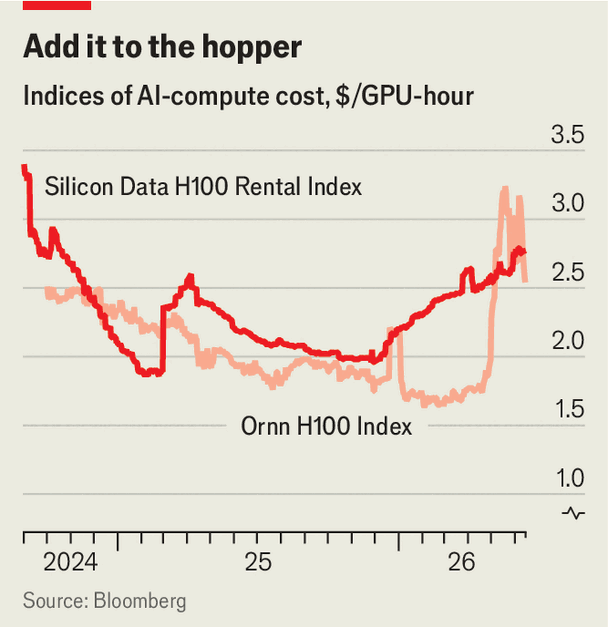
Ornn由麻省理工学院（MIT）近期毕业生创建，仅数月前还从公寓而非办公室运营，现已与纽约证券交易所母公司洲际交易所（Intercontinental Exchange）合作，计划推出计算期货。两家公司均计划于今年晚些时候在合作交易所推出交易。每家公司均拥有自己的指数，追踪特定高端芯片如H100的每小时租赁价格，例如Nvidia的主力GPU。Silicon Data的系列同时追踪交易量和报价，使指数更平滑。Ornn仅包含实际交易，使其指数更难被操控但波动性更大。目前Silicon Data的H100价格比Ornn高出约10%，两个月前则高出40%。两家指数均不太可能反映更广泛的市场，其中大部分为私人交易。■
拓展计算衍生品的吸引力需要标准化。正如罗思先生十年前发现的那样，这一过程颇为复杂。不同类型的芯片并非完美替代品。即便是同一芯片，由不同云服务提供商提供的产品，其性能和价格也可能差异巨大。数百或数千颗芯片的连接方式、所处环境及数据中心的位置等因素均会影响需求。此类问题使部分业内人士认为，一个功能完善的衍生品市场可能还需十年时间。指数提供商和衍生品设计者则合理地反驳称，任何现有市场在诞生之初都不是完全标准化的。即便是在深度且流动性充足的市场中，某些产品也会偏离基准——只需看看油价便知。■
3月，阿曼和迪拜（Oman and Dubai）的原油期货，主要面向亚洲买家交货，攀升至每桶150美元以上。与此同时，美国基准原油西德克萨斯中间基原油（West Texas Intermediate）的价格徘徊在每桶100美元以下。计算标准化前景值得乐观。英伟达Hopper系列芯片（包括H100型号）即便在新一代Blackwell系列芯片进入市场后，仍能保持大部分租赁价值。这与2025年3月黄仁勋（Jensen Huang，英伟达CEO）曾表示的“当Blackwell系列芯片开始大规模出货时，Hopper系列芯片一文不值”说法相悖。这也表明，计算衍生品的基础资产不会突然变得一文不值，这种风险可能抑制其采用速度。其他中间商也纷纷加入。软件公司Architect Financial Technologies在百慕大推出了计算期货交易所。■
Architect现在也开始推出自己的期货产品，与大型交易所展开竞争，并计划在美国建立一个名为“美国创新交易所”（American Innovation Exchange）的交易平台。Architect的CEO布雷特·哈里森（Brett Harrison）曾主管FTX US（美国加密货币交易所的分支），而该交易所于2022年崩盘。他表示，AI交易所（直白的简称）不仅希望为计算资源建立市场，还计划涵盖铜、银等原材料以及AI芯片和数据中心所需能源的来源。与此同时，Roundhill Investments和ProShares两家交易所交易基金（ETF）发行商已向证券监管机构提交文件，计划在计算资源期货推出后创建相关ETF。其他ETF发行商也申请推出相关“2倍杠杆基金”，通过杠杆放大收益（或亏损）。随着计算资源成为AI时代的货币，这些努力将不断加剧。■
正如哈里森先生（Harrison）所总结的，"突然，竞争一触即发。"■ 如需获取对经济、金融和市场领域重大事件的专家分析，请订阅我们的周度专属简报《Money Talks》。■
§055 美国消费者勒紧到何种地步？原题：How stretched is the American consumer? · 板块：Finance & economics · 栏目：财经
财经
当前关于美国经济最流行的担忧是：消费者正在透支未来。个人消费——作为美国经济的引擎，占GDP的三分之二——过去一年增长约2%，表现尚可。但4月个人储蓄率降至2.6%，这是自2008年初以来的最低水平，当时贝尔斯登银行（Bear Stearns）成为全球金融危机的首批受害者之一。有观点认为，消费疲软只是时间问题。1970年至2000年间，衡量美国人税后收入中剩余部分的个人储蓄率平均约为10%。
即便一年前，这一数字仍是四月水平的两倍。如今，年通胀率首次在三年内超过工资增长。唐纳德·特朗普的《一项美丽而伟大的法案》（One Big Beautiful Bill Act）带来的更大规模退税——每户家庭比去年多出约350美元——已基本发放完毕。因此，表面上看，低储蓄率似乎证明美国人正面临现金短缺。不过，也有一些良性解释。首先，这是人口结构问题。20世纪末的储蓄率得益于更高的劳动人口与退休人员比例，当时劳动者为退休储蓄，而退休人员则动用储蓄。如今，美国退休人员数量达到历史最高水平：领取社会保障金的人数在5月达到5450万（见图表1）。首次出现的是，超过一半的非劳动力人口年龄在65岁或以上。■
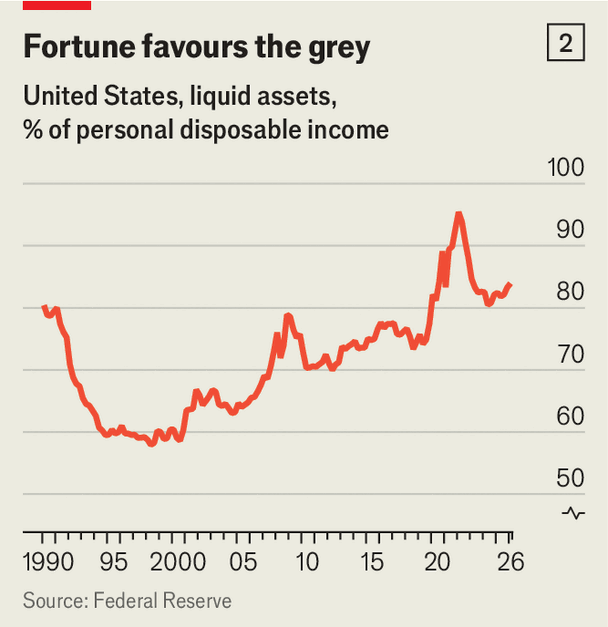
领取养老金的老年人通常当前收入低于在职者，但通过动用终身积蓄维持消费支出。这种消费模式以一种财务上无害的方式压低了储蓄率。考虑到人口结构因素，这一现象显得不那么令人担忧。美联储经济学家的研究表明，普通退休人员每年的消费支出比收入多出15,000至22,000美元。对于资产更多、收入更高的家庭，这一差距更为显著。在所有老年群体中，这种“动用储蓄”行为使整体储蓄率下降约五个百分点。因此，当前较低的储蓄率部分反映了美国老年人正在消耗过去积累的储蓄，且随着资产价值上升，其财富增长使消费更自由，而非年轻家庭面临资金枯竭。从家庭资产负债表来看，这一趋势显得更为乐观。
储蓄率衡量的是每月收入中剩余的钱，而非家庭已有的现金存量。而现有的现金存量看起来比每月的现金流更乐观。美联储（Fed）数据显示，流动性资产——包括现金、银行存款和货币市场基金——相当于年度可支配收入的约84%，这一比例自疫情前的不足70%已显著上升（见图表2）。这一缓冲并不局限于富裕家庭，其厚度甚至超过了储蓄率所暗示的。按财富划分，最底层50%的家庭平均流动性资产约为12,800美元，按实际价值计算，这是疫情前的最高水平（见图表3）。最新私营部门数据中绝无消费危机迫近的迹象。摩根大通（PNC）银行发现，5月信用卡支出（不含汽油）同比上涨近5%，接近四年来的最快增速。■
美国银行指出，零售、旅游、娱乐及其他非必需消费领域的支出表现尤为活跃。作为美国中西部超市风向标的沃尔玛报告称，今年第一季度交易量以自2024年以来最快的速度增长。叠加退税、挥霍无度的退休人群及大量现金储备，整体消费持续维持高位。但消费者并非无懈可击，股市大幅下跌可能削弱包括老年群体在内的消费意愿。尽管美国与伊朗达成试探性协议以重启霍尔木兹海峡，但油价料将维持高位数月。随着特朗普政府以法律途径推进调查——这是总统为正当化惩罚性关税所采取的手段，关税摩擦或进一步加剧。美墨加协定（USMCA）的未来仍存不确定性。■
美国消费者仍能承受诸多压力。但这并不意味着他们能承受一切。■ 如需了解经济学、金融和市场领域最重要的新闻的专家分析，请订阅我们的周度专属通讯《Money Talks》。
§056 俄罗斯的战争经济面临困境——但尚未崩溃 金融与经济 又来了 六月二十五日 二〇二六年 金融与经济 | 又来了 俄罗斯的战争经济存在诸多问题——但尚未濒临崩溃 弗拉基米尔·普京仍能为其侵略行为提供资金支持 六月二十五日 二〇二六年 这是终点了吗原题：Russia’s war economy has problems—but is not about to crash · 板块：Finance & economics · 栏目：财经
俄罗斯的战争经济面临困境——但尚未崩溃 金融与经济 又来了 六月二十五日 二〇二六年 金融与经济 | 又来了 俄罗斯的战争经济存在诸多问题——但尚未濒临崩溃 弗拉基米尔·普京仍能为其侵略行为提供资金支持 六月二十五日 二〇二六年 这是终点了吗？经过四年制裁突破式增长后，多家智库经济学家正集体叫停俄罗斯的战争经济。基尔世界经济研究所最新报告指出，俄罗斯正面临“结构性枯竭”。皇家联合服务研究所的查尔斯·海克尔认为，俄罗斯“很可能已陷入衰退”。国际战略研究研究所的尼格尔·高尔-戴维斯则称，俄罗斯政治经济将面临“即将到来的危机”。就连俄罗斯官方数据也显示，第一季度同比萎缩0.2%。 ■
自2022年入侵乌克兰以来，弗拉基米尔·普京的俄罗斯始终对那些曾预测经济灾难的预言者不屑一顾。该国通过与包括中国和印度在内的国家扩大贸易往来，违抗西方制裁，同时动用大量财政储备用于武装力量、基础设施和社会福利。按通胀调整后的人均GDP在2022年至2025年间增长了12%——在其他新兴市场国家的标准下表现疲软，且国防生产带来的增长并未惠及家庭，但与那些悲观预测相比仍不算糟糕。尽管面临新压力，经济尚未濒临崩溃。首先看官方统计数据，这些数据大多只是统计幻象。2025年1月增值税税率从20%上调至22%，促使俄罗斯人集中于年底进行大量消费，推高当季增长，却拖累下一季度表现。■
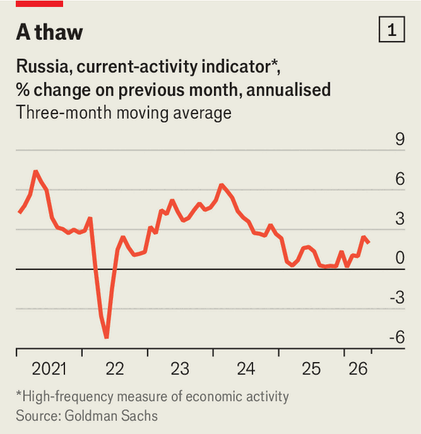
2026年初的工作日比一年前更少，即便按俄罗斯的标准，天气也异常恶劣。高盛集团发布的经济活动指标显示，增长乏力但未陷入衰退（见图表1）。另一家银行VEB的数据显示，得益于油价上涨，3月和4月GDP出现回升。俄罗斯几乎可以确定未陷入经济衰退。其他地区的情况则参差不齐。根据独立民调机构莱瓦达中心的调查，消费者信心有所下滑（见图表2），但这一指标仍接近历史高点。就业机会略有减少，但失业率仍接近2%的历史低位。由于乌克兰对俄罗斯能源基础设施的袭击加剧，俄罗斯出口化石燃料的难度加大，而油价也从伊朗战争期间的高点回落。■
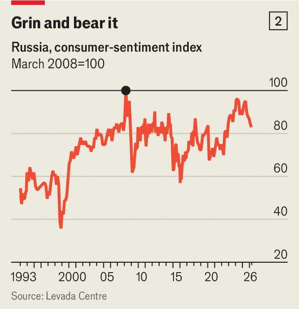
尽管如此，四月整体商品出口仍略高于去年同期。从某些方面看，经济正在改善。通胀水平已降至近期峰值逾10%的一半。实际工资已比2019年高出25%，仍在持续上涨。许多企业经营状况良好。从一月至五月，俄罗斯航空（Aeroflot）共运送乘客飞行400亿公里，比去年同期增长近10%。寡头阶层表现更为亮眼。从西方走私的豪华车销量上升，其中兰博基尼销量较2025年增长80%。这种韧性很大程度上归功于大规模财政刺激。去年政府将国内生产总值的7-8%用于军费开支。那些预见到危机的人认为，这些支出会从经济其他领域抽调人力，掏空国库。也许吧。■
然而，军费开支激增仅使俄罗斯GDP增长3-4个百分点，远高于战前水平，但并非无足轻重，也未达到引发巨大连锁反应的程度。民用经济基本维持现状，未出现萎缩。与此同时，俄罗斯的财政问题尚未达到严峻程度。为筹措战争经费，政府可提高增值税等税收；若出现当前约3%GDP的缺口，可动用应急储备金；还可从受控的国内市场借贷。必要时，普京的财政官员甚至可动用企业与家庭持有的卢布存款。此举虽属最后手段且可能带来实质性连锁反应，但谁又能阻止他们呢？综合考虑，俄罗斯今年GDP增长预计约为1%，与法国或加拿大相当。英国6月16日推出的更严厉制裁措施或会略微拖累这一增长。■
油价如果继续下跌，以及乌克兰对俄罗斯石油基础设施的更多袭击，都将对局势产生影响。但要真正阻止普京的战争经济持续运转，需要采取更加激进的措施。■ 如需获取关于经济学、金融和市场领域重大事件的专家分析，请订阅我们的周度专属通讯Money Talks。
§057 美国放宽对伊朗石油制裁是重大让步 Finance & economics原题：Waiving sanctions on Iranian oil is a huge concession by America · 板块：Finance & economics · 栏目：财经
伊朗足球队在世界杯上意外表现抢眼。6月21日，他们在洛杉矶将世界排名第9的比利时队逼平，使自己接近淘汰赛阶段。与此同时，伊朗外交官在瑞士取得更大胜利。6月22日，美国财政部推翻了长达四十年的政策，发布制裁豁免令，允许伊朗石油生产、销售和运输持续60天。此举将立即缓解伊朗政权的困境，长期来看可能使伊朗重获财富。 ■
美国于1980年禁止本国企业购买伊朗石油，以回应前一年伊朗扣押美国驻德黑兰大使馆人质的危机。2010年代初，美国又通过“次级制裁”对其他买家施加惩罚。这些制裁在奥巴马政府2015年达成的核协议下被暂停，但特朗普政府三年后撕毁协议后又以更严厉的形式重新实施。最新豁免措施比以往任何一次宽松措施都更彻底。此前特朗普政府在两国战争期间发布的豁免仅涵盖已装船的伊朗石油。奥巴马政府授予第三方国家的许可证要求其削减采购量，导致出口量从2011年的250万桶/日（b/d）降至2012年的150万桶/日。即便奥巴马的核协议也仅解除次级制裁。特朗普最新许可证则未设此类限制。■
美国炼油厂现在可直接购买伊朗石油，以美元结算，并通过被制裁的油轮接收——这实质上是暂时逆转1980年实施的原制裁禁令。为何在谈判尚未取得伊朗让步的情况下如此慷慨？Kpler公司数据分析师米歇尔·布罗哈德（Michelle Brouhard）指出，一个显而易见的动机是维持谈判进程——同时确保霍尔木兹海峡保持畅通——尽管以色列持续对黎巴嫩发动袭击导致紧张局势升级。她同时为美国能源部提供建议，称白宫还希望此举能压低油价、阻止中国获得廉价伊朗原油，并遏制伊朗关闭海峡的意图。但实际情况可能影响有限。原因之一是，美国在6月中旬解除对伊朗港口的封锁后，伊朗原油已更自由地流动。■
原油出口量从5月的几乎为零跃升至150万桶/日，维克托数据公司（Vortexa）的戴维·韦奇（David Wech）指出（见图表）。霍尔格岛（伊朗主要出口终端）的装船量也有所上升。但伊朗要达到战前每月200万桶/日的平均水平仍有相当距离。然而，布伦特原油（全球基准油价）价格自特朗普承认失败后几乎未变，表明市场早在豁免权宣布前就已预期伊朗出口量将大幅上升。若要出口量进一步增长、油价继续下跌，伊朗必须找到新的买家。近年来，其原油几乎全部销往中国东北部的小型“茶壶”炼油厂。阿格斯媒体（Argus Media）的汤姆·里德（Tom Reed）表示，这些炼油厂“相当兴奋”能以更低成本进行采购，无需费力掩盖交易。
然而，这些茶壶（指买家）难以轻易增加采购量；伊朗原油目前价格已与阿曼和阿联酋原油持平，限制了囤积的动机。其他买家若要出手，其银行家、保险公司和合规官员首先必须确信，他们能与伊朗开展超过60天的业务，并且特朗普不会突然撤销豁免权。他们仍面临欧盟和英国的制裁，这些制裁依然有效。此外，他们还需权衡将资金直接注入伊朗政权口袋可能带来的声誉风险，能源方面咨询公司（Energy Aspects）的阿米特拉·森（Amrita Sen）指出。这些障碍将让许多潜在买家望而却步。曾大量从伊朗购油的印度可能部分跟进。日本和韩国——这些国家在2010年代末仍为伊朗的稳定买家——若当前安排持续数周，可能会重新回归，阿格斯（Argus）的纳德·伊泰姆（Nader Itayim）表示。■
西方国家的采购可能在永久性协议达成前难以恢复。至于保持霍尔木兹海峡畅通，制裁豁免措施似乎难以实现美国所期望的明确性。特朗普总统于6月17日与伊朗方面签署初步协议后数日，伊朗宣布再次关闭海峡。非伊朗船只流量——在协议签署后曾一度回升——随即停滞，而伊朗船只运输量却在增加。目前看来，非伊朗船只流量似乎再度回升，但美伊之间的紧张局势也在同步升级。从长远来看，人们仍担忧伊朗可能试图对霍尔木兹海峡通行船只收取费用，从而限制交通流量。6月22日，伊朗表示将“管理”该海峡，并设立“电话热线”协调船只通行。换句话说，从美国角度看，目前的制裁豁免措施仍显无效。■
对伊朗而言，这是一大利好：它加速出口复苏，并通过释放近满储油罐的空间，使受限的生产得以重启。通过降低物流和支付环节的摩擦，伊朗石油公司及政权在每桶原油销售中能多赚一点。若许可证无限期续签（一些专家预计如此），伊朗将吸引更庞大且多元的买家群体。加上每年数十亿美元的过境费、解冻资产的回归以及特朗普承诺的3000亿美元赔偿基金，一位熟悉该地区的大型交易商表示，伊朗或将在十年内成为海湾地区最富裕的国家之一，而无需在核计划或支持麻烦代理人问题上做出太多让步。特朗普可能面临国内对近乎全面让步的反对，但这种结果的可能性正稳步上升。■
如需深入了解经济学、金融和市场领域的重大新闻，敬请订阅我们的每周专属通讯《Money Talks》。■
§058 宏观交易为何困难原题：Why macro trading is hard · 板块：Finance & economics · 栏目：财经
十年前，若能在英国脱欧公投投票结束后，提前窥见次日头条新闻并抢先交易，你愿意支付多少？若你押注英镑走势，这将大有裨益。公投当晚，1英镑可兑换1.5美元；两周后，汇率已跌至不足1.3美元。但若你交易股票，提前获知结果可能弊大于利。英国本土导向的FTSE 250指数起初下跌，仅持续两天交易日。随后便开启持续数年的牛市行情。即便最坚定的脱欧支持者也未必能预见这一结果。■
宏观交易，即押注资产价格如何随政治和经济趋势变动，既诱人又光鲜。但这项工作极具挑战性，一项由Elm Wealth（一家投资公司）的杰里·贝尔（Jerry Bell）、维克多·哈加尼（Victor Haghani）和詹姆斯·怀特（James White）共同进行的新研究揭示了这一点。他们设计了一个模拟实验，让人类和领先的AI模型提前获取次日新闻，并在新闻公布前进行交易。换句话说，他们可以比市场其他参与者更早入场。然而，即便拥有这一优势，无论是人类还是机器，要避免破产并实现盈利仍属不易。贝尔及其同事正在更新一项2023年首次开展的实验。当时，他们招募了118名志愿者，其中大多数正在顶尖大学攻读研究生阶段的金融学课程。■
每位参与者被给予50美元，并有机会通过在标普500指数和30年期美国国债上押注来增长这笔资金。他们可每天对每项资产进行一次交易，交易时间设定为15个交易日的收盘前，这些交易日由作者从2008年至2022年间选取。在交易前，参与者会看到次日《华尔街日报》的头版内容——例如周一收盘时会展示周三的头版（周二实际的价格变动被删除）。他们可对每项资产进行做多或做空操作，并可将押注杠杆放大至最高50倍。例如，2%的价格波动将转化为赌注翻倍的投机。每笔交易将在下一个交易日收盘时终止。多数参与者并未表现出色。约半数人亏损，六分之一彻底破产；最终平均资金池仅为51.62美元，仅实现3.2%的收益。■
自那以后，Elm在其网站上举办了一场类似的游戏，初始虚拟赌注为100万美元。参与该游戏的6万多人表现“明显更差”于原始实验的付费群体。更令人意外的是，在最新一轮实验中，几个领先的AI模型也未真正表现出色。Elm团队让ChatGPT、Claude、Gemini和Grok各进行十轮游戏，初始资金同样为100万美元，并告知它们扮演一位中年美国投资者，管理全部金融资产。仅ChatGPT和Claude获利，平均结束资金分别为150万美元和260万美元。Grok的最终资金为97万美元，Gemini仅为49万美元。那么为何宏观交易如此困难，甚至拥有预知未来能力的人也难以应对？最大的教训是，无论是人类还是AI，都难以准确判断下注规模。■
作者指出，即使是ChatGPT和Claude在这一点上也既幸运又技术娴熟。所有模型在预测股票和债券走势时，正确预测方向的频率均不超过60%。但它们对赌注的平均杠杆率却在7到12倍之间。鉴于自2000年以来，美国股市有23个交易日波动超过5%，7个交易日波动超过9%，这些模型因此面临“资本灾难性损失的过度风险”，包括彻底清零的可能性。人类的表现更差。在原始实验中，整体而言，玩家在新闻使价格变动易于预测时并未加大下注力度。与AI模型类似，他们整体风险敞口过高。30%的交易日，他们使用杠杆超过20倍，这很容易导致破产。当然，有些人类表现更为出色。■
《经济学人》的Elm团队还邀请了五位专家宏观交易员参与他们的原始游戏。五位专业交易员全部实现盈利，平均回报率达130%。他们在预测市场方向上的命中率略高于AI（63%）。但关键在于，他们根据自身信心调整仓位规模，自信时下大注，不自信时则几乎不交易。即便拥有出色的预判能力，判断应买入哪些资产已属不易，而决定买入多少则更为艰难。■ The Economist的订阅者可注册我们的Opinion通讯，汇集了最佳的社论、专栏、特稿及读者来信。
§059 人工智能会降低利率吗原题：Will AI lower interest rates? · 板块：Finance & economics · 栏目：财经
1990年代担任美联储主席的爵士乐爱好者艾伦·格林斯潘（Alan Greenspan）被誉为货币政策的指挥家。许多同事认为失业率已低至足以引发通胀，因此呼吁加息。但格林斯潘却听到了不同的旋律。通过零售业利用卫星追踪库存、航空公司借助计算机调整票价以匹配需求等轶事，他推断出IT驱动的生产率增长正在悄然兴起，尚未反映在官方统计数据中。因此，经济可以在不引发通胀的情况下实现更快增长。
■
他于1996年和1997年大部分时间维持利率不变，相信自己的推断胜过经济模型。一段时间内，这种做法确实奏效。美联储新任主席凯文·沃什（Kevin Warsh）自诩为格林斯潘（Alan Greenspan）的继承者。在他看来，人工智能将扩大供给并降低成本，使经济在通胀压力较小的情况下实现更快增长。他也认为生产率统计数据将延迟公布。去年12月的一次采访中，沃什称赞格林斯潘“从轶事和较为晦涩的数据中形成观点”，认为当数据与轶事出现分歧时，央行应更信任后者。他将企业高管眼中闪烁的“兴奋光芒”视为生产率革命正在发生的证据。这构成了沃什更广泛论点的一部分，而这一观点遭到许多同事质疑：即人工智能是一种抑制通胀的力量，要求降低利率。■
沃什是否从他的偶像身上汲取了正确的教训？短期内，人工智能对利率的影响取决于供给与需求之间的竞赛。目前，需求方占据上风。债务驱动的数据中心、芯片和发电厂投资激增，股市牛市让持股公众产生财富幻觉，即便收入增长放缓，消费仍被推高。正如芝加哥联储的阿斯坦·古尔斯比（Austan Goolsbee）所警告的，“炒作越盛，利率可能越需上升以防止过热。”美联储的新任指挥者已听到了需求方强劲的铜管声。他的押注是，供给方相对沉静的弦乐声终将加入合奏。随着企业围绕人工智能重组工作流程，同样的工人与机器应能产出更多，降低单位成本并扩大经济产能。然而，即便供给侧发生变革，也可能无法实现沃什所期待的更低利率。■
这是因为更高的生产率会提升实际收入，从而激发新的需求，使短期内对利率的影响难以确定。另一个相关且更长期的因素也指向更高的利率。如果人工智能推动经济更快增长并提升未来收入，它也很可能推高“中性利率”（r-star，即货币当局既不刺激也不抑制经济的实际利率）。这一逻辑并不陌生：一个即将毕业的学生若预期未来收入丰厚，今天就更愿意借贷。同样，家庭会基于更高的未来收入借贷，企业也会因预期回报上升而增加投资。这两者都会增加对资本的需求，从而推高平衡储蓄与投资所需的利率。伦敦大学学院的卢卡什·拉切尔（Lukasz Rachel）近期研究估计，人工智能可能使r-star（中性利率）上升约1个百分点。■
如果他的观点正确，即便供给与需求重新平衡，重返疫情前超低利率时代仍不太可能。若身处一个良性超级智能时代，高生产率的人工智能使人类得以追求闲适生活，是否仍会得出相同结论？原则上是的。爆炸性增长将使人们预期未来收入激增，从而增加当前消费。反之，若人工智能开始被视为对人类生存的威胁，为何要为可能不会到来的未来存钱？无论如何，利率必须大幅上升以促使人们储蓄。某些力量可能拉低长期利率的自然水平。若超级智能使知识工作商品化并加剧竞争，企业加价、利润和预期回报可能缩小，削弱投资需求。面对劳动力市场剧变，家庭可能增加预防性储蓄，而非借贷以期更光明的未来。■
岗位的大规模流失可能进一步压低中性利率。如果收入更多流向资本所有者而非劳动者，整体支出可能减弱，因为富裕阶层对每增加一美元收入的储蓄比例更高。通过将收入重新分配至更倾向于消费的家庭，再分配或许能部分抵消这一影响。若缺乏这种再分配，即便生产潜力持续攀升，也可能出现储蓄过剩——这种由顶层丰裕引发的长期停滞。所有这些结果至少在理论上都可能发生，这表明沃什先生（Mr Warsh）在探讨人工智能与利率关系时应保持谦逊。即便人工智能革命如技术乐观者所言般颠覆性，其对利率的影响方向仍取决于收益如何精准渗透至经济体系，以及谁最终掌控这些收益。■
各种情景的范围也揭示了历史类比的局限性。人工智能可能远非普通技术。即便1990年代的历史重演，格林斯潘的记录中还包含着沃什似乎未察觉的第二重趋势。这位美联储主席曾率先察觉生产率增长的热潮，但随后却担忧由此释放的需求冲击。1996年他便警告资产价格出现“非理性繁荣”。当热潮已全面展开时，格林斯潘又警告更快的生产率增长将导致“总需求增幅远超潜在总供给增幅”。为此美联储在1999年6月至2000年5月间加息六次。即便如此，政策仍已落后于形势。到2000年初，通胀率已接近十年来最高水平；不久后资产泡沫便破裂了。■
沃什先生或许已经掌握了大师乐谱的第一部分，但他应仔细聆听尾奏。■《经济学人》订阅者可注册我们的观点通讯（Opinion newsletter），该通讯汇集了本刊最佳评论员文章、专栏、特邀评论及读者来信。
§060 为何大型AI实验室大量招聘哲学家原题：Why big AI labs are hiring so many philosophers · 板块：Science & technology · 栏目：科技
十年前，随着AI革命加速推进，艺术与人文学科的学生被告知，若想提高就业竞争力，应“学习编程”。这或许是个糟糕的建议。如今，程序员们反而担心AI会夺走他们的工作，他们或许该考虑学习哲学思考。今年早些时候，美国联邦储备银行（纽约分行）发布的数据显示，美国哲学专业毕业生比计算机科学专业的同龄人更可能拥有工作。■
2024年，最新可获得数据的年份显示，计算机科学专业的毕业生失业率为7%，而哲学专业毕业生仅为5.1%。许多哲学系学生正被人工智能公司直接吸纳。耶鲁大学哲学教授卢西亚诺·弗洛里迪表示，学生们在毕业前就已获得工作邀约。学术界也在发生转变。弗洛里迪形容哲学系人才流失规模为"严重外流"。哲学能为人工智能研究者提供的某些启示源远流长。正如古希腊哲学家柏拉图所描述的苏格拉底方法，通过假装无知和逐步提问来澄清含义、发现矛盾并揭示影响。而当前许多人工智能系统则倾向于奉承。■
慕尼黑路德维希-马克西米利安大学哲学与人工智能专家乔尔·诺勒（Jörg Noller）表示，采用苏格拉底式教学法训练的模型更少追求取悦他人，更倾向于追求真理。此外还有“苏格拉底式无知”的概念。在《申辩篇》中，柏拉图让苏格拉底声称，他的智慧主要体现在意识到自己知识的匮乏。将这种谦逊植入模型有助于遏制过度自信，这是诺勒博士描述为“AI不成熟”的常见缺陷。谷歌DeepMind（位于伦敦的人工智能实验室）高级哲学家伊亚松·加布里埃尔（Iason Gabriel）则将行业范围内幻觉现象的减少归功于此类努力。更广泛地说，他表示哲学课程是“一种强大的机制”，可提升被称为“思维链”的长期AI推理过程。哲学训练还能以更具体的方式影响模型的视角。■
将约翰·洛克的著作输入AI法律助手，德克萨斯大学科技哲学家托马斯·波瓦尔斯（Thomas Powers）认为，模型会倾向于将强有力的财产权视为政治自由的基础。但如果你不喜欢这些原则，模型开发者还有其他选择。美国科技巨头IBM推出的“Granite”系列模型配备了调节器，使企业客户能更精准地调整输出以契合自身的企业哲学。IBM负责任AI负责人弗朗西斯卡·罗西（Francesca Rossi）表示，这些调节器可帮助用户在哲学上的权衡——例如个人自主与社会和谐之间的平衡。哲学也能助力安全。研究人员已记录了AI模型的各种危险行为，包括试图规避监管甚至勒索用户。■
AI宪政主义是模型开发者遏制此类不当行为的一种方式。这一理念涉及在模型构建中融入从具有法律或道德权威的哲学著作中提炼出的规则与原则框架。旧金山的AI实验室Anthropic是这一理念的倡导者之一。其Claude模型的“宪法”已纳入了从伊曼努尔·康德、苹果公司服务条款到《世界人权宣言》等多元来源的材料。由Anthropic首席哲学家阿曼达·阿斯凯尔（Amanda Askell）主导的最新版本于1月21日发布。部分Anthropic员工戏称这份78页的“宪法”为Claude的“灵魂文件”。不过最大的疑问在于，这些“宪法”究竟应包含哪些规则。哲学家们聚焦于两种主要的伦理框架。其一是义务论。
深受康德等人的推崇，这种理念制定了严格规则，禁止诸如说谎、胁迫以及将人视为手段而非目的等行为，即使是为了更大的善。Anthropic的宪法融入了诸多义务论约束。普华博士表示，这些约束能让AI行为更加一致，这对在家庭和公共场所部署机器人而言是个优势。以义务论视角看待世界的模型还有其他益处。其中之一是更高的诚实度，这一特质在Claude中被广泛提及。牛津大学哲学家尼克·博斯特罗姆指出，更诚实的模型更少误导用户。另一家硅谷实验室Inflection AI则将义务论约束应用于其Pi聊天机器人，该机器人旨在提供情感支持。其首席执行官肖恩·怀特表示，Pi擅长识别处于自我伤害或伤害他人的风险中的用户。■
弗洛里迪博士指出，义务论宪法也有助于法律合规。哲学家们对人工智能伦理感兴趣的另一种方法称为功利主义。这种理论通过权衡成本与收益来决定该采取何种行动。更倾向于功利主义的模型包括OpenAI的ChatGPT和谷歌的Gemini。谷歌的AI模型设计目标是"确保整体收益远大于可预见的风险"，这正是经典功利主义的目标。功利主义算法在自动驾驶汽车软件中同样至关重要：若事故无法避免，必须选择最能减少悲剧的碰撞方式。Waymo公司（一家自动驾驶汽车制造商）高级工程师克里斯·杰德斯表示，行业趋势是让驾驶软件更加遵循功利主义原则。功利主义也是人工智能武器系统的核心理念。■
军事目标必须与可能造成平民伤亡的风险进行权衡，杰克·沙纳汉（Jack Shanahan）如此表示。他曾担任美国联合人工智能中心（Joint Artificial Intelligence Centre）负责人，该机构研究人工智能在美军中的应用。棘手的问题层出不穷——这正是哲学家最常探讨的议题。是否存在义务论规则应被突破的案例？当后果不明确时，如何做出决策？人工智能系统是否应考虑动物福利或生态环境状况？斯蒂芬·黑克（Stefan Heck）提出疑问，这位哲学家兼Nauto公司（Nauto）首席执行官，该公司开发用于卡车及其他商用车辆的人工智能安全系统，是否在道德上可接受优先保护年轻行人而非老年人？他预测将出现充满伦理争议的诉讼：毕竟后果论算法明确允许造成某种损害，只要其设计目的是避免更严重的后果。■
批评者担忧“道德去技能化”：如果计算机越来越多地承担伦理判断，人们是否会变得不愿自己做决定？路易斯维尔大学人工智能理论家罗马·亚姆波尔斯基（Roman Yampolskiy）认为，道德“历史上不稳定、文化差异显著、战略上可被操控，且往往只能在事后才被解读”。失业的程序员们注意：人工智能哲学家似乎并不缺乏工作。■ 好奇世界？想享受我们拓展思维的科学报道，订阅我们的周度会员专属简报Simply Science。
§061 体外受精（IVF）辅助技术是否能提高成功率原题：Do high-tech “add-ons” increase the chance that IVF will work? · 板块：Science & technology · 栏目：科技
通过体外受精（IVF）尝试怀孕往往令人失望。约60%的IVF尝试以失败告终。生育诊所提供一系列声称能提升客户成功率的检测和程序。但一项发表于6月23日《柳叶刀-妇产科学与妇女健康》的证据综述发现，多数此类“IVF辅助技术”缺乏确凿证据支持其有效性。令人担忧的是，大量已发表的证据存在疑点。该综述分析了157项针对不同IVF辅助技术的随机试验。■
研究人员对每项研究进行了检查，以识别数据可能被操纵的迹象。这份检查清单由生育研究人员（包括部分评审作者）于2023年开发，他们注意到欺诈性研究数量在不断增加。检查内容包括不合理的研究时间线、异常的参与者数据或试验文件中的漏洞。结果显示，近半数试验未通过审查。其余85项研究覆盖了十种常用补充疗法，其中仅三种疗法显示出潜在益处，但证据并不充分。■
涉及的三种程序包括子宫内膜刮擦（故意扰乱子宫内膜）、胚胎胶（将胚胎浸泡在透明质酸溶液中，该物质天然存在于生殖道）以及生理胞浆内单精子注射（PICSI，旨在筛选高质量的单个精子细胞）。另外三种辅助技术的数据虽然也有限，但似乎对成功怀孕的概率没有影响。这三种技术包括糖皮质激素（一类抗炎药物）、胚胎染色体异常检测以及子宫内膜活检以评估基因表达。剩余四种程序的数据量不足，无法得出明确结论。■
这些疗法包括针灸、通过静脉注射从鸡蛋或大豆中提取的脂肪（希望借此平息对胚胎的免疫反应），以及将富含血小板的血浆注射到子宫或卵巢（血小板富含促进组织再生的蛋白质）。这些试验不仅数量稀少，规模也普遍较小。中位数试验仅包含约160名患者，这会限制其检测细微或微妙效果的能力。评审者无法排除某些疗法可能对部分患者有效的可能性。但要明确哪些患者可能从中受益，仍需更多且更高质量的研究——以及像鹰眼般审慎的期刊编辑在发表前剔除可疑研究。■ 好奇世界？
订阅我们的《Simply Science》周报，即可享受启发思维的科学报道。■
§062 电子设备可如今打印至活体组织原题：Electronics can now be printed onto living tissues · 板块：Science & technology · 栏目：科技
这项技术起源于20世纪80年代 旨在快速制作塑料原型模型。如今 3D打印——或称“增材制造”——已用于制造厨房小工具、喷气发动机部件、牙科植入物，甚至部分建筑。在《科学进展》（Science Advances）发表的一篇论文中，由德克萨斯州莱斯大学（Rice University）孔永林（Yong Lin Kong）及其同事领导的研究团队提出了一种新应用。他们开发出一种方法，可将电子电路打印至脆弱材料，包括活体组织。 ■
研究人员希望，这一技术最终能催生出能够无线监测受体健康状况的医疗植入物、高科技药片等产品。3D打印电路并非新概念。例如，总部位于马萨诸塞州的纳诺维度公司（Nano Dimension）已将电子元件打印进通信设备和医疗传感器中。新墨西哥州的奥普特梅克公司（Optomec）生产的打印机则能直接在智能手机外壳内嵌天线，并在触摸屏和太阳能板上打印电路。该工艺使用电子墨水，其中含有铜、银或金等导电材料的微小颗粒。这些颗粒随后通过一种称为退火的工艺熔合，形成导电通路，该过程通常通过将整个产品放入炉中加热，或用激光照射墨水来实现。不过，这种方法存在局限，孔博士（Dr Kong）指出。
孔博士及其团队认为，他们已成功克服了这一问题。他们开发出一种方法，利用聚焦成比人发更细的微波束对电子墨水进行退火处理。这种光束的精准性确保只有墨水颗粒受热，避免对周围物质造成损害。研究人员制造了一种特殊谐振器以增强微波能量，并采用锥形尖端将光束聚焦成直径不足200微米的点。该设备体积紧凑，可安装在桌面3D打印机上。通过调节光束功率，可改变墨水的微观结构。■
这种技术可以用于在电路中创建高或低导电性的区域，从而在导线内部制造电阻器等元件。孔博士及其团队已设想了多种应用。3D打印技术已用于制造可移植的生物组织，包括心脏瓣膜和气管，无需人类或动物捐献者。加入电路后，这些移植物可转化为无线传感器，实时监测患者病情进展，甚至刺激所打印器官的活动。作为概念验证，研究人员已将应变计打印在牛股骨以及用于人类患者人工膝关节和髋关节的聚合物上。另一个设想是将电路打印在“可吞食的诊断设备”上。
本质上是计算机化药丸，这类药物旨在从患者体内传递信息或精确控制药物释放。研究人员甚至成功将湿度传感器打印在活体叶片上。看来，自然界将成为增材艺术家们的新画布。■ 对世界充满好奇？想享受我们拓展思维的科学报道？订阅我们的周度专属简报《Simply Science》。
§063 婴儿配方奶究竟有多好原题：How good is infant formula? · 板块：Science & technology · 栏目：科技
婴儿配方奶自1865年普鲁士（Prussia）推出首款专利“婴儿汤”以来已取得长足进步。这款配方奶由牛奶、碳酸钾、小麦和大麦粉制成。如今，美国食品药品监督管理局（FDA）要求婴儿配方奶必须含有至少30种营养素，包括铁、碘和维生素D。如今的配方奶生产商同样热衷于向公众宣传他们产品中添加的额外成分。2023年，英国医学期刊（BMJ）发表了一项研究，分析了15个富裕与欠发达国家的757款配方奶产品。
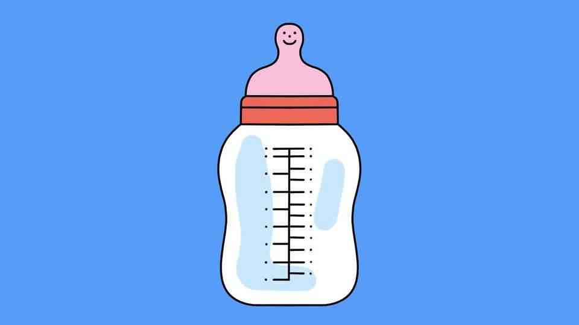
■
许多厂商宣称其配方奶粉添加了益生元、益生菌和长链多不饱和脂肪酸（LCPUFAs；其中部分成分在英国和欧盟销售的配方奶粉中必须包含）。所宣称的益处包括“促进生长发育”和“增强免疫系统”。最常见的宣称出现在超过半数声称有益的配方奶粉中，即这些产品有助于大脑、眼睛或神经系统发育。这些宣称是否成立？婴儿配方奶粉通常被归类为食品而非药品，这使它们在宣称益处时无需依赖严格的试验支持。评估的四分之三产品未引用科学文献。所引用的文献中，仅半数为临床试验，而这些试验中不到三分之一已注册。■
在少数采用随机对照试验的注册研究中，近九成的声明依赖于研究作者认为存在高偏倚风险的证据。行业资助和利益关联普遍存在。这种偏倚风险或许会让一些家长有所顾虑，但其本身并不能证明这些声明是错误的。唯有证据才能做到这一点，而根据科学家目前所能判断，这些证据存在不确定性。一项于2017年更新的综述分析了15项涉及1,889名婴儿的随机对照试验，结果显示，接受补充LCPUFAs配方奶的婴儿在大脑发育或视力敏锐度方面并未优于接受低强化配方奶的婴儿。2021年发表的一项研究则分析了1,607名英国青少年，发现那些婴儿期接受过补充配方奶的人并未在学业表现上获得优势。■
另一方面，一项涉及1,039名婴儿的九项随机对照试验荟萃分析于2025年发表在《Nutrients》期刊上。研究发现，食用补充了两种长链多不饱和脂肪酸（ARA和DHA）的配方奶的婴儿在认知发展方面出现了轻微但具有统计学意义的改善。美国食品药品监督管理局指出，其他研究显示，早产儿可能尤其受益。配方奶在试验中通常证明是安全的。不过专家担忧，配方奶带有科学优越感的煽情营销可能削弱母乳喂养。母乳喂养相对于任何类型的配方奶的好处已得到充分证实。许多研究将母乳喂养与婴儿感染率降低联系起来；近期的一些研究则将其与哮喘和过敏的发生率降低相关联。■
母乳喂养的成本也远低于购买配方奶，即使考虑到哺乳期妈妈需要额外摄入的热量。美国食品药品监督管理局（FDA）以及许多发达国家的健康机构都建议母乳喂养是最理想的选择。但若母亲无法进行母乳喂养，或需要额外补充配方奶，也不必过于担忧。如今的婴儿配方奶是安全且营养丰富的，尽管部分营销宣传可能超前于科学。■ 了解健康与 wellness 的免费、基于证据的指南？订阅我们的每周 Well Informed 通讯。
§064 文化原题：Is America becoming a gerontocracy? · 板块：Culture · 栏目：文化
与任何富裕国家的年轻人交谈，类似的抱怨总会浮出水面。20岁的埃利亚胡·爱德华兹正在华盛顿特区上大学，他说住房“完全不具可负担性”。房价“不断飙升，似乎没有任何东西能让它们下降”。年轻人想要住在有好工作的地区，但开发商却难以建设，成千上万的二十多岁年轻人被困在父母的地下室里。问题的根源可能是……老年人？“参加任何规划委员会会议，你都能清楚看到代际间的分歧，”弗吉尼亚州的YIMBY组织者乔·格尔布赫说。■
银发族NIMBY（邻避主义）者反对任何可能破坏他们视野或让停车稍显困难的新建筑。年轻人则通常根本不会到场。"如果你在周二下午四点举行公开听证会，退休人士要赶到现场比35岁、有家庭的职场人士要容易些。"耶鲁大学教授萨缪尔·莫因在《美国的银发统治》一书中指出，美国由老年人统治。这不仅因为唐纳德·特朗普年满80岁，或其前任在82岁离任时已明显失能。莫因认为，社会更倾向于保护老年人，阻碍年轻人，"更执着于保存而非革新"。在政治领域，他确实有道理。美国立法者随着年龄增长权力反而增大，而当他们无法胜任工作时，缺乏有效的淘汰机制。■
得克萨斯州议员凯·格兰杰（Kay Granger）在养老院居住且患有痴呆症的情况下仍继续履职。加州参议员迪安娜·费因斯坦（Dianne Feinstein）在任职期间去世时年仅90岁，她常无法理解周围发生的事情。在大多数职业领域，人们到了一定年龄会逐步交出职责，一旦无法履行职责便会彻底放弃。但政治领域并非如此。参议院“临时议长”（president pro tempore）一职，作为美国总统继任顺序中的第三顺位，传统上由任职时间最长的议员担任。现任该职位的是爱荷华州参议员查克·格雷西（Chuck Grassley），他今年92岁。即便更年轻的政客也必须向年长的选民让步，因为年长者比年轻人更可能投票。美国选民的中位年龄为52岁。■
更重要的是，主要选民（他们选出约占国会众议员90%的议员，这些席位无法由对方政党赢得）的中位年龄为65岁。莫因先生指出，选举越乏味，选民群体往往越年长。《公园与游憩》中的一个角色曾说：“老年选民基本上是唯一参与地方选举的人。如果你想赢，就必须争取老年选民的支持。”在富裕国家，政客们往往更倾向于支持老年人而非年轻人的利益。从巴西到法国，这使得养老金改革极其困难。在美国，任何试图改革的领导人，都会在攻击广告中被描绘成将祖母推下悬崖。莫因先生认为，老年人对未来投入较少，因此更倾向于选择较低的税收，而非优质的教育或基础设施投资。■
他们往往对飙升的公共债务毫不在意，因为偿还债务的负担将由他人承担。2016年，特朗普在一次简报会上仅用五分钟就草草结束，耸耸肩说：“是啊，但我会离开的。”特朗普成为历史上为国家债务增加最多的总统。在外交政策方面，民调显示年轻人最关注的长期议题是气候变化，而年长者则担忧恐怖主义。如今的美国政府将气候变化视为骗局，频繁谈论“恐怖主义”，甚至给疑似毒品走私者贴上标签，有时在处决他们之前就先贴上标签。这种做法看似对年长者电视观众严厉，却对毒品供应毫无影响。■
年轻选民日益失望：博科尼大学（Bocconi University）的阿尔诺·阿马莱斯（Alonso Amarales）研究发现，当政治领袖的年龄远高于其所代表的群体时，民众对民主制度的信任往往会减弱。莫伊恩（Mr Moyn）批评老年人在政治领域拥有不成比例的影响力，这一观点是正确的。但当他描述他们在职场中的权力时，论据就显得有些牵强。他指出，老年人主导企业，垄断机会并让年轻人陷入低薪职位，称此为“老年资本主义公司”（Gerontocracy, Inc）。然而他列举的最引人注目的例子却来自一个非典型行业——学术界。终身教职使许多教授难以被解雇，因此他们在表现欠佳后仍长期占据教职岗位。其他行业并非如此，随着员工年龄增长和生产力下降，其薪资往往趋于减少。■
薪资通常在40多岁到50多岁达到顶峰，此时员工经验丰富但精力充沛，之后随着接近退休逐渐减少。莫伊恩先生主张设定强制退休年龄。这在法官身上或许合理，因为他们掌握巨大权力且几乎无法被解雇，或在飞行员身上也适用，因为随着年龄增长反应变慢可能危及生命。但对大多数职业而言，这种做法毫无意义，雇主应自由决定是否长期雇佣员工，只要双方受益。莫伊恩先生声称，强制退休将为年轻人腾出岗位，却陷入“劳动力供给固定论谬误”。他还兴奋地认为这将减少不平等，因为老年人比年轻人更富裕——尽管这主要因为他们储蓄时间更长。他对强制提前退休带来的财政后果却显得异常淡定。■
例如，维持公共养老金体系可持续的唯一可行方式，是将退休年龄与人均寿命同步提高。莫伊恩先生认为这纯属胡说：美国竟能在缩短人们工作年限的同时，维持福利计划的运转。（社会保障信托基金预计将在2032年耗尽。）如果老年人享受工作呢？那就别指望了。那些“沉迷于自己的职业”或“对重要性的执着”者，应获得帮助重新定义生活的意义。若能帮助退休人员找到有意义的爱好或志愿工作，强制退休也能变得有吸引力。我是政府人员，来教你们打‘匹克球’。莫伊恩先生还主张限制他们的投票权，因为老年人对结果的影响力较小。
一种想法是降低年长者投票权的价值，使他们在83岁时仅拥有十分之一的投票权。另一种方案是让18至25岁的年轻人每人拥有两票。“为什么每个人都应拥有平等的投票权？”莫因先生问道。法官们会回答：因为民主的体面和宪法如此规定。法官们总说些令人难以置信的话；也许是因为他们年纪大了。简而言之，莫因先生指出了一个真实问题，却提出了荒谬的解决方案。国会或许由老年人主导，但职场并非如此。阻止银发族纳税人继续工作并非让社会更公平的途径。正如关于人工智能的讨论所揭示的，工作不仅提供收入，还赋予人们意义；迫使他们过早退休则是酿造悲惨暮年的配方。■
了解更多关于最新书籍、电影、电视剧、专辑及争议事件，请订阅我们的周度专属电子报Plot Twist ■
§065 为何萧条史书市场火爆原题：Why the market for histories of depressions is red hot · 板块：Culture · 栏目：文化
美国作家利亚库特·阿哈迈德（Liaquat Ahamed）选题恰到好处。他的首部著作《金融大亨们》（Lords of Finance）揭示了1929年华尔街股市崩盘后，鲁莽的央行行长如何将全球拖入大萧条。该书于2009年出版，当时危机正萦绕在政策制定者的脑海与口舌之间。他的新作同样切中时弊。飙升的股市行情让部分投资者陷入两难：一方面对AI热潮充满狂热，另一方面又担忧这波繁荣终将泡沫破裂。
或许正因如此，安德鲁·罗斯·索金（Andrew Ross Sorkin）去年出版的关于1929年华尔街股市崩盘的著作《1929》在《纽约时报》畅销书榜单上停留了超过六个月。在《1873》一书中，阿哈迈德（L. Randall Wray）讲述了19世纪全球铁路热潮如何逐渐消退，从而引发了当时被称为“大萧条”的危机。人工智能热潮常被与铁路热潮相提并论，但此书揭示了这种类比对当今科技创业者而言显得过于抬高（尽管作者并未提及他们）。■
在1870年前的二十年间，英国、美国、法国和德国这四个主要经济体的产出几乎翻了一番，全球贸易量则增长了五倍。“推动这一增长浪潮的，”阿哈迈德先生写道，“是资本投资的激增……由铁路建设引领。”1869年，横贯大陆铁路在美国建成，将纽约至旧金山的旅行时间从六个月缩短至六天。这一切为何走向崩溃？正如许多繁荣时期一样，投资者对革命性新技术的合理乐观最终与现实脱节。中欧的牛市因普法战争后法国向德国支付的战争赔款而被进一步推高，“犹如直接向血液中注入一剂可卡因”。柏林上市的大型公司股价在两年内翻倍，至1872年达到顶峰。■
维也纳股市在三年内股价飙升四倍，1873年，一批奥地利铁路高管因欺诈被逮捕，股票需求最终疲软，尽管大量新股持续发行。数月内，一场巨大崩盘随之而来。维也纳银行股单日暴跌45%，美国铁路公司也因欺诈问题集体违约。全球借贷骤停，产出随之萎缩。全球范围内，崩盘引发“价格剧烈通缩，影响持续了整整四分之一世纪”。美国工业生产下降6%，批发商品价格下跌35%。这对政府债券持有者而言却是好消息，因为货币购买力上升使债券价值大幅上升。■
但对另一些人而言，债务实际价值的持续攀升是一场灾难。“失利者来自社会各个阶层，遍布全球每个国家和大陆，”阿哈迈德先生写道。2026年，随着人工智能热潮呈现出明显的狂热特征，许多情况听起来既熟悉又令人不安。事实上，阿哈迈德先生深入研究且条理清晰的叙述，应让悲观者稍感宽慰。因为这场危机本不必引发数十年的动荡。1873年（乃至“1873”）的教训表明，只有诸多因素同时出错，才会造成持续性的巨大冲击。正如1930年代那样，此次危机因政策制定者的失误而加剧。阿哈迈德先生主要归咎于“完全不必要的全球货币体系重组”，这源于铁路狂热。■
在短短两年内，美国和欧洲大陆大部分地区（尤其是法国和德国）放弃了白银作为货币金属，转向纯金本位。这一决策恰好切断了本应扩大以应对经济萧条的货币供应，将一场金融危机转变为长达四分之一世纪的通缩。如今的央行行长们早已被训练成最恐惧通缩、一有迹象便出手救助经济，他们绝不会犯下类似的错误。若19世纪的同行们采取不同行动，1873年的危机或许只会被记作一次小挫折：不过是众多股市恐慌中的又一次。21世纪的救助措施也带来了自身的问题。但若人工智能热潮不会很快消退，不必担心再次陷入经济大萧条。■
如需了解最新书籍、电影、电视剧、专辑及争议事件，请订阅我们的每周专属订阅简报■
§066 八本值得今夏阅读的佳作 文化 《经济学人》阅读原题：Eight of the best new novels to read this summer · 板块：Culture · 栏目：文化
“这些就是我的政治：我喜欢音乐和绘画；一本好书在我的生活中是一场盛事。” 斯丹达尔（法国作家）笔下的小说《红与黑》中的人物在1830年曾如此宣称，但如今许多读者仍能感同身受。如果你厌倦了政治，渴望在艺术中寻求慰藉，不妨选择我们推荐的某本小说。也许它也会成为你生命中的盛事。《灾难俱乐部》 作者：凯瑟琳·斯托克特（Kathryn Stockett） 出版社：Spiegel & Grau；656页；35美元；20英镑 这是一部设定于1933年密西西比州奥克斯福德的充满活力的历史小说。梅格在孤儿院中忍受着苦难，而布迪则来到小镇向已婚的姐姐借钱。 ■
《陌生人之善》。作者艾玛·加尔曼（Emma Garman）。Summit Books出版社，304页，$28；Virago出版社，336页，£20。故事设定于1953年的伦敦，围绕一群维多利亚时代寄宿公寓的居民展开。当一名年轻男子出现并威胁到家庭的稳定时，所有住户都暴露了各自的秘密。这是一部精心构建的悬疑小说，充满巧妙转折、冷峻幽默与丰富的时代细节。■
《土地》。作者玛吉·奥法雷尔（Maggie O’Farrell）。Knopf出版社，400页，$32；Tinder Press出版社，448页，£25。1865年，制图师汤姆斯与儿子利安前往爱尔兰西部偏远半岛，为英国主子测绘国土。■
托马斯发现了一个神秘而充满灵性的地点后，誓言要完成一项“荣誉与抵抗”的行动。这个决定将彻底改变他及家人的生活。这是一部大胆而宏大的小说，讲述人与地方之间的关系。《他人的孩子》。作者：本·法奇尼。格兰塔出版社；336页；英镑16.99。汤姆面临诸多挑战。他深受已故父亲的回忆困扰，难以与伴侣的年轻儿子们建立情感联结。更令他烦恼的是意大利祖母阿尔玛日益怪异的行为。当他深入挖掘她战争时期的过往时，发现了一个毁灭性的秘密，彻底改变了他对生活的看法。这部作品文笔优雅，深刻剖析了家族纽带与历史阴影的长期影响。《我们从未说出的话》。作者：伊丽莎白·斯特劳特。兰登书屋；224页；美元29.00。维京出版社；208页；英镑18.99。艺术·达姆是一位幸福的已婚男子，也是一位受欢迎的历史教师。■
但他内心深处却感到被困在“绝望的深渊”中，甚至萌生了自杀念头。然而，一个令人震惊的发现让他重新认识到自己所珍视的一切。这部苦乐参半的小说探讨了创伤、焦虑与孤独对人际关系的影响，审视人们究竟有多了解彼此。《转录》。作者：本·勒纳（Ben Lerner）。 Farrar, Straus and Giroux出版社；144页；25美元。Granta出版社；14.99英镑。这部篇幅短小却机智的长篇小说中，一位无名叙述者试图采访自己的90岁大学导师，却未能录下访谈内容。这是他与多位不同人士交流的首次，这些对话都深刻揭示了艺术与科技、友谊与父爱，以及记忆可靠性的本质。《起义》。作者：塔希米娜·阿纳姆（Tahmima Anam）。Canongate出版社；208页；16.99英镑。将于11月在美国由Scribner出版社出版；192页；27美元。库苏姆·汗（Kusum Khan）被欺骗并贩卖至一座岛屿沦为奴隶。■
在这座监狱里，孩子们目睹母亲们从事性交易以偿还沉重的债务，而她们的债主是个冷酷的女头目。但库苏姆找到了方法，将同狱的姐妹们团结起来反抗和起义。这是一部充满激情与直面现实的长篇小说，灵感源自孟加拉国巴尼尚塔的女性们。《Whistler》安·帕切特著。哈珀出版社；304页；$30。布卢姆斯伯里出版社；£20。达芙妮44年前与继父爱迪生发生几乎致命的车祸后，两人再未相见。一次在纽约的偶遇让这对旧日恋人重逢，也给了达芙妮机会终于揭开爱迪生与她生母婚姻破裂的真相。这是一部关于秘密与持久之爱的故事，人物刻画犀利深刻。■ 如需了解最新书籍、电影、电视剧、专辑及争议事件，请订阅我们的周度专属通讯《Plot Twist》
§067 你玩得还开心吗原题：Are you having fun yet? Dataland, an intense new AI art museum · 板块：Culture · 栏目：文化
造访位于洛杉矶的Dataland——一座全新AI艺术博物馆——的参观者踏上自动扶梯，缓缓沉入一场风暴。雨水横向吹拂过镜面墙壁，随后，迷幻的粉红色变形虫与绿色波浪线在墙面与地面旋转舞动，让人难以保持直立。这是被困在 lava lamp（熔岩灯）里的感觉吗？很快，参观者被雨林的声响包围，萤火虫在屏幕上飞舞。“这是一幅活的雕塑，”数字艺术家、该博物馆联合创始人Refik Anadol（雷菲克·安纳多卢）说道。他指着从人们脚底延伸出的线条，“那是你的数据。”
■
Dataland是由安多尔（Anadol）及其妻子埃夫苏恩·埃尔基利奇（Efsun Erkilic）两位土耳其艺术家共同打造的。安多尔或许是当今最具影响力且争议最大的AI艺术家——有人视其为先锋艺术，也有人认为其过于注重视觉效果且商业化严重。（他的作品曾在纽约现代艺术博物馆和拉斯维加斯的Sphere音乐厅展出。）Dataland位于弗兰克·盖里（Frank Gehry）设计的市中心开发项目中，而该项目一直是盖里希望成为艺术区的一部分。安多尔希望这座新博物馆能让参观者认识到AI艺术远不止炒作那么简单。他从数据的伦理属性出发，认为数据可分为“伦理数据”和“非伦理数据”。“伦理数据”强调“征得许可”和“获取授权”以获取艺术作品的数据输入，而非不考虑同意情况就训练模型。“如果人类与机器协作，这便是一种全新的艺术形式，”安多尔说道。■
Dataland更激进的前提是，其人工智能创作可能帮助访客重新连接人性。这主要通过冲击感官实现。当访客抵达时，他们会收到医用级设备——一块手表和一条沉重的项圈——用于记录心率、体温和情绪反应。随着访客在空间中移动，其生理数据与定位信息会被输入系统，从而实时调整艺术装置以适应每位访客。本报通讯员的项圈偶尔会释放出清新气味，唤起夏日阵雨与洗衣液的联想。如何运用科技提升参观体验，是所有博物馆都在探索的课题。多数机构选择虚拟现实互动体验，部分则围绕屏幕打造整场展览，这种形式可能让访客同时感到过度刺激与孤立。
询问身边人对一幅画的看法是否已成为过去？你是否确信自己看到的是同一幅画？在Dataland，这种体验令人目不转睛且震撼人心。它未能实现更宏大的目标，但意外地让人重新欣赏自然。参观结束时，许多访客会发现自己渴望阳光。在沉浸于色彩斑斓的数字森林后，他们渴望真实森林的宁静与静谧。■ 如需了解最新书籍、电影、电视剧、专辑及争议事件，请订阅我们的周度会员专属新闻简报Plot Twist
§068 《玩具总动员5》真正的反派出乎你意料原题：The real villain in “Toy Story 5” is not whom you would expect · 板块：Culture · 栏目：文化
牛仔女是勇敢的一群人。她们一心要弄清楚邻居双胞胎孩子为何不愿与八岁的邦妮玩耍，于是杰西（邦妮的玩偶）策马扬鞭，横穿街道，窥探窗内情形。屋内，双胞胎正紧握着屏幕滑动指尖；屋外花园里，被遗弃的玩具们正抱怨着。“玩具的时代已经终结了”，小机器人哀叹道。
皮克斯将廉价塑料玩具的世界变成了金矿。《玩具总动员》（1995年）——首部全电脑动画长片——及随后三部电影累计票房超过45亿美元（按当前货币价值计算）。6月19日上映的《玩具总动员5》或将成为年度票房冠军。但与众多空洞无脑的超级大片不同，这部影片充满灵魂与魅力。原因在于它以幽默方式探讨了紧迫主题，如科技如何劫持童年。为了让害羞的女儿交到朋友，邦妮的父母购买了平板电脑“莉莉帕德”，你随后会看到邦妮的情绪随着群聊的每一次提示音而变化。被遗弃的玩具只是最显眼的受害者。最大的输家是邦妮，她失去了想象游戏的刺激感，并在互联网上感受到更严重的社交孤立。■
此前的《玩具总动员》系列电影也反映了各自时代流行的潮流与关注焦点。第二部电影诞生于互联网泡沫时期，影片中木偶伍迪因成为收藏品而引发关于价值究竟源于人际关系还是金钱的思考。第五部电影则重演并更新了第一部的设定——被更炫酷的新事物取代。令人意外的是，影片最大的反派并非莉莉帕德，而是邦妮父母的疏忽。这对被动且盲目温和的父母自身沉迷科技，未能严格执行为孩子设定的屏幕使用时间规则，也因分心而未能察觉女儿情绪日益低落。年轻观众将带着对传统玩具与屏幕的新认知离开影院，而父母们则会质疑自己是否真的像影片所暗示的那样盲目。■
如想了解更多关于最新书籍、电影、电视剧、专辑及争议事件的动态，请订阅我们的专属通讯Plot Twist。■
§069 J.D. 弗兰斯（J.D. Vance）的再度归来 文化原题：J.D. Vance’s second coming · 板块：Culture · 栏目：文化
J.D. 弗兰斯是一位虔诚的男子，这一点从他新书的字里行间可见一斑。他定期参加教会活动，对神父礼貌有加，并且通读了《圣经》（甚至读了那些枯燥的部分两次）。他在生活中也努力做一个虔诚的人，用浓墨重彩的斜体字向上帝祈祷，祈求自己成为“好父亲”；用星号标记出粗俗词汇如“p***y”；并在书末以“阿门”（Amen）收尾。对他而言，行为至关重要，正如他引用《马太福音》中的话所言，用更多斜体字强调：“凭果子认树。”然而若你阅读副总统的宗教回忆录《圣餐礼》，你或许会感到些许困惑。■
范斯（Vance）的哪些成就值得人们铭记？是那个以挑剔态度批评他人用词的文人？还是特朗普的副手，一位曾夸口称自己可以“抓着女人的私处”的人？是那个预言特朗普可能成为“美国希特勒”的人？还是那个在此处称特朗普言论“有道德”的人？很难说清。范斯过去曾更为简单。这是他的第二次文学亮相；他的第一部作品于2016年出版，名为《山地悲歌》（Hillbilly Elegy）。书名看似带有浪漫诗情，但内容却少有温情。他一页页地描绘了美国锈带地区被遗忘者的生存状态：失业者与阿片类药物成瘾者。他笔下的女主角是他的祖母，他称她为“Mamaw”——但请不要想象成穿着围裙、说着苹果派故事的祖母形象。
当丈夫惹恼她时，她往他身上泼汽油，“点燃火柴，将其扔在他胸口”。对美国人而言，这本书的英雄是范斯先生。正如中世纪读者被圣徒与恶魔搏斗并获得永生的故事所激励，现代读者则因范斯先生如何战胜自身恶魔和毒瘾亲属而获得世俗圣人的地位——或者说，至少是耶鲁法学院的席位——而受到鼓舞。2016年特朗普当选总统后，《山地悲歌》成为畅销书——全球销量超过500万册——并使他的名字广为人知。范斯先生的再度崛起注定更加艰难。这并非完全他的过错。正如弥尔顿和但丁所发现的，美德远不如恶行有趣：人人都读《失乐园》；却无人问津《救赎》。人人都知晓但丁的《神曲》地狱篇；他的《天堂篇》则只能屈居二线。■
圣奥古斯丁（St Augustine）在四世纪写就的忏悔录《忏悔录》（Confessions）堪称一部优秀的自省之作，但他并未刻意回避自身的罪孽，反而坦承自己曾祈求上帝让自己变得善良，却始终未能如愿——“但尚未”。而J.D. 弗兰斯（J.D. Vance）在《山地悲歌》（Hillbilly Elegy）中则显得过于迅速地获得了“救赎”，以至于《圣餐礼》（Communion）的仪式变得索然无味。书中充斥着家族悲剧、暴力事件以及那些热衷于用电锯攻击敌人的叔叔们。然而到了故事结尾，弗兰斯已跻身精英阶层，他最大的困扰不过是参加律师们的酒会。在这些场合，他起初对黄油刀（butter knives）感到困惑（难道食指就是为此而生的？），随后开始质疑人生的意义。律师们总能让人对人生产生怀疑。（Lawyers can do that to a man.）一段时间内，这种状态尚可接受：他日复一日地投入工作、追求事业、信仰无神论并拥有朋友。
随后，随着范恩先生结婚安顿下来，那个上帝形状的空洞（或者说，考虑到他野心勃勃的个性，或许更像政治民调）开始吸引他走向宗教。对上帝他并非完全陌生：他的亲戚们也曾互相殴打，也砸过圣经——但他从未真正虔诚。起初他对教派差异并不在意，除了“天主教徒更常跪着，五旬节派的音乐更好”。最初他的信仰感觉平淡无奇，几乎接近英国国教：他称基督教为“我的新兴趣”，仿佛是国际象棋或瑜伽；大量阅读C.S. 刘易斯的作品，并被这位伟大的神学思想家阿斯兰狮子所激励。但并非圣奥古斯丁式的信仰。最终，是天主教提供的钟声、气味与撒旦的象征最令他着迷。很快他开始去告解（“像心理治疗，但少些抱怨，多些罪恶感”），结交神父，并阅读托马斯·阿奎那的著作。■
他于2019年8月受洗；如今，他以皈依者的热忱传教。他引述古旧的《国王詹姆斯版圣经》，长篇大论地谴责“虚假偶像”，并推崇传统母性。最引人注目的是，他希望削弱美国传统的政教分离原则。然而，尽管热情洋溢，他的信仰却显得颇为摇摆。他声称基督教要求“对权衡的持续评估”，仿佛耶稣是一位教会经济学家，而非天主教所信奉的上帝之子。当新冠疫情爆发时，他意识到粮食可能短缺，于是购买了“成袋的大米和面粉”以及“一千发子弹”。这几乎就像在阅读关于五饼二鱼的奇迹故事。范恩是一位优秀的作家，但《圣餐》一书却令人困惑。他到底是谁？是那个不断强调上帝恩典的人吗？■
或者像乌克兰总统弗拉基米尔·泽连斯基（Volodymyr Zelensky）那样对待他人——一个若有所需的人却缺乏应有的优雅？他不断重复“凭果子认树”。然而，读完这本书后，你可能对J.D.范斯（J.D. Vance）究竟是谁、曾是谁，甚至接下来会成为谁，也不会更清楚。最令人担忧的是，即便他真的成为总统，恐怕也会发现这果实同样苦涩。正如他所钟爱的《马太福音》所说：“人若赚得全世界，赔上自己的灵魂，有什么益处呢？” ■ 了解更多最新书籍、电影、电视剧、专辑及争议事件，请订阅我们的周度专属简报《Plot Twist》
§070 艾伦·格林斯潘：货币政策的指挥家 乐队的领队原题：Alan Greenspan was a maestro of monetary policy · 板块：Obituary · 栏目：讣告
这些数字如同乐谱上的音符，指引着他。1930年代，他在曼哈顿北部的华盛顿高地长大时，这些数字指引着他追踪自己钟爱的纽约洋基队的统计数据；1990年代，作为美联储主席，他主导了美国历史上持续时间最长的经济繁荣期。正是这些数字引导他走向经济学：他在二战期间担任巡回爵士乐队成员时，在演出间隙阅读金融书籍，而其他乐手则抽着点烟，他却在研究美国工业和J.P. ■
摩根随后拿起萨克斯风，在亨利·杰罗姆（Henry Jerome）的乐团中演奏大乐队音乐。他曾就读于纽约朱丽亚音乐学院（Juilliard），与斯坦·盖茨（Stan Getz）等天才并肩演出。他们凭直觉演奏，摩根信任乐谱上的音符，如同信任他的数据。1945年，他正在纽约大学学习，正值约翰·梅纳德·凯恩斯（John Maynard Keynes）的时代，凯恩斯对大萧条的分析重塑了经济学。摩根钦佩凯恩斯的分析技巧，却对他的宏大愿景毫无兴趣。他坚持数据。作为顾问的首次工作，他凭借对经济周期转折点的敏锐洞察赢得客户信任——例如1957年，他注意到钢铁库存增长，直觉判断经济衰退即将来临。所有迹象都清晰地体现在数据中。然而，生活远不止数据。■
他从朋友Ayn Rand（安·兰德）那里学到了这一点，这位狂热的个人自由主义者坚信国家干预的弊端。20世纪60年代末期，美国经济增长放缓、通胀上升，人们很容易看到政府扩张带来的必然副作用。他本性并非狂热的党派分子。但作为越南战争时期的“爵士时代”保守派，深受兰德及其圈子的自由主义精神影响，他逐渐倾向共和党。他擅长与高层人士打交道。1975年他开始陪同芭芭拉·沃尔特斯（Barbara Walters）出入社交场合，并在余生与另一位电视记者安德里亚·米切尔（Andrea Mitchell）相伴。他也与理查德·尼克松（Richard Nixon）结交，后者将他纳入竞选顾问团队。■
尼克松的党派怒火让他反感，但他却在福特总统任内愉快地担任经济顾问委员会主席：带领乐队，如今，从指挥台后走出。当罗纳德·里根于1980年竞选总统时，他加入了竞选团队。正是里根选择了他担任这份将定义其职业生涯的工作。作为美联储主席，他将成为全球最具影响力的经济人物，引导美国庞大而复杂的经济机器发挥最佳状态，奏出最动人的乐章。他的任职生涯以苦涩的开端拉开序幕。1987年10月19日，他任职仅两个月，即遭遇“黑色星期一”，美国股市单日市值暴跌逾20%，创下了该国历史上单日最大跌幅。■
他冷静应对，强硬施压银行维持信贷，并推动政府呼吁削减预算赤字，他认为此举将提振市场信心。他坚决捍卫美联储的独立性；当老布什政府（George H.W. Bush）在1990年代初经济衰退期间施压美联储采取更积极措施时，他毫不妥协。但独立性并不意味着主席必须恪守职责。在被称为“Fedspeak”的模糊语言中，他成为最著名且流利的发言人，对总统和国会的计划发表评论时，从不以一个音节代替六个音节。美国媒体成为全神贯注的听众。这位大师的掌控力在1990年代从未如此完整。■
1994年，他加入罗伯特·鲁宾（Robert Rubin，比尔·克林顿政府的财政部长）和拉里·萨默斯（Larry Summers，副部长），组成了一支危机应对三人组：应对东亚、俄罗斯以及美国金融市场动荡，特别是当长期资本管理公司（Long-Term Capital Management，一家巨型对冲基金）需要美联储主导的救助行动时。他领导的美联储让美国经济持续繁荣，高速穿越前所未有的经济扩张期。1997年，保罗·克鲁格曼写道：“如果你想建立一个简单的模型来预测未来几年美国的失业率，这里就是它：失业率将取决于格林斯潘的意愿，再加减一个随机误差，以反映他并非全知全能的事实。”最终，格林斯潘开始依赖直觉判断。他相信新技术正在改变经济运行的方式。■
当美联储成员担心经济过热时，他劝他们冷静：数据肯定有误。他放任经济繁荣发展，寄希望于生产率奇迹来控制通胀。当飙升的股市威胁到经济平衡，他温和地警告说“非理性繁荣”，同时仍坚信经济比以往更具韧性。但随后，某种方式下，经济开始脱离他的掌控。千禧年之际，他担心生产率增长及其带来的股市繁荣终究具有通胀性。当股市崩盘、经济衰退来袭，市场不再像以前那样对他的言论反应热烈。无就业复苏演变为看似危险的房地产繁荣，他的加息政策未能遏制这一趋势。即便如此，他仍以一片赞誉之声离开美联储，被称作能让美国经济焕发活力的人。
他几乎还没来得及出版回忆录，全球金融危机就爆发了。这场危机动摇了他对放松监管的信念。他为美联储辩护，指出其采取的低利率政策提振了经济增长，宽松的监管措施以及在危机前年份构建的救助机制。他将经济增长放缓归咎于奥巴马政府。然而，一些负面信号开始浮现。他真的如此高明吗？他是否真正能力出众，还是仅仅靠运气，随后又遭遇不幸？若只靠数据说话，或许能给出答案。■
§071 美联储主席必须玩政治原题：The Fed’s chief must practise politics · 板块：其它 · 栏目：其它
作者：彼得·康蒂-布朗
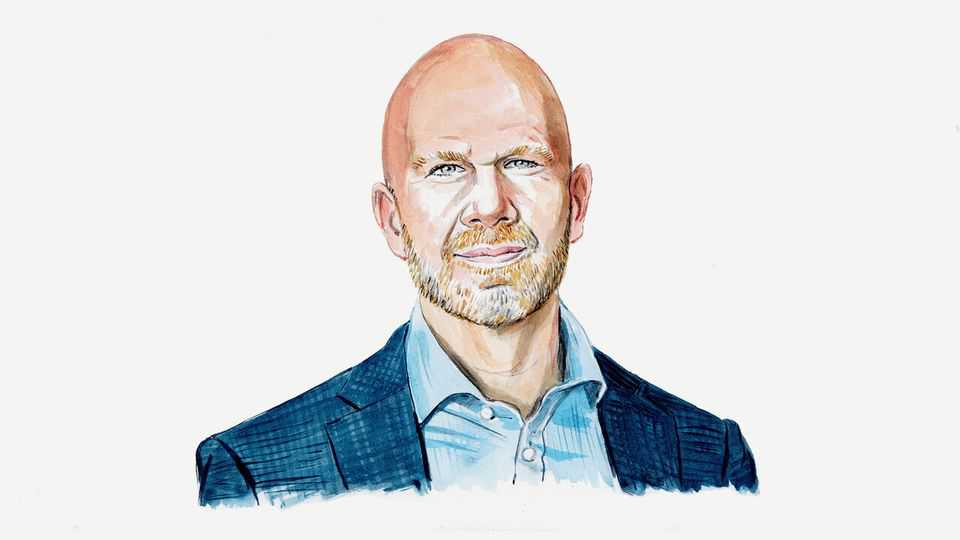
上世纪90年代到底是什么样的？一边是《老友记》《辛普森一家》《宋飞正传》的冷嘲热讽、西雅图垃圾摇滚的焦虑情绪以及腐败频发的白宫；另一边则是股市持续上涨、互联网泡沫和自1920年代以来首次持续性的联邦预算盈余。这些矛盾的化身并非科特·柯本（Kurt Cobain）、杰里·塞因菲尔德（Jerry Seinfeld）或比尔·克林顿（Bill Clinton）。而是艾伦·格林斯潘（Alan Greenspan），时任美联储主席。格林斯潘（100岁）去世后，其留下的遗产复杂到历史学家们将花费数十年时间去解读。
他推动了繁荣的到来：后冷战时代低通胀、高增长和美国经济霸权。但他对金融市场的监管也过于松懈，这些市场逐渐学会押注美联储会出手救助，从而私享收益、公担损失。这种遗产令人熟悉。另一种遗产同样重要，既是央行行长们继任者必须面对的邀请，也是警示。格林斯潘不仅是预测者、央行行长、自由派人士，更是一位政治家。他精通在政治荆棘丛中引导美联储前行的技艺，也时常将美联储拖入本不该涉足的漩涡。第一课是勇气。1987年上任后，格林斯潘继承了前任保罗·沃尔克（Paul Volcker）的优势，迅速树敌：副总统乔治·H·W·布什（George H.W. Bush），罗纳德·里根（Ronald Reagan）的接班人。■
随着1988年大选竞选逐渐升温，格林斯潘领导的美联储因担心经济过热和通胀再度抬头而加息。老布什显然不悦。老布什在1988年大选中轻松获胜，并迅速创下总统任内最高民意支持率纪录。但随着经济趋缓，这位不可战胜的总统开始察觉到经济疲软。1991年，海湾战争接近尾声时，老布什在个人声望巅峰期要求“利率应立即下调”。格林斯潘未妥协。美联储虽逐步降息，但直到1992年大选年才完成。老布什后来将败选归咎于美联储。他大概率是对的。到比尔·克林顿就任时，格林斯潘已掌握政治主动权。■
1995年白宫幕僚长公开批评美联储高利率政策时，罗伯特·鲁宾（Robert Rubin）作为克林顿政府的首席经济顾问，对此进行了斥责，并确立了新的规则：今后白宫行政团队再也不会公开批评美联储。这一教训在克林顿政府时期与鲁宾关系密切的经济合作者——时任美联储主席艾伦·格林斯潘（Alan Greenspan）的每周会面中得到强化。对格林斯潘继任者的启示十分明确：美联储主席最重要的政治任务是维护独立货币政策的特权。并非因为美联储永远正确，而是因为总统及其党内同僚始终倾向于更容易获得的货币宽松政策，这种政策只在他们关注的时间范围内有效。如果美联储的独立性意味着什么，那意味着抵制这种短视行为。■
问题在于，这位主席是否有格林斯潘那样的勇气来捍卫它。格林斯潘掌握的权力也暗藏阴暗面。他多次插手本与货币政策无关的辩论。2001年，他加入小布什政府推动大规模减税。这些减税措施将使国家债务增加数万亿美元，并实质终结两党对任何财政紧缩的共识。格林斯潘后来得出结论，自己的热情是个错误，但为时已晚。如果说小布什催生了美国财政命运的转变，格林斯潘则是助产士。他并未止步于此。在小布什政府第二任期期间，他支持私有化社会保障体系。
改革是他加入美联储前投入大量时间研究的议题，他曾领导制定现代社会保障体系的改革方案。格林斯潘的政策直觉是正确的。该体系的可持续性路径，彼时正如今般不可持续。这些本不该影响一位现任美联储主席。格林斯潘将自身声望用于党派议程，损害了自己与美联储的声誉。面对此类问题，美联储主席唯一恰当的回应应是简单明了的：我对属于国会和白宫的事务无从置喙。如今美联储由凯文·沃什执掌。在确认听证会上与参议员伊丽莎白·沃伦的交锋中，他坚持表示希望“将政治与货币政策、货币政策与政治彻底隔离”。这想法令人钦佩却过于理想化。■
央行不应享有与政治体系隔绝的特权，因为政治体系赋予其存在意义并承担问责责任。问题不在于美联储能否将政治因素从政策制定中剔除，而在于美联储应奉行何种政治立场。格林斯潘的成败经验为后人提供了清晰的路线图。面对将货币政策交由短期党派策略主导的压力，美联储主席必须坚守制度主义立场。特朗普总统对美联储的攻击堪称空前激烈，但其要求宽松货币政策的冲动，与美联储创立之初便存在的总统本能并无二致。我们无需等待下一次总统的怒火爆发，便知美联储主席应如何行动。他必须捍卫美联储。然而沃什先生如同格林斯潘般，亦是根深蒂固的党派分子。■
格林斯潘遗产的第二课是，现任主席必须竭尽全力摆脱那些直觉。不得对所属政党或其政治人物表示赞许，也不得评论任何党派政策。他的职责范围十分狭窄。从今往后，他的政治任务很简单：保护美联储免受外部势力影响。他的成功或失败将定义其历史地位，其余内容不过是注脚。■彼得·康蒂-布朗（Peter Conti-Brown）是沃顿商学院金融监管副教授，著有《联邦储备体系的权力与独立性》及《联邦储备体系：美国历史》（即将出版）。
§072 以色列将接受特朗普的伊朗协议原题：Israel will come to terms with Donald Trump’s Iran deal · 板块：其它 · 栏目：其它
《经济学人》专栏 作者：达莉亚·达萨·凯耶
以色列将接受特朗普的伊朗协议。然而，这种脆弱的和平即便不经过任何破坏尝试，也可能偏离轨道，达莉亚·达萨·凯耶写道。
美伊结束战争的备忘录刚刚签署，便在黎巴嫩遭遇首次考验——以军与真主党持续交火，这支持了华盛顿特区情报部门的结论，即以色列试图破坏该协议。不过，这些担忧或许被夸大了。以色列人对特朗普——此前在他们当中颇受欢迎——签署一项他们认为损害国家安全利益的协议感到沮丧。
他们的不满不仅限于MOU对以色列在黎巴嫩行动的限制：核问题仍未解决；该协议未提及削减伊朗导弹能力或其对代理人组织的支持；制裁解除和其他经济诱饵为许多以色列人认为本可推翻的政权提供了一条生路。以色列总理本雅明·内塔尼亚胡并不想结束战争，更不愿以这些条件结束。因此他有强烈动机破坏这项协议。自2023年10月7日哈马斯发动袭击以来，以色列不仅在加沙地带，还在整个地区动用了军事力量，而拜登和特朗普总统几乎没有予以任何反制。以色列政界精英普遍将伊朗视为最严峻的安全威胁来源，并认为外交手段毫无成效。■
尽管美国对以色列的袭击感到沮丧，内塔尼亚胡可能仍相信特朗普缺乏迫使以色列永久停止军事行动或从南部黎巴嫩撤军的能力。毕竟，这位总统在加沙地带几乎未能落实自己的“和平计划”，也未能结束以色列对超过60%地带的占领。因此，以色列在地区上的底气相较几年前已明显增强。此外，许多以色列民众认为特朗普的临时协议比2015年美及其他大国与伊朗达成的核协议（JCPOA）还要糟糕——这被视为最大的侮辱。那么，为何以色列会接受自己不喜欢的协议？至少有三个原因可能促使它这么做。首先，以色列无法承受与华盛顿彻底决裂的后果。以色列民众对特朗普批评其在黎巴嫩的战术手段感到不安，对副总统J.D.
范斯批评那些反对协议的以色列政客，称他们“在唯一仍能依靠的强大力量上发动攻击”。以色列是中东地区最强大的军事力量，但若失去盟友将难以为继。尤其在选举年，反对特朗普的协议将带来显著的国内政治代价，除极右翼领导人外，其他以色列领导人恐怕难以承受。其次，以色列领导人可能认为，即便不采取行动，该协议也会自行瓦解，因此为何要冒反噬风险？美伊之间仍存在深刻不信任。特朗普的决策始终难以预测。在政权更迭引发的战争后，德黑兰已出现更为强硬的领导层。协议中关于伊朗核计划及霍尔木兹海峡未来管理的关键承诺，用“含糊”来形容都显得过于温和。■
谁会对此感到意外，如果签署协议的两国政府竟能单方面毁掉协议？第三，这场战争未能实现任何明确的战略目标。因此，以色列领导人可能不得不暂时搁置推翻伊朗政权的梦想，转而回到影子战争模式。这可能意味着放弃对伊朗政治领导人实施暗杀或近期已成为常态的公开军事行动，转而专注于对核设施的秘密破坏行动，或针对伊朗向代理人武装转移导弹和无人机的袭击。以色列大概率将继续打击与伊朗结盟的民兵组织领导人，但可能避免在伊朗境内开展行动，同时与华盛顿协调建立新的红线。■
美国和伊朗甚至可能选择无视这些攻击，如果谅解备忘录（MOU）为双方带来实际利益，例如对伊朗而言是制裁解除和经济宽限，对美国而言则是防止全球经济进一步恶化。这一切表明，内塔尼亚胡（Benjamin Netanyahu）即便面临以色列国内的反对态度，也意识到美国政治光谱中日益增长的反以情绪，最终仍可能适应最终协议的现实，如果此类协议最终达成的话。事实上，这正是伊朗核协议（JCPOA）的结局，即便在内塔尼亚胡公开挑战的奥巴马总统任内亦是如此。无论是以色列领导人当年罕见地向美国国会发表演讲以削弱奥巴马政府的外交努力，还是亲以团体大规模游说试图让JCPOA流产，均未能阻止协议的推进。■
以色列勉强接受了协议，将关注点从核问题转向削弱伊朗及其代理人真主党在叙利亚和黎巴嫩的活动。尽管对奥巴马政府将其排除在促成协议的幕后谈判之外感到愤怒，但一旦外交进程公开化，以色列在2018年特朗普兑现竞选承诺退出所谓“史上最糟协议”前，基本停止了针对伊朗的“影子战争”袭击。然而，伊朗问题相对平静的局面并不稳固。内塔尼亚胡无疑会向特朗普政府施压，要求重拾强硬立场。即便以色列保持相对克制，局势也难以稳定。这或许仅能提供短暂的喘息期，缓解一场灾难性战争的威胁，而各方仍需为下一轮冲突做准备。■
达莉亚·达萨·凯伊（Dalia Dassa Kaye）是加州大学洛杉矶分校伯克利国际关系中心的高级研究员，著作《Enduring Hostility: The Making of America’s Iran Policy》。■